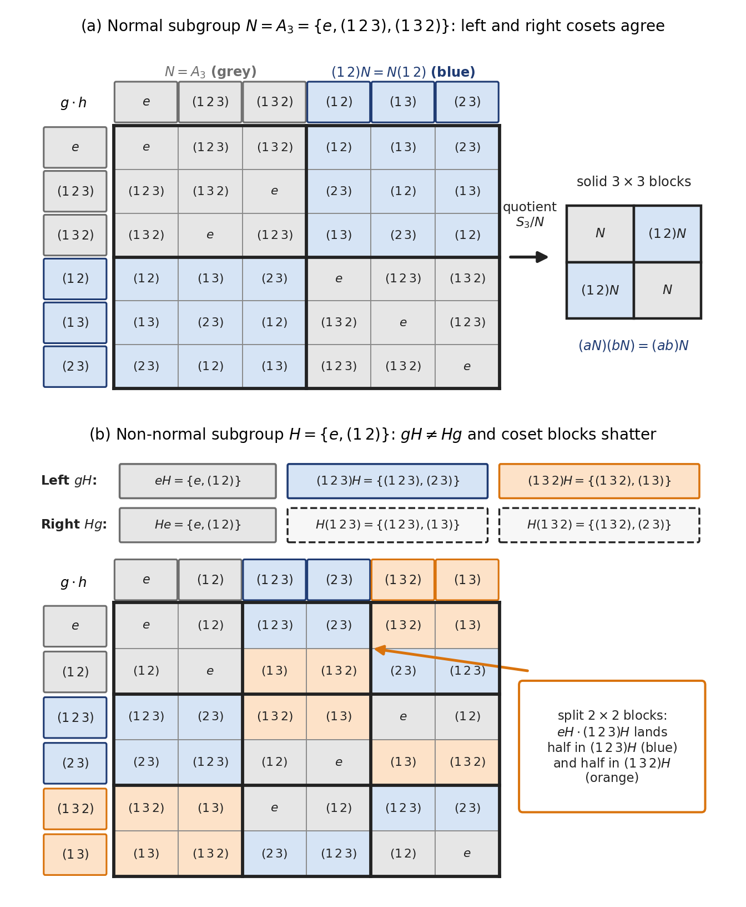
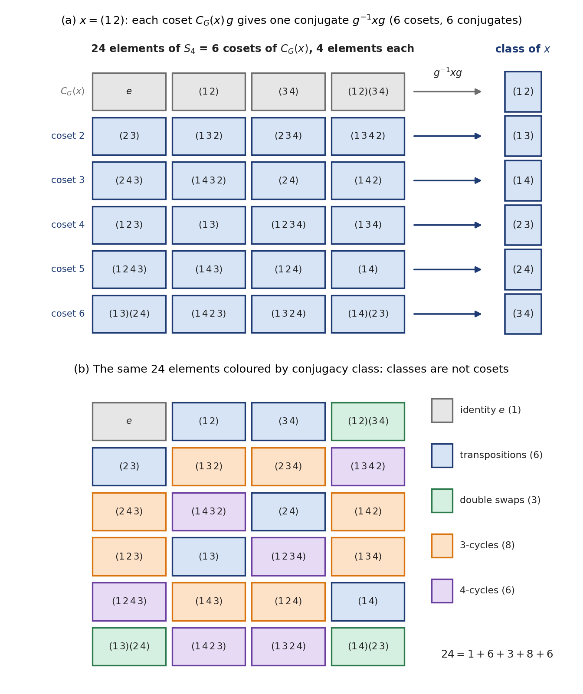
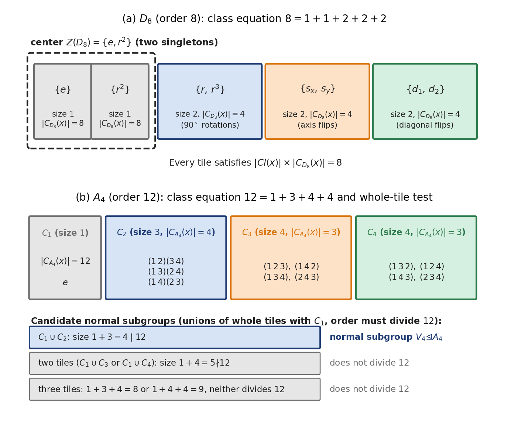
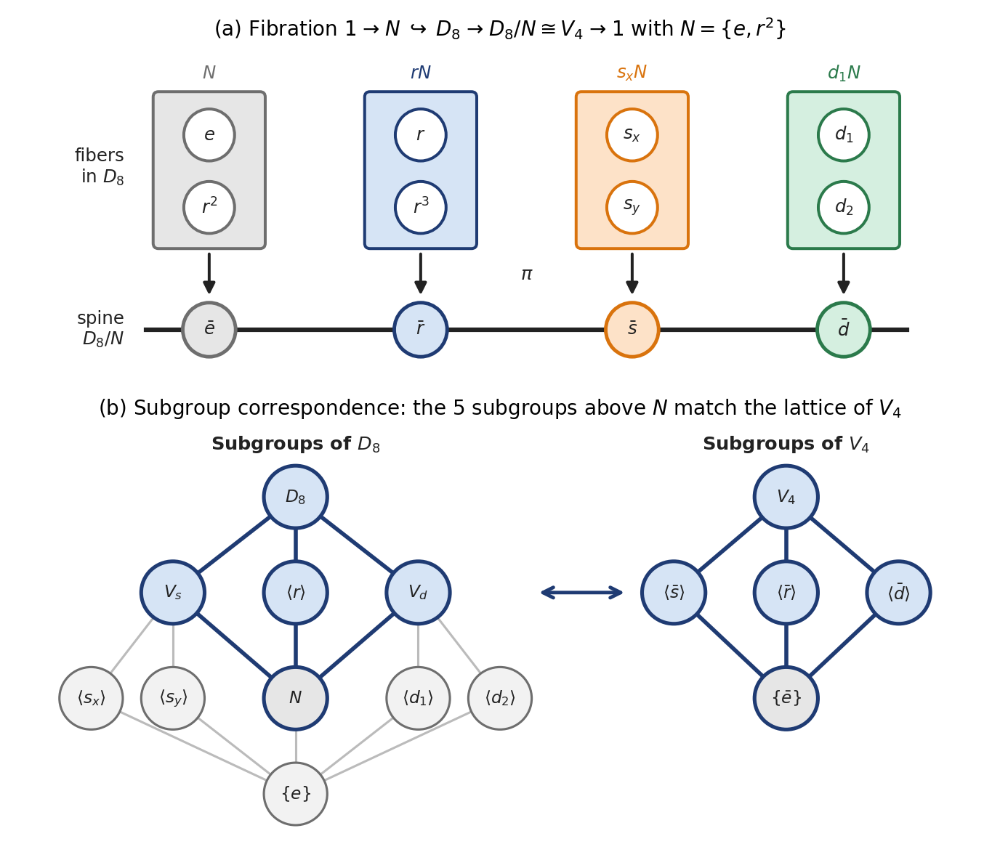
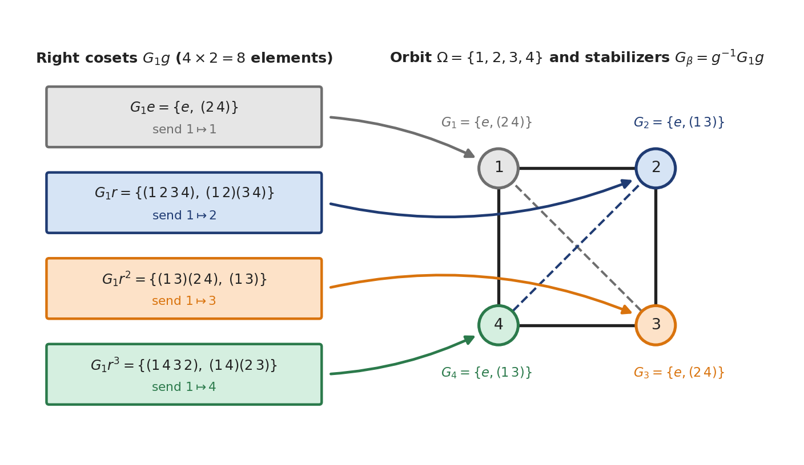
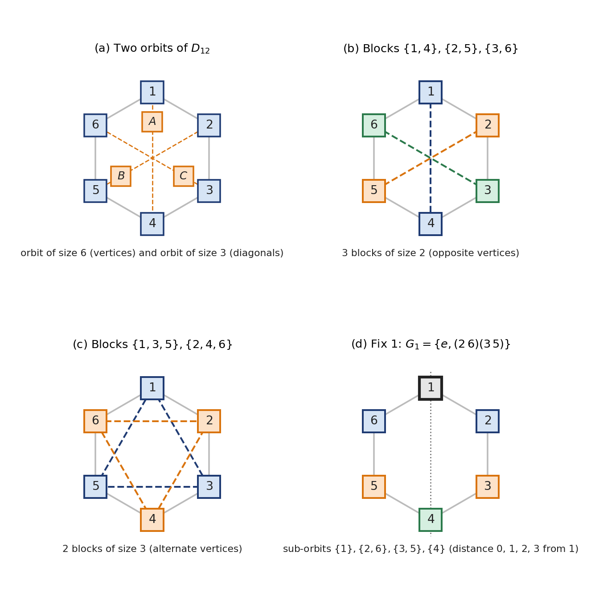
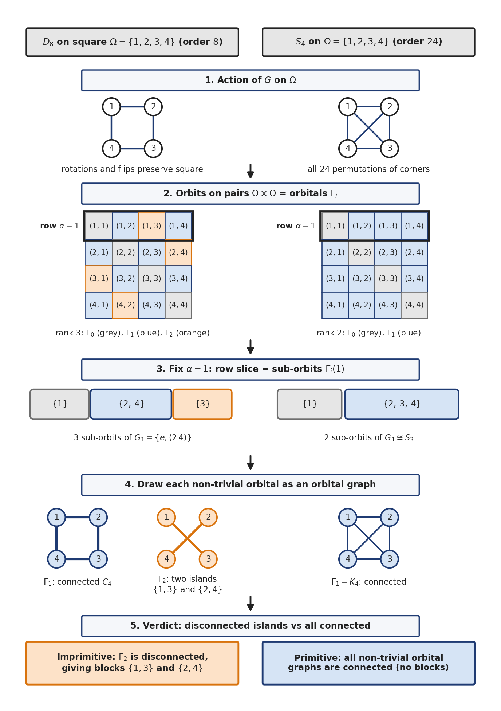
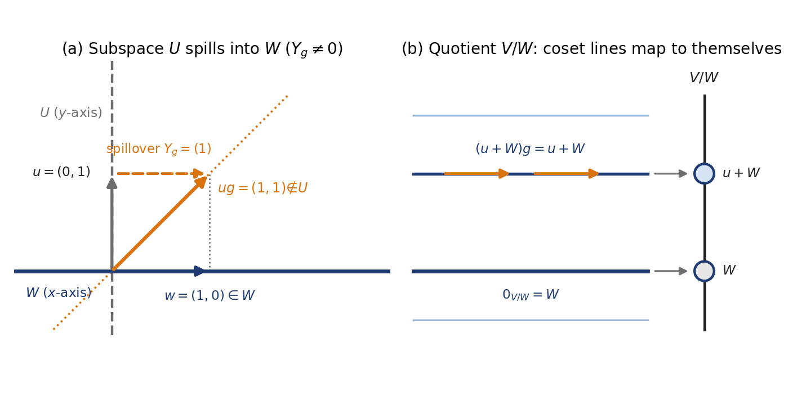
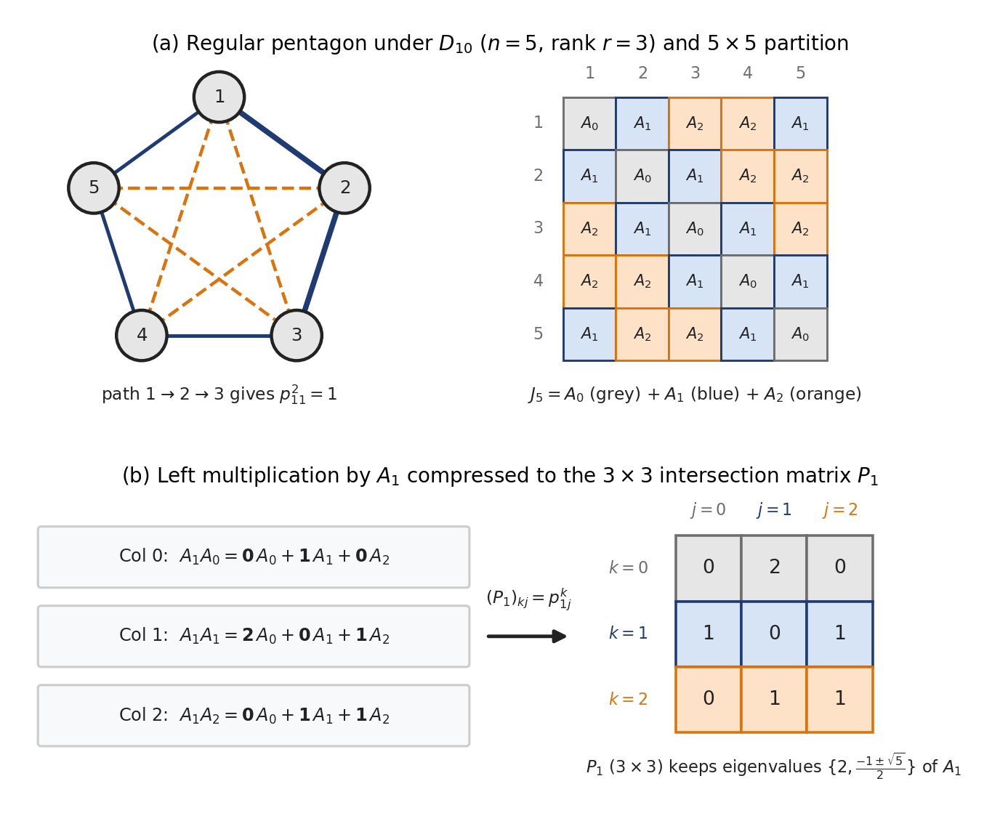
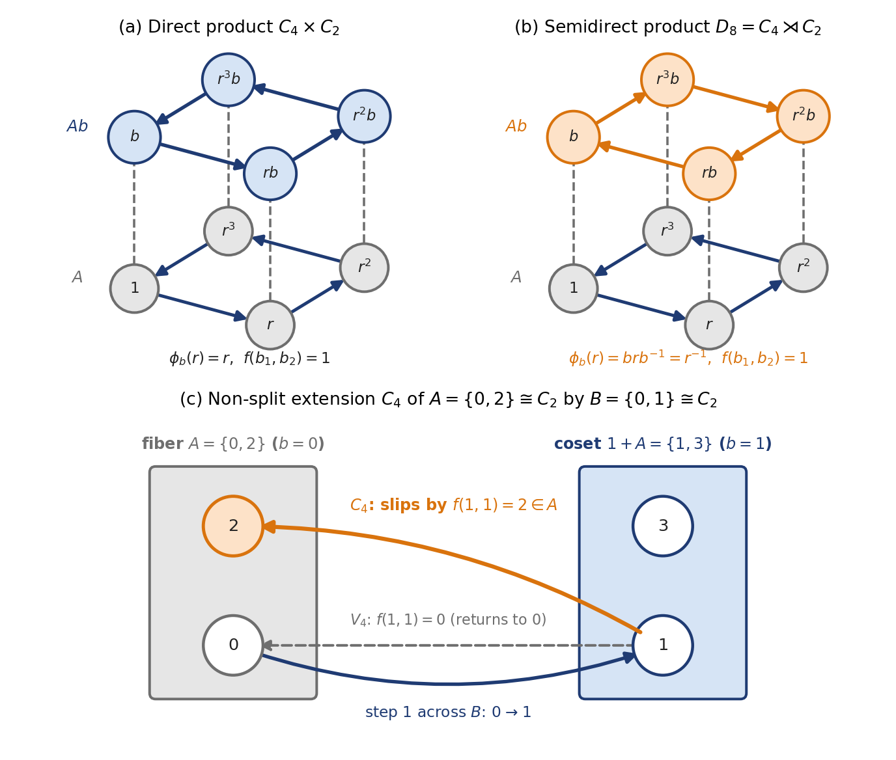

Maths 2 - Sets, Rings, Fields & Groups¶
A Bit About Proofs & Logic¶
The main strategies in proofs are by:
Counterexample, where given a general statement \(P\), to show that \(P\) is true it is necessary to give a general proof; but to show that \(P\) is false, we have to give one specific instance in which it fails.
Contradiction, where to prove that \(P\) is true, we assume it is false and then show some contradiction. For e.g. if \(n \in \mathbb{N}\), \(2n\) must be even. Let's assume \(2n\) is odd. Then \(2n = 2m + 1\) for some \(m \in \mathbb{N}\), which implies \(n-m = \frac{1}{2}\), i.e. an integer is a fraction, which is a contradiction!
Contrapositive. The contrapositive of the statement ‘if \(P\), then \(Q\)’ is the statement ‘if not \(Q\), then not \(P\)’. They are logically equivalent. We can prove this if it is more convenient.
Induction. Prove a statement \(P(n)\) for \(n=0\). Then show that if \(P(n)\) is assumed true, \(P(n+1)\) is true. A variation is the Strong Induction principle where we assume \(P(m)\) is true for all \(m<n\) and then show that it must hold for \(P(n)\) also. For example, you could use this to prove that any natural number greater than 1 has a prime factor.
Now for Logical Conditions. We say that \(P\) is a sufficient condition for \(Q\) if the truth of \(P\) implies the truth of \(Q\); that is, \(P\) implies \(Q\), which is the same as "if \(P\), then \(Q\)", or "\(Q\) if \(P\)".
We say that \(P\) is a necessary condition for \(Q\) if the truth of \(P\) is implied by the truth of \(Q\), that is, \(Q\) implies \(P\). (This is the converse of the statement that \(P\) implies \(Q\).) We also say "\(Q\) only if \(P\)".
We say that \(P\) is a necessary and sufficient condition if both the above hold true.
AND (\(\land\)), OR (\(\lor\)) and NOT (\(\neg\)) to combine conditions should be familiar from Boolean operations.
Sets, Operations & Relations¶
Sets¶
A set is a collection of objects. That definition doesn't help much because what is a collection?! No wonder then that the word "set" has 430 definitions in the Oxford Dictionary, which makes it one of the longest entries. But our definition is something we can more or less grasp, so we won't belabour the point. Let's move on.
Unions, intersections and difference i.e. elements of \(A\) not in \(B\), correspond to the logical operations OR, AND and NOT. The symmetric difference of two sets is any element that is in only one of \(A\) or \(B\). This corresponds to XOR. We can write, \(A \Delta B = (A \setminus B) \cup (B \setminus A) = (A \cup B) \setminus (A \cap B)\).
The Cartesian Product \(A \times B\) is the set of all ordered pairs with first element in \(A\) and second element in \(B\). You could extend this to a product of \(n\) sets as well. The name ‘Cartesian’ commemorates Descartes, who unified algebra and geometry by the insight that the Euclidean plane (a geometric object) is essentially the same as the set \(\mathbb{R} \times \mathbb{R} = \mathbb{R}^2\): each point of the plane can be represented by its Cartesian coordinates, which are an ordered pair \((x, y)\) of real numbers.
The number of elements in a set \(A\) is called the cardinality of \(A\), and written as \(\vert{}A\vert{}\). Note that \(\vert{}A \cup B\vert{} = \vert{}A\vert{} + \vert{}B\vert{} - \vert{}A \cap B\vert{}\) and \(\vert{}A \times B\vert{} = \vert{}A\vert{} \cdot \vert{}B\vert{}\).
The set of all subsets of a set \(A\), including \(A\) and the empty set, is called the Power Set of \(A\).
Surprisingly, you can use logical operations to prove stuff about sets. We already mentioned how unions, intersections etc. are related to logical operations. Now let us say we want to prove: \(A \cap (B \cup C) = (A \cap B) \cup (A \cap C)\). This will follow if we can show that the two propositions \(p \land (q \lor r)\) and \((p \land q) \lor (p \land r)\) are equivalent. We could just write down the truth tables of both the logical expressions and see if they are equivalent.
Operations & Relations¶
A binary operation is a mapping from \(A \times A\) to \(A\) i.e. it takes two elements of set \(A\) and outputs one element. Addition and multiplication are examples. You can have n-ary operations.
A binary relation is a mapping from \(A \times A\) to an output that is either true or false. Greater than and less than are examples. Equivalently, a relation \(R\) on \(A\) is the subset \(R \subseteq A \times A\) of pairs for which the output is true, and we write \((a, b) \in R\) when \(a\) is related to \(b\).
An equivalence relation is a binary relation \(R\) on \(A\) that is reflexive, or \((a,a) \in R\) for all \(a \in A\); symmetric i.e. if \((a, b) \in R\) then \((b, a) \in R\); transitive i.e. if \((a, b) \in R\) and \((b, c) \in R\) then \((a, c) \in R\).
The relation mod 4 between two numbers is an equivalence relation.
An equivalence relation results in a partition of the set \(A\). A partition is a set of subsets of \(A\) where none of them is empty and each element of \(A\) lies in only one of these subsets. Thus the equivalence relation between \(a\) and \(b\) essentially comes down to are we or are we not in the same subset of the partition. The subsets are called equivalence classes.
A non-constant polynomial with coefficients in a field \(F\) (such as \(\mathbb{R}\) or \(\mathbb{C}\); fields are defined below) is called irreducible over \(F\) if it cannot be written as the product of two polynomials of smaller degree with coefficients in \(F\). So irreducibility depends on the field: \(x^2 + 1\) is irreducible over \(\mathbb{R}\), but over \(\mathbb{C}\) it factors as \((x - i)(x + i)\). Any linear polynomial is obviously irreducible. Irreducible polynomials play a similar role to prime numbers: any non-constant polynomial can be factorised into irreducible polynomials. With coefficients in a field, the factors are unique up to their order and up to multiplying them by non-zero constants, just as the prime factors of an integer are unique up to order and sign. For example, \(x^2 - 1 = (x - 1)(x + 1) = (2x - 2)(\tfrac{1}{2}x + \tfrac{1}{2})\) is the same factorisation twice.
Rings & Fields¶
Rings were originally conceptualized to help solve Fermat's Last Theorem, but we don't need to bother about that now. As a starting point, you can picture a ring as literally a ring or a circular series of numbers that wraps around after reaching a particular point. (This is only a motivating picture; the actual definition comes below, and many rings do not wrap around at all.) You know this for modulo functions already, such as modulo 4 where the remainders are \(\{0, 1, 2, 3\}\). Then all the integers wrap around again. So modular arithmetic isn't a separate thing from the integers. A lot of our work with rings is via modular arithmetic, modulo functions, and their algebras. But rings in abstract algebra are not exclusively about modular arithmetic.
Even the integers \(\mathbb{Z}\) are a ring. They don't wrap around, but you could look at it as an infinitely large ring. In fact, modern geometry and algebra view \(\mathbb{Z}\) as the "parent ring" from which every other ring inherits its basic characteristics. Every modular ring \(\mathbb{Z}/n\mathbb{Z}\) (the integers mod \(n\); the slash notation for a quotient ring is explained in the intuitive picture below) is a slice of the infinite integers. You create them by taking the infinite ring \(\mathbb{Z}\) and collapsing it at a certain interval \(n\). We can also go the other way around and attempt to construct an "infinitely large ring" using a concept called the inverse limit. We chain together larger and larger modular rings, looking at \(\mathbb{Z}/2\mathbb{Z}\), then \(\mathbb{Z}/4\mathbb{Z}\), then \(\mathbb{Z}/8\mathbb{Z}\), and so on out to infinity. You don't quite get \(\mathbb{Z}\), but you get a closely related infinite ring called the \(2\)-adic integers (a specific instance of the \(p\)-adic integers, \(\mathbb{Z}_p\)). In these rings, numbers can be infinitely long, effectively allowing you to work with modular arithmetic at an infinite scale.
The Intuitive Picture¶
Let us build up what goes into a ring step-by-step. Start with the full ring \(R = \mathbb{Z}\). Imagine an infinite tape measure marked with ticks at \(\dots, -2, -1, 0, 1, 2, \dots\). Addition (\(a + b\)) is about shifting along the tape. Multiplication (\(a \cdot b\)) is about scaling the tape. \(0\) is the anchor point (origin).
Now we want to build up the rules for mathematics in this ring. For example, how do I add, multiply and whatnot. The rules for addition are pretty straightforward and similar to integers. In terms of the intuitive picture, we'll focus a bit more on other properties, such as multiplication, division and prime numbers, that might trip people up.
Let's say you take a circle that is 4 units in circumference and wrap all your integers around that circle. You keep lapping around again and again. So modular arithmetic is kind of like going in circles, while the integers are like going to infinity. It's very spiritual!
Now when you keep wrapping around the circle, you will see that numbers start to cluster up one above the other. \(\{\dots, -8, -4, \mathbf{0}, 4, 8, 12, \dots\}\) would be one stack. Similarly, \(\{\dots, -7, -3, \mathbf{1}, 5, 9, \dots\}\) etc. You would get 4 such stacks. Each of these stacks is now called a coset. Together the cosets form a partition, which is a very literal description: all the integers will be present in exactly one coset. We say they are in an equivalence relation, which is also pretty much what it says. They are equivalent for all practical purposes while working in this ring. This process is technically called gluing i.e. you say this set of points from the integers are all equivalent in the new ring of stacks (the quotient ring, defined below). You glued them together into one thing! They are also called equivalence classes and are subsets of the main ring. Only one of them, the stack of \(0\) (which is \(4\mathbb{Z}\) itself), is a subring (a subset that is itself a ring under the same addition and multiplication; more on subrings below). The other stacks do not contain \(0\) and are not closed under addition: \(1 + 1 = 2\) is not in the stack of \(1\).
\(I = 4\mathbb{Z} = \{\dots, -8, -4, \mathbf{0}, 4, 8, 12, \dots\}\) is a bit special. These are the numbers that stack with \(0\). They are equivalent to it. This set (subring actually) of numbers is called an ideal. The most important thing is, if you multiply any integer by any element in this stack, the result is also found in this stack. Nothing surprising here. The stack is all the multiples of 4. \(4\) multiplied by an integer will be a multiple of \(4\) and so it will be part of the stack.
But conceptually, as far as the ring goes, this entire set, i.e. every number in the ideal, functions in multiplication like a \(0\) does among integers. You multiply any number by \(0\), you end up with a \(0\). This is called the Absorption Property. We have therefore recreated a property of multiplication in the integers in such a way that it will work in a ring.
Now, pick up the entire \(I\) and shift it to the right by 1, then 2, then 3.
Shift by \(0\) (This is called the zero coset / The Ideal itself): \(0 + I = \{\dots, -8, -4, \mathbf{0}, 4, 8, \dots\}\)
Shift by \(1\) (The coset \(1 + I\)): \(1 + I = \{\dots, -7, -3, \mathbf{1}, 5, 9, \dots\}\)
Shift by \(2\) (The coset \(2 + I\)): \(2 + I = \{\dots, -6, -2, \mathbf{2}, 6, 10, \dots\}\)
Shift by \(3\) (The coset \(3 + I\)): \(3 + I = \{\dots, -5, -1, \mathbf{3}, 7, 11, \dots\}\)
Shift by \(4\): \(4 + I = \{\dots, -4, 0, \mathbf{4}, 8, 12, \dots\} = 0 + I\)
Shifting by \(4\) just lands the grid back on top of itself. So what we have here is the 4 cosets (the 4 parts of the partition) we talked about earlier. Since we have a \(0\) coset, we can also see that the other cosets are essentially just the remainders we get when we divide an integer by the modulus, in this case: \(4\). Any integer with the same remainder gets bracketed into the same coset or equivalence class i.e. the \(k\)-coset consists of all elements \(a\) where \(a - k\) is in the ideal, which means for any two elements \(a\) and \(b\) in the same coset, \(a - b \in I\).
The set of 4 cosets (think of them as co-sets) is called a quotient or factor ring \(R/I\). Why they are not called the remainder ring is a bit confusing because that is what they are built from, but never mind.
The set of 4 cosets is a ring in the sense that they satisfy all the rules of addition and multiplication we expect from a ring (we'll talk about that next). The elements of this quotient ring \(R/I\) are not individual numbers; they are the 4 distinct stacks of overlapping points (the cosets).
The Algebraic Rules¶
It's good to have the intuitive picture in your head, but the algebraic rules given below make it easy to manipulate and work with rings.
A ring is a set where we define an addition and a multiplication operation. Addition must be closed, commutative and associative. There is a zero and every element in \(R\) has an additive inverse. Regarding multiplication, we require closure and the operation should be associative. Multiplication and addition should together follow the Distributive Law on both sides: \(a(b + c) = ab + ac\) and \((a + b)c = ac + bc\) (we need both, because multiplication need not be commutative).
Note that the familiar addition and multiplication we already know are just special cases. We could redefine them however we want provided they follow the above rules.
In our definition of a ring, we required neither the multiplicative identity nor inverse, nor even that multiplication be commutative. Some conventions require a ring to have a multiplicative identity. Rings without an identity are termed rng, without the \(i\). If the identity is present, it becomes a ring (with the \(i\)). We won't bother with that here. Note that any rng can be shown to be a subring (without the identity of course) of a ring.
Examples of Rings: Natural numbers are not a ring as they do not contain negative integers and so the positive integers have no additive inverse. The integers however form a ring. \(n\mathbb{Z}\) for some \(n \in \mathbb{N}\) is also a ring, as is the set of all polynomials with coefficients in \(R\), for any ring \(R\). Note that, with integer coefficients, a set with an upper limit \(d \geq 1\) on the degree of polynomials allowed is not a ring as the multiplication operation will result in a polynomial of higher degree (\(x^d \cdot x = x^{d+1}\)), which means we have no closure. With the limit \(d = 0\) we just get the constant polynomials, which do form a ring (we use them below).
The Cancellation Law holds for rings. If \(a + c = b + c\), then \(a = b\).
A subring of \(R\) is a subset \(S \subseteq R\) which itself forms a ring (using the same operations as those in \(R\)). You need not check all the axioms of a ring to determine if a subset is a ring. A non-empty subset \(S\) of a ring \(R\) is a subring provided that, for all \(a, b \in S\), we have \(a - b \in S\) and \(ab \in S\).
If you are asked to prove that something is a ring, it is usually much easier to recognise that it is a subset of a structure known to be a ring, and then apply the subring tests.
Intuition Redux¶
The set of 4 cosets we talked about earlier is a ring because we used the ideal to partition the ring. Note that you could make cosets using any subring, but the set of cosets becomes a ring only when the subring used in partitioning is an ideal.
Why do we care so much about the ideal and this absorption property? Because it ensures that multiplication results in the same result irrespective of which integer you use from a coset. So \(6 \times 5 = 30 \equiv 2 \pmod{4}\), which is what you get when you do \(2 \times 1\) or \(10 \times 9\). As mentioned, the ideal includes all the multiples of the number you used while wrapping around (\(4\) in our case). That ensures that any two numbers of the type \(x + 4k\) and \(y + 4l\) (any members of the classes of \(x\) and \(y\), for integers \(k\) and \(l\)), when multiplied, result in \((x + 4k)(y + 4l) = xy + 4(xl + ky) + 16kl\). Since we then take modulo 4 of this product, we are left with \(xy\) always, irrespective of which numbers from an equivalence class were multiplied. The mathematics of multiplication is consistent. You can treat all numbers in an equivalence class as the same. So you have ensured one criterion needed to create a ring.
That's nice but how do we know this wouldn't hold if I used a subring other than an ideal to create my coset partitions? With integers, every subring is an ideal so we can't investigate this property. But let's look at a ring where subrings and ideals are different: the polynomial ring \(\mathbb{R}[x]\) or the ring \(\mathbb{Z}[x]\) of polynomials in one variable with integer coefficients.
Consider the ring \(\mathbb{Z}[x]\) (polynomials with integer coefficients).
Let \(S\) be the subring of constant polynomials:
\(S\) is a genuine subring because you can add two integers: you get an integer. You can multiply two integers: you get an integer. It has \(0\) and \(1\).
Now, when we "glue" this subring \(S\) to zero, every integer becomes zero. Now let's multiply some polynomial \(x\) by "two zeroes" \(0\) and \(5\). \(0 \cdot x = \mathbf{0}\) and \(5 \cdot x = \mathbf{5x}\). Both of these should give the same result up to equivalence class i.e. their difference must be in the glued set \(S\). But \(5x - 0 = 5x\) which is not an integer and so not in \(S\). Multiplication is broken. You can't multiply with certainty.
The failure happened because an element inside our glued set (\(5 \in S\)), when multiplied by an element outside (\(x \in \mathbb{Z}[x]\)), escaped outside the glued set (\(5x \notin S\)). Looking back at our previous example where we multiplied integers using the glued set \(4\mathbb{Z}\), we saw that the multiplication results in terms like \(16kl\) and \(4(xl + ky)\), which need to be "cancelled out" so that every product of the equivalence classes results in \(xy\). What does cancelling out mean? It means they go to \(0\) or that they should fall into the ideal.
Algebra Redux¶
So to rigorously define an ideal, an ideal is a subring \(S\) of \(R\) such that if \(s \in S\), then \(sr \in S\) and \(rs \in S\) for all \(r \in R\). This is kind of like a "0" because anything multiplied by 0 is 0.
An ideal acts like a black hole. It can pull all elements of \(R\) into itself by multiplication. When you quotient out by \(I\), every element in \(I\) collapses into the additive identity \(0\). An ideal allows you to kill information and compress the ring into a smaller quotient ring \(R/I\). Ideals are the algebra of \(0\) leading to collapsing and singularities.
You needn't write out the entire set of elements in an ideal. Most times, you can just specify the generators like so \(\langle g_1, g_2 \rangle\). Then start adding up linear combinations of the generators to generate your entire ideal.
This will ensure closure when any element of the ideal is multiplied by some element of \(R\). This formula needs \(R\) to be commutative and to have an identity \(1\), so that each generator \(g_i = 1 \cdot g_i\) is included; in \(2\mathbb{Z}\), which has no \(1\), it would give \(\{2r \mid r \in 2\mathbb{Z}\} = 4\mathbb{Z}\), which misses the generator \(2\) itself.
Example: For our previous examples with integers and 4Z, the ideal is simply written as \<4>, which is equivalent to \(\{\dots, -8, -4, \mathbf{0}, 4, 8, \dots\}\).
Now for something more complicated, \(\langle 1, x \rangle\) is an ideal of the ring of polynomials, but it is the trivial ideal: the entire polynomial ring itself, because it contains \(1\). Any ideal containing the identity \(1\) absorbs everything:
Quotienting out by \(\langle 1, x \rangle\) sets \(1 = 0\), collapsing the entire ring into the zero ring \(\{0\}\).
To get a non-trivial factor ring, an ideal cannot contain any units (elements with a multiplicative inverse, which needs the ring to have an identity \(1\); more on units below): a unit \(u\) in the ideal would put \(u^{-1}u = 1\) in it. In \(\mathbb{R}[x]\) the units are exactly the non-zero constants, but in \(\mathbb{Z}[x]\) the constant \(2\) is not a unit, and \(\langle 2 \rangle\) does give a non-trivial quotient. In \(R = \mathbb{R}[x]\), the ideal generated by the single polynomial \(x\):
This contains every polynomial with no constant term. Multiply any polynomial without a constant term by any arbitrary polynomial, the product has no constant term, so it stays trapped inside \(\langle x \rangle\).
In the quotient ring \(\mathbb{R}[x]/\langle x \rangle\), we declare \(x = 0\). Every polynomial \(a_0 + a_1 x + a_2 x^2\) collapses down to just its constant term, so \(\mathbb{R}[x]/\langle x \rangle \cong \mathbb{R}\). (The symbol \(\cong\) means "is isomorphic to": the two rings are the same up to renaming their elements, as defined below.)
Another example: \(\langle x^2 + 1 \rangle\), the quotient ring of which generates the complex numbers.
This contains every polynomial that has \((x^2 + 1)\) as a factor (i.e., polynomials where \(f(i) = 0\) and \(f(-i) = 0\)). If in \(\mathbb{R}[x]/\langle x^2 + 1 \rangle\), we declare \(x^2 + 1 = 0 \implies x^2 = -1\), then the quotient ring is essentially the remainders we get when a polynomial is divided by \(x^2 + 1\). Such a remainder is at most of degree 1.
Just replace \(x\) by \(i\) and you are looking at a complex number!
A third example is a multi-generator ideal in two variables: \(\langle x, y \rangle\).
In \(R = \mathbb{R}[x, y]\):
This contains all polynomials whose constant term is \(0\). Setting both \(x = 0\) and \(y = 0\) gives us a quotient ring which is just the constants: \(\mathbb{R}[x, y]/\langle x, y \rangle \cong \mathbb{R}\).
Establishing More Mathematical Properties¶
So we've figured out how to do consistent multiplication. Now we need to work towards consistency in division. The first step is to eliminate zero divisors, i.e., some non-zero element \(k \in R\) such that \(k \cdot a = 0\) for some non-zero \(a \in R\). Ideally, you don't want multiplication going to \(0\) when two non-zero numbers are multiplied. Additionally, it's nice to have commutation in multiplication. If a ring has no zero divisors and is commutative, the ring is called an Integral Domain (here we also need the ring to have an identity \(1 \neq 0\); otherwise \(2\mathbb{Z}\) and the zero ring \(\{0\}\) would count).
Now, with the integers, every integer has a unique set of prime factors. A ring which has this property (unique up to ordering and multiplication by units) is a Unique Factorization Domain (UFD; like the PIDs below, a UFD is an integral domain, so it has the identity \(1\) that units need). From a UFD we move up to a Principal Ideal Domain (PID). A PID is one where every ideal is principal, i.e., it has only one generator. PIDs have some nice properties not found in UFDs. For example, GCDs are linear combinations. In a PID, every non-zero prime ideal (an ideal \(P \neq R\) such that whenever a product \(ab\) lies in \(P\), \(a\) or \(b\) already lies in \(P\)) is automatically a maximal ideal (an ideal \(I \neq R\) with no ideal strictly between \(I\) and \(R\)). We look at both more closely below. This means if you quotient a PID by a non-zero prime ideal, you are guaranteed to get a field. The zero ideal has to be left out: in \(\mathbb{Z}\) it is prime, but \(\mathbb{Z}/\{0\} = \mathbb{Z}\) is not a field. PIDs also have some nice properties when it comes to modules, which are like vector spaces but with scalars from a ring instead of a field: every module over a PID that is generated by finitely many elements splits into cyclic modules (modules generated by a single element). This is how abelian groups generated by finitely many elements are classified, since they are the modules over the PID \(\mathbb{Z}\).
Upgrading to a field means every non-zero element is invertible. Actually, if a ring has a (multiplicative) identity \(1 \neq 0\), and every non-zero element has a (multiplicative) inverse, it is called a Division ring. (The condition \(1 \neq 0\) just rules out the zero ring \(\{0\}\).) If a division ring is also commutative, it is a field.
Since every non-zero element of a field has an inverse, say \(a^{-1}\), it means multiplying any other element by this inverse gives a valid element of the field. This is the same as saying dividing an element by another non-zero element gives another element of the field. So every non-zero element divides every other element without leaving a remainder. Because of this property, fields allow for the definition of Vector Spaces. You can divide by scalars, talk about exact dimensions, find bases, and solve systems of linear equations without worrying about remainders or fractions.
Note that a field has only two ideals, both trivial: \(\{0\}\) and the entire field. Because every non-zero element has an inverse, any ideal containing a non-zero element will swallow the whole ring. To see why, let's say an ideal has a non-zero element. That element has an inverse in the field. Applying the definition of an ideal, we multiply these two and the product, i.e., \(1\), must be in the ideal. So \(1\) is in the ideal, which means any element of the field multiplied by \(1\), i.e., that element itself, must also be in the ideal.
Let's see what it takes to replicate all this mathematics in a ring. But first, in standard school arithmetic, we know that a prime number has only \(1\) and itself as factors. They are irreducible into smaller factors. We also know that if a prime \(p\) divides a product \(ab\), i.e., \(p \mid ab\), then at least one of \(p \mid a\) and \(p \mid b\) holds true. These two definitions are collapsed into the same definition.
However, this doesn't always hold in a ring. An element \(p\) that is non-zero and not itself a unit is irreducible if it cannot be factored into two non-units: \(p = ab \implies a \text{ is a unit or } b \text{ is a unit}\). This is the familiar notion. Wait a minute! What is a unit?
In elementary arithmetic and geometry, the word "unit" is commonly used in two ways:
The unit scale / unit length: The minimal step (\(1\)) used to measure or generate all other integers via repeated addition (\(1 + 1 + 1 = 3\)).
The multiplicative identity: The number \(1\), which leaves other numbers unchanged under multiplication (\(x \cdot 1 = x\)).
When algebraists generalized arithmetic to arbitrary rings, they already had standard terms for those concepts: the additive generator and the multiplicative identity. The word unit was repurposed to mean any element that possesses a multiplicative inverse within the ring: \(u \cdot v = 1\). (So units, and the associates, irreducible and prime elements built from them below, only make sense in a ring with an identity \(1\).)
In \(\mathbb{Z}\), the only numbers with multiplicative inverses happen to be \(1\) and \(-1\). Because \(\pm 1\) also happen to be the numbers that generate the ticks on the tape by addition, everyday intuition conflates the two ideas. In a general ring, however, elements can have multiplicative inverses without having anything to do with a "step size": In \(\mathbb{Z}_{12}\) (the integers mod \(12\); from here on \(\mathbb{Z}_n\) means the integers mod \(n\), that is, the quotient ring \(\mathbb{Z}/n\mathbb{Z}\), not the \(p\)-adic integers \(\mathbb{Z}_p\) mentioned earlier), the number \(5\) is a unit because \(5 \times 5 = 25 \equiv 1 \pmod{12}\). It has an exact inverse (\(5^{-1} = 5\)), yet it is not a "minimal step size" in the geometric sense.
In modern algebra: the Unity / Identity is the single element \(1\). The Unit: any element that can be divided by (has an inverse that lands back in \(1\)).
In a finite ring with an identity \(1\), every non-zero element is either a unit or a zero divisor. This also means that if you take a unit and multiply it by all the elements in the ring, the set of products will cover all the elements of the ring.
If two elements of a ring \(a\) and \(b\) are related such that \(a = u \cdot b\) where \(u\) is a unit (i.e., it has an inverse), \(a\) and \(b\) are called associates. This will be important in terms of factorization as we'll see below. Now you see why units are called units. They are similar to \(1\) in integers in that if we multiply some element of a ring by a unit, it lands up at some equivalent element called its associate.
Now getting back to primes and irreducibles, in a commutative ring with \(1\), a non-zero non-unit element \(p\) is irreducible if it cannot be factored into two non-units: \(p = ab \implies a \text{ is a unit or } b \text{ is a unit}\). A non-zero non-unit element \(p\) is prime if: \(p \mid ab \implies p \mid a \quad \text{or} \quad p \mid b\). Whenever \(p\) divides a product, it must divide at least one of the factors. (Units are left out on purpose, just as \(1\) is not a prime number: a unit \(u\) would pass both tests, since \(u = ab\) forces \(a\) and \(b\) to be units, and \(u\) divides everything.)
In terms of ideals, this means the principal ideal \(\langle p \rangle\) is a prime ideal: \(ab \in \langle p \rangle \implies a \in \langle p \rangle \text{ or } b \in \langle p \rangle\).
Now what does unique factorization entail in a ring? A UFD means that every non-zero, non-unit element \(x\) can be written as a product of irreducibles, and that factorization is unique up to the order of factors and multiplication by units (being associates is an equivalence relation, so this again sorts the elements into equivalence classes, as modulo did above; but the classes are different: in \(\mathbb{Z}\), the classes of associates are the pairs \(\{n, -n\}\), not the remainder classes).
Formally, if \(x\) is factored into irreducibles in two ways:
then the number of factors is the same: \(r = s\). After reordering, each \(p_i\) is an associate (is in an equivalence relation) of \(q_i\) (meaning \(p_i = u_i q_i\) for some unit \(u_i\)). The "Prime" Property is what proves this uniqueness.
To prove that the two factorizations are identical:
You start with the first irreducible building block, \(p_1\).
Clearly, \(p_1\) divides the left side, so:
Now you want to cancel \(p_1\) with one of the factors on the right.
If \(p_1\) is PRIME:
By definition of prime, \(p_1 \mid (AB) \implies p_1 \mid A \text{ or } p_1 \mid B\).
Extending this to \(s\) terms, \(p_1\) must divide at least one specific \(q_j\).
Since \(q_j\) is irreducible, its only divisors are units and associates. Therefore, \(p_1\) and \(q_j\) must be associates:
You cancel \(p_1\) from both sides, leaving a smaller equation. (Cancelling a non-zero factor is allowed in an integral domain: \(ab = ac\) with \(a \neq 0\) gives \(a(b - c) = 0\), so \(b = c\) because there are no zero divisors. In \(\mathbb{Z}_6\), which has zero divisors, it fails: \(2 \cdot 1 = 2 \cdot 4\).) By induction, every factor matches up.
If \(p_1\) is ONLY IRREDUCIBLE (Not Prime):
Knowing that \(p_1 \mid (q_1 \cdots q_s)\) does NOT guarantee that \(p_1\) divides any individual \(q_j\)!
It could divide the whole product without dividing any piece.
In short: We factor into irreducibles (unbreakable blocks), but we need those blocks to be prime (divisibility-passing) so that the factorization is guaranteed to be unique.
This is a UFD. We'll skip looking at what it takes to jump to a PID and just look at what is needed to go from PID to a field. To build a field out of a PID, you quotient by a principal ideal \(I = \langle p \rangle\).
In any commutative ring with an identity \(1\) (without one this fails: \(4\mathbb{Z}\) is a maximal ideal of \(2\mathbb{Z}\), but in \(2\mathbb{Z}/4\mathbb{Z}\) we have \(2 \cdot 2 = 4 \equiv 0\), so it is not a field): \(R/I \text{ is a field} \iff I \text{ is a }\textbf{maximal ideal}\)
"Maximal" means there is no other ideal strictly squeezed between \(I\) and \(R\):
Now translate that into the language of a PID, where every ideal is generated by a single element (\(I = \langle p \rangle\) and \(J = \langle d \rangle\)):
Therefore, saying \(\langle p \rangle\) is maximal means: If \(d\) divides \(p\), then either \(\langle d \rangle = \langle p \rangle\) (\(d\) is an associate of \(p\)) or \(\langle d \rangle = R\) (\(d\) is a unit).
But that is the definition of an irreducible (or prime) element! In a PID, for a non-zero ideal:
This also leads to the condition that a field has only two ideals, both trivial: 0 and the entire field.
Two rings are isomorphic i.e. essentially the same for the purposes of algebra if we can set up a map between their elements in such a way that addition and multiplication correspond; that is, if \(a\) corresponds to \(a'\) and \(b\) to \(b'\), then \(a + b\) corresponds to \(a' + b'\) and \(ab\) to \(a'b'\).
A weaker condition is a homomorphism. We define a homomorphism from a ring \(R\) to a ring \(S\) to be a function or map \(\theta : R \to S\) which satisfies \(\theta(a + b) = \theta(a) + \theta(b)\) and \(\theta(ab) = \theta(a)\theta(b)\) for all \(a, b \in R\). Note that the addition and multiplication on the left of these equations are the operations in \(R\), while those on the right are the operations in \(S\). If a homomorphism is bijective, it becomes an isomorphism. A homomorphism is in some way a preservation of the shape of the ring.
Let \(\theta : R \to S\) be a homomorphism of rings. The image of \(\theta\) is \(\text{Im}(\theta) = \{s \in S : s = \theta(r) \text{ for some } r \in R\}\), and the kernel of \(\theta\) is \(\ker(\theta) = \{r \in R : \theta(r) = 0\}\).
\(\text{Im}(\theta)\) is a subring of \(S\). \(\ker(\theta)\) is a subring of \(R\) which has the additional property that, for any \(x \in \ker(\theta)\) and \(r \in R\), we have \(rx \in \ker(\theta)\) and \(xr \in \ker(\theta)\). Two elements of \(R\) are mapped to the same element of \(S\) under \(\theta\) if and only if they lie in the same coset of \(\ker(\theta)\).
The kernel of a homomorphism \(\theta : R \to S\) is an ideal of \(R\). \(\text{Im}(\theta)\) is a subring of \(S\); \(R/\ker(\theta) \cong \text{Im}(\theta)\). This is the first isomorphism theorem.
Homomorphisms and Isomorphisms¶
Remember back when we took the modulo 4, i.e., we wrapped the integers around the circle. We ended up with the ideal, i.e., all the numbers stacked over \(0\). And we got the quotient ring which consisted of the equivalence classes of the remainders. We can generalize this to a map \(\phi\), instead of restricting it to just modulo functions.
Let's first define a ring homomorphism. \(\phi: R \to S\) is a structure-preserving map:
We define \(\ker(\phi) = \{k \in R \mid \phi(k) = 0_S\}\) and the image of \(\phi\), denoted \(\operatorname{im}(\phi)\) (or \(\phi(R)\)), is the set of all elements in the target ring \(S\) that are actually reached by applying \(\phi\) to the elements of the source ring \(R\):
Our earlier modulo operation was actually a homomorphism (well, actually a surjective homomorphism, or epimorphism), where \(R\) was \(\mathbb{Z}\) and \(S\) was \(\mathbb{Z}_4\).
The kernel should remind you of the ideal. It is the set of all elements that get crushed to zero in \(S\).
And when does \(\phi\) send two different elements \(x, y \in R\) to the exact same value in \(S\)?
The map \(\phi\) is literally grouping the elements of \(R\) into bundles (cosets) based on \(\ker(\phi)\). So the way \(\phi(x)\) groups elements should remind you of the quotient ring.
This is the content of the First Isomorphism Theorem for Rings, which states:
If \(\phi: R \to S\) is a ring homomorphism, then:
\(\ker(\phi)\) is an ideal of \(R\).
The image \(\operatorname{im}(\phi)\) is a subring of \(S\).
\(R/\ker(\phi) \cong \operatorname{im}(\phi)\).
Now let's look at the Second Isomorphism Theorem. Structurally, the theorem is equivalent to what we have in arithmetic. For two integers \(a\) and \(b\), \(a \cdot b = \operatorname{lcm}(a, b) \cdot \gcd(a, b)\). In the isomorphism relation below, the left side's numerator is the \(\gcd\) and the right side's denominator is the \(\operatorname{lcm}\).
Let \(R\) be a ring, \(S\) a subring of \(R\), and \(I\) an ideal of \(R\). Then:
The sum \(S + I = \{s + i \mid s \in S, i \in I\}\) is a subring of \(R\).
The intersection \(S \cap I\) is an ideal of \(S\).
\((S + I) / I \cong S / (S \cap I)\)
Let's look at an example. \(R = \mathbb{Z}\), with the ideal grid \(I = 6\mathbb{Z} = \{\dots, -12, -6, 0, 6, 12, \dots\}\). So \(R/I = \mathbb{Z}_6\).
Now introduce a subring \(S\). Let \(S = 2\mathbb{Z} = \{\dots, -4, -2, 0, 2, 4, 6, \dots\}\) (all even numbers).
The left side of the isomorphism: \((S + I)/I\) involves expanding \(S\) by \(I\) and then quotienting by \(I\). One reason we would want to do this is because some elements of \(I\) might not be in \(S\), so by adding \(I\), we take care of this issue.
What is \(S + I\)? Add any multiple of \(6\) to any even number. Since multiples of \(6\) are already even, \(S + I\) is just all even numbers: \(S + I = 2\mathbb{Z}\).
Modding out by \(I = 6\mathbb{Z}\) gives \(\{0, 2, 4\}\). So \((S + I)/I\) is the 3-element sub-dial inside the 6-hour clock: \(\{[0], [2], [4]\}\).
The Right side: \(S / (S \cap I)\). Look only at the subring \(S = 2\mathbb{Z}\), what part of \(I = 6\mathbb{Z}\) lives inside \(S\)? \(6\mathbb{Z}\) itself! So if we quotient by this, what do we get: \(0 \pmod 6\), \(2 \pmod 6\), and \(4 \pmod 6\).
What this means is, the elements of \(I\) that don't belong to \(S\) contribute nothing to \(S\), so modding out by the whole ideal \(I\) has the exact same effect as modding out only by the shared overlap \(S \cap I\). The only algebraic issue is that you cannot technically form the quotient \(S/I\) unless \(I\) is entirely contained within \(S\) (it must be an ideal of \(S\)). By adding \(I\) to \(S\) on the left (creating \(S+I\)), or taking the intersection on the right (\(S \cap I\)), we ensure the quotient fractions are perfectly legal. In our example, \(I = 6\mathbb{Z}\) happens to lie inside \(S\) already, so \(S + I = S\), \(S \cap I = I\), and both sides are simply \(2\mathbb{Z}/6\mathbb{Z}\). To see the theorem do real work, take \(I = 3\mathbb{Z}\) instead: then \(S + I = \mathbb{Z}\) (because \(1 = 3 - 2\)) and \(S \cap I = 6\mathbb{Z}\), so the theorem says \(\mathbb{Z}/3\mathbb{Z} \cong 2\mathbb{Z}/6\mathbb{Z}\), even though \(S/I\) itself cannot be formed.
Now for the Third Isomorphism Theorem. Structurally, this is like the fraction rule in elementary arithmetic:
The theorem states: Let \(R\) be a ring, and let \(I\) and \(J\) be ideals of \(R\) with \(I \subseteq J \subseteq R\). Then:
\(J / I\) is an ideal of the quotient ring \(R / I\).
\((R / I) \,/\, (J / I) \cong R / J\)
Here's an example. Let the tape be \(R = \mathbb{Z}\). Choose \(I = 12\mathbb{Z}\). Choose a wider seam that contains \(I\): \(J = 4\mathbb{Z}\) (every multiple of \(12\) is a multiple of \(4\), so \(12\mathbb{Z} \subseteq 4\mathbb{Z}\)).
Now compare the two ways of reducing the tape. The direct fold (\(R / J\)) gives \(\{0, 1, 2, 3\}\).
Now for \((R / I) \,/\, (J / I)\). First, \(R/I\) gives \(\{0, 1, 2, \dots, 11\}\). And now for \(J/I\), which is just \(\{[0], [4], [8]\}\). Because \(J\) is an ideal in the original ring, this subset of ticks forms a legitimate ideal inside the 12-hour ring.
Now glue the \(R / I\), i.e., \(\{0, 1, 2, \dots, 11\}\), together along the markers \(\{0, 4, 8\}\). \(0, 4, 8\) fuse into a single zero point. \(1, 5, 9\) fuse together into \([1]\). \(2, 6, 10\) fuse together into \([2]\). \(3, 7, 11\) fuse together into \([3]\). So both sides of the isomorphism are the same.
Figure 1 shows the integer tape marked at \(12\mathbb{Z}\) and \(4\mathbb{Z}\), comparing the two-stage collapse through the 12-hour clock with the direct fold onto the 4-hour clock.

Figure 1. Folding the integer tape \(R = \mathbb{Z}\) along the nested ideals \(I = 12\mathbb{Z} \subseteq J = 4\mathbb{Z}\). (a) Folding first at \(12\mathbb{Z}\) gives the 12-hour clock \(R/I\), where \(J/I = \{[0], [4], [8]\}\) and its three cosets form four inscribed triangles that collapse to the 4-hour clock \((R/I)/(J/I)\). (b) Folding the tape directly every \(4\) steps gives the same 4-hour clock \(R/J\).
Note that when we talk about quotienting and we have glued together a finite number of elements like above, how do we take the remainder; which number do we divide by? The answer is: we don't divide, we shift. Shifting is what taking remainders is. You do not need two separate mental procedures: coset shifting is the geometric definition of remainder arithmetic. In any quotient ring \(R/K\), the cosets are generated by taking the base zero-set \(K\) and shifting it across the ring: \(x + K = \{x + k \mid k \in K\}\)
These isomorphism theorems were first published by Emmy Noether. There is no standard agreement on the numbering of the above theorems.
Let's Build A Field!¶
A finite field can only have a prime-power number of elements. However, there's a bit of a catch when dealing with when the power is anything other than \(1\). Let's actually construct the field \(\mathbb{F}_9 = \mathbb{F}_{3^2}\) (so \(q = 3\) and \(q^2 = 9\)).
The integers modulo \(9\) (\(\mathbb{Z}_9 = \{0, 1, \dots, 8\}\)) are NOT a field because \(9\) is not a prime number (\(9 = 3 \times 3\)). In a field, every non-zero element must have a multiplicative inverse, and two non-zero elements can never multiply to give \(0\). Look at what happens in \(\mathbb{Z}_9\) when you multiply \(3 \times 3\):
The number \(3\) is a "zero divisor" and has no multiplicative inverse (\(1/3\) does not exist mod \(9\)). Division fails.
When the size is a prime power \(p^n\), you must build \(\mathbb{F}_{p^n}\) as an \(n\)-dimensional vector space over the prime field \(\mathbb{F}_p\) (the integers mod \(p\), the smallest field sitting inside \(\mathbb{F}_{p^n}\)) by adjoining a root of a degree-\(n\) polynomial that is irreducible over \(\mathbb{F}_p\), the exact same way you build the 2-dimensional complex numbers \(\mathbb{C}\) from the real numbers \(\mathbb{R}\) by adjoining \(i = \sqrt{-1}\).
Since \(x^2 + 1 = 0\) has no solution in \(\mathbb{F}_3 = \{0, 1, 2\}\) (plugging in \(0, 1, 2\) gives \(0^2+1=1\), \(1^2+1=2\), \(2^2+1 = 5 \equiv 2 \neq 0\)), we invent a symbol \(i\) satisfying \(i^2 = -1 \equiv 2 \pmod 3\). Then the \(9\) elements of the field \(\mathbb{F}_9\) are all combinations \(a + bi\) where \(a, b \in \{0, 1, 2\}\), with all arithmetic done modulo \(3\):
In this system, every single non-zero element can be divided cleanly, and because it is built over \(\mathbb{F}_3\), adding anything to itself \(3\) times gives \(0\) (\(\text{Char } \mathbb{F}_9 = 3\)).
Figure 2 shows the nine elements of \(\mathbb{F}_9\) as a \(3 \times 3\) additive grid and as a single multiplicative 8-cycle of powers of \(1 + i\).

Figure 2. The finite field \(\mathbb{F}_9 = \mathbb{F}_3(i)\) with \(i^2 = 2\). (a) The \(3 \times 3\) additive grid over the prime subfield \(\mathbb{F}_3 = \{0, 1, 2\}\), where adding \(1\) three times wraps back to \(0\). (b) The eight non-zero elements as the powers of \(\alpha = 1 + i\) (in the language of the next chapter, the multiplicative group \(\mathbb{F}_9^\times\) is the cyclic group \(C_8\)); the adjoined root \(i = \alpha^6\) reaches only the four even powers, whereas \(1 + i\) cycles through all eight non-zero elements.
Fermat's Little Theorem¶
This theorem comes in handy in many prime power fields like the one we just saw. If \(p\) is a prime number, then for any integer \(a\):
And if \(a\) is not divisible by \(p\) (\(a \not\equiv 0 \pmod p\)), we can divide both sides by \(a\) to get:
In the language of finite fields, this says that for every element \(a \in \mathbb{F}_p\), raising \(a\) to the \(p\)-th power does nothing at all (\(a^p = a\)). In our previous example with \(p = 3\), this is why \(0^3 = 0\), \(1^3 = 1\), and \(2^3 = 8 \equiv 2 \pmod 3\). We will see that this will be very useful in building things like hermitian spaces in projective geometry, where the Frobenius map \(\sigma(x) = x^3\) will leave the "real" part \(a \in \mathbb{F}_3\) completely fixed while flipping \(i^3 = i^2 \cdot i = -i\).
Groups¶
In ring theory, we studied systems with two operations (addition and multiplication). A ring models environments where things can be scaled, added, and multiplied, like polynomials or numbers.
Group theory strips away one operation. A group is a set with a single operation (denoted \(\circ\)). Why do this? Because in the physical world, the most fundamental mathematical object is not a "number," but an action or a transformation. Think of a rotation. You can do one rotation and then another. There isn't any other operation really. You cannot add two rotations and get a rotation. So we have just one operation which we call a composition: do one action, then do the next.
To really make this useful, you must be able to reverse actions, you must be able to do nothing, and a composition of operations should result in another recognizable operation. Accordingly, a group is defined as a set of elements with an associated operation, which is closed under that operation, is associative and has an identity. Every element must also have an inverse. Note that the inverse of a composition (usually a composition is also simply called a product) is \((gh)^{-1} = h^{-1}g^{-1}\), i.e., you invert in the reverse order in which you applied the operations. That makes sense. It is very much like the order in which you put on and take off shoes and socks.
Because a group has inverses, it obeys the Cancellation Laws: \(gx = gy \implies x = y\).
Groups need not be commutative because actions in space generally depend on the order in which they are performed: rotating a book around the X-axis then the Y-axis yields a different orientation than Y then X. If commutativity holds (\(ab = ba\)), such groups are called Abelian. It is customary to use \(+\) instead of \(\circ\) in abelian groups.
Example: The set of all integers, with the operation \(+\), is a group. In fact, if \(R\) is any ring, we get a group with the operation \(+\). It is an abelian group which is the same thing as saying it is the additive group of a ring. Conversely, given any abelian group \(R\), where the group operation is written as \(+\) and the identity as \(0\), we obtain a ring (called a zero ring, or a ring with zero multiplication; not to be confused with the one-element zero ring \(\{0\}\) from earlier) by defining the ring multiplication by the rule \(ab = 0\) for all \(a, b \in R\).
Similarly, the set of units of a ring with an identity \(1\), with the operation of multiplication, is a group. This is called the group of units of the ring \(R\).
Similarly, with a field \(F\), \(F \setminus \{0\}\) is a group, the multiplicative group of \(F\), written as \(F^*\) (or \(F^\times\), as in Figure 2; the two symbols mean the same).
The set of invertible \(n \times n\) matrices (\(\det(A) \neq 0\)) over a field \(F\), with the operation of matrix multiplication, is a group, the General Linear group \(GL(n, F)\).
A fundamental aspect behind groups is permutation, i.e., taking a set and permuting it or switching some of the elements. Every permutation can be written as a series of swaps between two elements. If there are an even number of these swaps, the parity of the permutation is even. Otherwise, it is odd.
If you take a set of \(n\) points, say \(\{1, 2, \dots, n\}\), and write out all the possible permutations of its elements, these form a group called the symmetric group \(S_n\): the group of all permutations of \(n\) points. It has \(n!\) elements.
Usually, a permutation is written out in the cycle notation, which tells us which element each element is sent to, until it returns to itself. A cycle such as \((1, 2, 3)\) means that each listed point goes to the next one and the last goes back to the first, \(1 \mapsto 2 \mapsto 3 \mapsto 1\), while points that are not listed stay put; so \((1, 3, 2)\) is \(1 \mapsto 3 \mapsto 2 \mapsto 1\), and the 2-cycle \((1, 2)\) just swaps \(1\) and \(2\). A permutation may involve multiple cycles working together because it may not be possible for one element to permute into all other elements. If that were possible, we would have a single cycle. For example, \(S_3\) consists of the six elements which permute the 3 items \(1\), \(2\), \(3\) in the following way (in cycle notation): \((1)\) (the identity, so nothing is permuted), \((1, 2, 3)\), \((1, 3, 2)\), \((1, 2)\), \((2, 3)\), and \((1, 3)\). A 2-cycle like (2 3) is a transposition.
To multiply permutations, we read the product from left to right: \(gh\) means first do \(g\), then do \(h\). To work out a product, follow each point through the factors in turn. For \((1\,2)(1\,2\,3)\), we first apply \((1\,2)\) and then \((1\,2\,3)\):
| start | after \((1\,2)\) | after \((1\,2\,3)\) | result |
|---|---|---|---|
| \(1\) | \(2\) | \(3\) | \(1 \to 3\) |
| \(2\) | \(1\) | \(2\) | \(2\) stays put |
| \(3\) | \(3\) | \(1\) | \(3 \to 1\) |
So \(1\) and \(3\) swap, \(2\) does not move, and the product is \((1\,3)\). When we write the answer in cycle notation, we start each cycle with its lowest number, and we leave out the points that do not move, so \(2\) does not appear. (Writing \((3\,1)\) or \((1\,3)(2)\) would describe the same permutation.)
Some books read products from right to left, like composing functions. There \((1\,2)(1\,2\,3)\) means first \((1\,2\,3)\) and then \((1\,2)\), and following the points in that order gives \(1 \to 2 \to 1\), \(2 \to 3 \to 3\) and \(3 \to 1 \to 2\), so the product is \((2\,3)\) instead. The two answers differ because permutations do not commute in general, so it is worth checking which convention a text uses.
A Cayley table is like an operation table with the group elements listed on top and to the left, horizontally and vertically. Each slot in the table is filled with the group element produced by the composition of those two elements. This means any row or column will contain only one instance of any element, and every element must be present. This is like Sudoku and is generally called a Latin Square.
Let \(R\) be a ring. An automorphism of \(R\) is an isomorphism \(\theta : R \to R\); in other words, it is a permutation of \(R\) which happens also to be a homomorphism satisfying \((x + y)\theta = x\theta + y\theta\) and \((xy)\theta = (x\theta)(y\theta)\). (Here the map is written on the right of its argument, so \(x\theta\) means \(\theta(x)\); group theory books often do this because it fits reading products left to right: \(x\theta\phi\) means first \(\theta\), then \(\phi\).) \(\operatorname{Aut}(R)\) is the set of all automorphisms of \(R\). It is a group: the automorphism group of \(R\).
The Rosetta Stone: Rings vs. Groups¶
The structural theorems we learned for rings were ported directly into group theory. Here is the exact translation dictionary between the two:
| Concept | Ring Theory (Additive + Multiplicative) | Group Theory (Multiplicative Only) |
|---|---|---|
| Base Environment | Ring \(R\) | Group \(G\) |
| Neutral Element | Zero (\(0\)) | Identity (\(1\) or \(e\)) |
| Smaller enclosed system | Subring \(S\) | Subgroup \(H\) |
| One-step closure test (non-empty subset) | \(a - b \in S\), plus \(ab \in S\) | \(ab^{-1} \in H\) |
| System that permits quotients | Ideal \(I\) (absorbs \(r \cdot i\)) | Normal Subgroup \(N\) (absorbs \(g^{-1}ng\)) |
| Equivalence bundles | Cosets \(x + I\) | Left/Right Cosets \(gN\) or \(Ng\) |
| Quotient construction | Factor Ring \(R/I\) | Factor Group \(G/N\) |
| Homomorphism property | \(\phi(a+b) = \phi(a)+\phi(b)\) and \(\phi(ab) = \phi(a)\phi(b)\) | \(\phi(ab) = \phi(a)\phi(b)\) |
| Homomorphism Kernel | \(\{r \in R \mid \phi(r) = 0\}\) | \(\{g \in G \mid \phi(g) = 1\}\) |
Subgroups¶
Given a group, there's a few things we'd like to do. We'd like to see if we can break that group into pieces called subgroups, which would make it easier to understand and analyse its behaviour. The other thing we would like to do is to use that group and combine with other groups to form bigger groups. Let's look at the first item.
A subgroup is a subset of a larger group, with the same operation as the parent, which is also a group. As with rings, the simple condition to test whether a subset is a subgroup is to check inversion (subtraction in rings) and composition (addition in rings) in one shot with \(gh^{-1} \in H\) for all \(g\) and \(h\) in \(H\), provided \(H\) is non-empty (the empty set passes this test because it has no elements to check, but it is not a group). Unlike rings though, every subgroup will contain the identity. (Well, even in rings, the additive identity is always present).
As with rings, we can partition a group by a subgroup \(H\), creating bundles or cosets, which are equivalence classes. However, since commutativity need not hold, we have right and left cosets: \(Hg = \{xg \mid x \in H\}\) and \(gH = \{gx \mid x \in H\}\), which are: execute any action of \(H\), then some element \(g\) of \(G\); and execute \(g\), then any action of \(H\).
Because \(gh \neq hg\) in general, \(gH\) and \(Hg\) will usually be completely different sets of actions. Your physical state after \(gH\) is not the same as after \(Hg\). However, the sets of right and left cosets are in bijection with each other.
In a similar way to rings, we can say that \(g_1\) and \(g_2\) belong to the same coset by checking if the composition of their inverse (subtraction in rings) is in the subgroup, i.e., \(g_1 \sim_L g_2\) if and only if \(g_1^{-1}g_2 \in H\); and \(g_1 \sim_R g_2\) if and only if \(g_2g_1^{-1} \in H\).
Now what happens if you composed every element of \(G\) with every element of \(H\)? You would generate a set of all cosets for \(H\). However, many different \(g\)'s will generate the exact same coset.
The order or cardinality of a group \(G\), written \(\vert{}G\vert{}\), is the number of elements in the group. This may be finite or infinite. Every coset of a subgroup \(H\) contains exactly the same number of elements as \(H\). Because cosets perfectly partition the group without overlapping, the total size of the group must be a clean multiple of the size of \(H\). This is called the index of \(H\) (often denoted \([G:H]\)):
This is a rigid quantization rule. A group of 15 elements physically cannot contain a self-contained subsystem of 4 elements.
Normal Subgroups¶
In rings, we built a quotient ring \(R/I\) by partitioning with an ideal. In groups, we build a quotient group \(G/N\) by partitioning by a subgroup that is called a Normal Subgroup. We needed an ideal to ensure multiplication of any elements of equivalence classes always produces the same product. Similarly, we want to look at what properties a subgroup must have to allow multiplication of elements of cosets consistently. For example, \((a)(b) = ab\). Now \(a\) is an element of the coset \(aN\) and \(b\) of \(bN\), while \(ab\) is an element of coset \((ab)N\). We want this relationship of belonging to this same coset \((ab)N\) to hold for the product of any elements of the first two cosets. In other words, we want (the product of two subsets of a group is the set of all products of an element of the first with an element of the second, \(XY = \{xy \mid x \in X, y \in Y\}\)):
To make \(a \cdot N \cdot b \cdot N\) equal \(abN\), you need to be able to swap the \(N\) and the \(b\) in the middle (and note that the \(NN\) reduces to just \(N\) because \(N\) is a group). You need the set \(N\) to commute with the element \(b\):
So a normal subgroup commutes with every element of \(G\) as a whole set (\(gN = Ng\)), even though \(gn\) and \(ng\) can be different elements for a particular \(n \in N\). Its right and left cosets are the same. Another way of writing this is \(g^{-1}Ng = N\) for every \(g \in G\). Or in other words, \(g^{-1}xg \in N\) for every \(g\) in \(G\) and every \(x\) in \(N\). As an aside, this means that in an Abelian group every single subgroup is a normal subgroup. The converse fails, so this does not characterise Abelian groups: the quaternion group \(Q_8 = \{\pm 1, \pm i, \pm j, \pm k\}\) (multiplied by the rules \(i^2 = j^2 = k^2 = ijk = -1\), with \(-1\) commuting with everything) is not Abelian (\(ij = k\) but \(ji = -k\)), yet every one of its subgroups is normal.
One difference from ideals in rings is that while the ideal has the absorption property, there is nothing like that in the normal subgroup. In a ring, absorption works perfectly because you are absorbing a second operation (multiplication) into a subgroup built on the first operation (addition). \(r \cdot 0 = 0\), so multiplying by the additive identity doesn't force \(r\) into the ideal. But in a group, you only have one operation. The only subgroup that absorbs the group operation is the entire group itself. However, the normal subgroup does absorb perspective shifts (which we will explain shortly).
Figure 3 shows the Cayley table of \(S_3\) coloured first by the normal subgroup \(N = A_3\) (the three even permutations \(e\), \((1\,2\,3)\) and \((1\,3\,2)\)), which gives solid \(3 \times 3\) coset blocks, and then by the non-normal subgroup \(H = \{e, (1\,2)\}\), where the \(2 \times 2\) blocks split across two cosets.

Figure 3. Coset blocks in the Cayley table of \(S_3\), with products read left to right (\(gh\) means first \(g\), then \(h\)). (a) For the normal subgroup \(N = A_3 = \{e, (1\,2\,3), (1\,3\,2)\}\), left and right cosets agree and the table splits into four solid \(3 \times 3\) blocks that form the quotient \(S_3/N\). (b) For the non-normal subgroup \(H = \{e, (1\,2)\}\), left and right cosets differ on \((1\,3)\) and \((2\,3)\), and six of the nine \(2 \times 2\) blocks split across two cosets.
A geometric way of thinking of normal subgroups is through conjugation. Two elements \(x\) and \(y\) are conjugate if \(y = g^{-1}xg\). They are said to belong to the same conjugacy class, which is an equivalence relation. This is the mathematical formulation of a change of perspective or a change of basis/coordinates. (We will encounter something very similar when we look at Representation Theory and change of basis later.) Conjugacy classes partition the entire group \(G\) into disjoint subsets of elements that are structurally the same type of operation.
Imagine you are standing in a room.
Let \(x\) be the action: "Step one meter forward."
Let \(g\) be the action: "Rotate your body 90 degrees to the right."
What does \(g^{-1}xg\) mean?
\(g^{-1}\): Rotate 90 degrees to the left (undoing \(g\)).
\(x\): Step one meter forward.
\(g\): Rotate 90 degrees to the right.
If you execute \(g^{-1}xg\), the net physical result is that you stepped one meter to the left. The action \(x\) (stepping forward) was executed from a different rotational perspective.
Conjugate elements are exactly the same physical action, just operating on a different axis or starting state. In the symmetric group \(S_n\), two permutations are conjugate if and only if they have the exact same cycle structure (the same number of cycles of each length; e.g., both are swaps, or both are 3-cycles). They do the same "shape" of shuffling, just to different items.
Saying a subgroup \(N\) is normal means that the collection of actions in \(N\) is completely blind to orientation. If you take any internal action from \(N\) and execute it from a twisted, alien perspective, the resulting physical action might be a different element than the one you started with, but it is guaranteed to still be an action belonging to the set \(N\). The internal elements of \(N\) might shuffle around under conjugation, but the boundaries of \(N\) remain perfectly rigid across all reference frames.
This is very similar to the Lie Bracket in Differential Geometry. The Lie bracket \([X, Y]\) of two vector fields measures the failure of their flows to commute. You flow along \(X\), then \(Y\), then \(-X\), then \(-Y\). If the two flows commute, which is exactly when \([X, Y] = 0\), you form a closed loop and return to where you started. Flat space is not enough on its own: on the flat plane, \(X = \partial_x\) and \(Y = x\,\partial_y\) have \([X, Y] = \partial_y \neq 0\), so this loop does not close. If they don't commute, the bracket measures the geometric gap where the loop failed to close.
In discrete group theory, this exact concept is called the Group Commutator, and it is written:
It is checking whether the inverse of a raw action is cancelled by a conjugated version of the action:
It takes the inverse of \(g\), and multiplies it by \(g\) as viewed from the orientation of \(h\). If changing the orientation to \(h\) doesn't alter how \(g\) behaves, then \(h^{-1}gh = g\), and the commutator collapses: \(g^{-1}g = 1\). The loop closes perfectly. This is the defining feature of the centralizer group (the elements that commute with a given element; more on that later).
If instead, in a finite group \(G\) with a subgroup \(N\), we have: \([G, N] \subseteq N\) (where \([G, N]\) is the smallest subgroup containing all the commutators \([g, n]\) with \(g \in G\) and \(n \in N\)), then \(N\) is a normal subgroup of \(G\) i.e. it can absorb the group commutator with any external element.
Another way to think of cosets is as macroscopic actions, while individual elements of the coset are microscopic actions. For example, "Drive 50 miles North" and then "drift 1 inch left".
A coset like \(aN\) is a "fuzzy" command. It means: Execute the macro-jump \(a\), and then suffer some random microscopic error from the set \(N\). For the quotient \(G/N\) to form a valid, functioning group, you need to be able to compose these fuzzy macro-commands together predictably. If you execute \(aN\) and then execute \(bN\), the final macroscopic destination must be strictly and perfectly \((ab)N\). The random microscopic errors cannot be allowed to derail the macro-trajectory. If normality fails, the quotient group collapses because \((aN)(bN)\) no longer lands neatly inside \((ab)N\).
Let's look at the physical timeline of executing \((aN)\) followed by \((bN)\):
Execute macro-jump \(a\).
Suffer a random micro-error \(n_1\).
Execute macro-jump \(b\).
Suffer a random micro-error \(n_2\).
To guarantee that this sequence is indistinguishable from the clean macroscopic command \((ab)N\), we need to prove that the sequence \([a \to n_1 \to b \to n_2]\) can be perfectly rewritten as \([a \to b \to \text{some final micro-error}]\).
We need the physical state of doing \([n_1 \to b]\) to be identical to doing \([b \to \text{some new error } n_3]\).
Algebraically, this is:
If we multiply both sides by \(b^{-1}\), we get:
This is the normality condition. We want our final error to fall in the same coset, because then we can somehow figure out how to correct for the error. If it fell into another coset, because we don't know what the error is and whether it even occurred, we wouldn't know whether we need to stay in this same new coset or actually shift back to some other coset.
Conditions Implying a Normal Subgroup¶
Each of the following conditions implies that \(H\) is a normal subgroup:
a.) \(G\) is abelian;
b.) \(H\) is finite and is the only subgroup of \(G\) of its order; because for any subgroup \(H\) of \(G\) and any element \(g\) of \(G\), the conjugate set \(g^{-1}hg\) for \(h \in H\) is a subgroup of \(G\). This means if there is only one subgroup of a certain order, it must be normal.
c.) \(H\) has index 2 in \(G\).
Take note of condition (b). This seems to violate the index formula \(\vert{}G\vert{} = \vert{}H\vert{} \cdot [G:H]\). But that formula partitions \(G\) into cosets of \(H\), not into distinct subgroups of order \(\vert{}H\vert{}\). So why does (b) hold? Because for any \(g \in G\), the conjugate \(gHg^{-1}\) is also a subgroup of \(G\). So \(\vert{}gHg^{-1}\vert{} = \vert{}H\vert{}\). If there is only one subgroup of G of this order, \(gHg^{-1} = H\), which is the definition of a normal subgroup.
We can generalize this. If \(G\) is a finite group and \(H \le G\) is a subgroup such that \([G : H] = p\), where \(p\) is the smallest prime dividing \(\vert{}G\vert{}\), then \(H \trianglelefteq G\) (that is, \(H\) is a normal subgroup of \(G\)).
When \(p = 2\), this reduces directly to the index 2 property: \(2\) is the smallest prime dividing any even group order, so index 2 subgroups are always normal.
Proof: Let \(\Omega\) be the set of left cosets of \(H\) in \(G\):
Since \([G : H] = p\), the set has size \(\vert{}\Omega\vert{} = p\).
Let \(G\) act on \(\Omega\) by left multiplication (an action of \(G\) on a set \(\Omega\) lets each \(g \in G\) permute the points of \(\Omega\), compatibly with the multiplication in \(G\); the exact rules are in group actions below):
Every group action of \(G\) on a set of size \(p\) is equivalent to a group homomorphism into the symmetric group on \(p\) elements:
The image of \(G\) under this map, \(\phi(G)\), is a subgroup of \(S_p\):
Let \(K = \ker(\phi)\).
By the First Isomorphism Theorem (for groups it reads just as for rings; see below):
Because \(K\) is the kernel of a homomorphism, \(K\) is automatically a normal subgroup of \(G\) (\(K \trianglelefteq G\)), just as a ring kernel is an ideal: if \(\phi(k)\) is the identity, then so is \(\phi(g^{-1}kg) = \phi(g)^{-1}\phi(k)\phi(g)\) (this is also stated below).
What elements live in \(K\)?
Setting \(x = 1\) gives:
Because every element of \(K\) must belong to \(H\), we have:
\(K\) is a normal subgroup of \(G\) contained entirely inside \(H\) (in fact, \(K\) is the core of \(H\), \(\text{Core}_G(H) = \bigcap_{g \in G} gHg^{-1}\)).
Now determine the index \([G : K]\):
By Lagrange's Theorem (the order of a subgroup divides the order of the group, because \(\vert{}G\vert{} = \vert{}H\vert{} \cdot [G:H]\), as we saw with cosets):
Because \(G/K\) is isomorphic to a subgroup of \(S_p\), by Lagrange's Theorem:
Divide both conditions by \(p\):
\([H : K] = \frac{[G : K]}{p}\) must divide \(\frac{\vert{}G\vert{}}{p}\).
\([H : K]\) must also divide \(\frac{p!}{p} = (p - 1)!\).
Suppose \([H : K] > 1\).
Then there exists some prime \(q\) that divides \([H : K]\):
Because \([H : K]\) divides \((p - 1)!\), all prime factors of \([H : K]\) must be strictly less than \(p\):
But \([H : K]\) also divides \(\vert{}G\vert{}\), which means \(q\) must divide \(\vert{}G\vert{}\).
This forces \(q\) to be a prime divisor of \(\vert{}G\vert{}\) with:
This contradicts the initial condition that \(p\) is the smallest prime dividing \(\vert{}G\vert{}\).
No such prime \(q\) can exist. Therefore:
Since \(K\) was shown above to be normal in \(G\):
Centralizers and the Center¶
If conjugacy means viewing an action from a different perspective, we can ask: What if changing the perspective doesn't change the action?
This is a stronger condition than just being normal. If this equation holds, the action \(x\) commutes with the perspective shift \(g\). This leads to two critical definitions:
The Centralizer of an element \(x\), denoted \(C_G(x)\): This is the set of all perspective shifts \(g\) that leave the action \(x\) completely unchanged. It measures how "symmetric" the action \(x\) is against the rest of the group. The intersection of the centralizers of all elements in the group is the center of the group \(Z(G)\). It contains all elements of \(G\) which are unaffected by conjugation with all other elements of \(G\). \(Z(G) = \{x \in G \mid xg = gx \text{ for all } g \in G\}\). Because \(g^{-1}Z(G)g = Z(G)\), the center is always a normal subgroup.
There is a bijection between the conjugacy class of an element \(x\) of \(G\) and the set of cosets of the centralizer \(C_G(x)\) in \(G\). To see this, we just have to show that if \(a\) is in the centralizer of \(x\), then every shifted coset element \(y = ag\) produces the same conjugate of \(x\). Start with \(a\) in the centralizer of \(x\): \(a^{-1}xa = x\). Take a shifted coset element \(y = ag\) (from the right coset \(C_G(x)g\)) and use that shifted element to sandwich \(x\): \(y^{-1}xy = (ag)^{-1} x (ag)\). Use the shoe-sock rule for inverses, \((ag)^{-1} = g^{-1}a^{-1}\): \(y^{-1}xy = g^{-1}(a^{-1}xa)g\). Because \(a\) leaves \(x\) alone (\(a^{-1}xa = x\)), the \(a^{-1}\) and \(a\) on the inside vanish, leaving: \(y^{-1}xy = g^{-1}xg\). So every element in the shifted coset \(C_G(x)g\), when used as a sandwich, produces the exact same conjugate \(g^{-1}xg\).
Because of this bijection, the size of the conjugacy class of \(x\) is exactly equal to the index of its centralizer: \(\vert{}Cl(x)\vert{} = [G : C_G(x)] = \frac{\vert{}G\vert{}}{\vert{}C_G(x)\vert{}}\). This is a direct application of the Orbit-Stabilizer Theorem (below: the size of an orbit times the size of a stabilizer is \(\vert{}G\vert{}\)), where the group acts on itself by conjugation.
Figure 4 shows this for \(S_4\) and \(x = (1\,2)\): the 24 elements split into 6 cosets of the centralizer, and each coset gives one of the 6 transpositions. Colouring the same elements by conjugacy class shows that the classes themselves are not cosets.

Figure 4. Cosets of a centralizer and a conjugacy class in \(S_4\), with products read left to right. (a) The centralizer of \(x = (1\,2)\) is \(C_G(x) = \{e, (1\,2), (3\,4), (1\,2)(3\,4)\}\), and the 24 elements fall into 6 right cosets \(C_G(x)g\) of 4 elements each; every element of a coset conjugates \(x\) to the same transposition \(g^{-1}xg\), so the class of \(x\) has \(24/4 = 6\) members. (b) The same elements coloured by conjugacy class, \(24 = 1 + 6 + 3 + 8 + 6\).
Since conjugacy classes perfectly partition the group, the sum of the sizes of all distinct conjugacy classes must equal the total size of the group. This is called the class equation. Elements in the center of the group, \(Z(G)\), have conjugacy classes of size 1 (they commute with everything, so they only conjugate to themselves). Grouping these together, we get the standard Class Equation:
where \(x_i\) are representatives of the distinct conjugacy classes that have a size greater than 1 (i.e., elements not in the center). \(k\) is the number of distinct non-trivial conjugacy classes of \(G\) (that is, conjugacy classes containing more than one element).
Dividing this entire equation by the group order \(\vert{}G\vert{}\) yields the fractional form of the class equation:
This leads to the 5/8 Theorem (Probability of Commuting): The fractional form of the class equation is heavily used in probabilistic group theory. Using this equation, you can prove that if you pick two random elements from a non-abelian group, the probability that they commute can never be higher than \(5/8\).
Furthermore, conjugacy classes make finding normal subgroups much easier. Given a subgroup \(H\), let's say we want to check if it is a normal subgroup of \(G\). Due to the nature of normality, if \(H\) contains one element \(x\) of a conjugacy class, it must contain the entire conjugacy class. Remember the definition: for \(H\) to be normal, \(g^{-1}xg\) must be in \(H\) for every \(g \in G\). But the set of all \(g^{-1}xg\) as you vary \(g\) is exactly the definition of the conjugacy class of \(x\)! Therefore, a normal subgroup must be built perfectly out of complete, unbroken conjugacy classes.
Additionally, the identity must be present in \(H\) (since \(H\) is a subgroup, and its conjugacy class has size 1). And by Lagrange's Theorem, the order of \(H\) must divide the order of \(G\). These add multiple constraints that we can make use of.
For example, the class equation for \(A_4\) (the alternating group of degree 4: the 12 even permutations of four points, defined below) is:
The total order of the group is 12. There is only one conjugacy class with a single element, and so that must be the identity.
The possible size of a non-trivial proper normal subgroup is only \(1+3 = 4\). Adding any of the other conjugacy classes will mean the order of the proposed subgroup is no longer a divisor of 12. (\(1+4 = 5\), \(1+4+4 = 9\), \(1+3+4 = 8\); none of these divide 12). That leaves one candidate, and we still have to check that it is a subgroup. The class of size 3 consists of the three products of two disjoint swaps, \((1\,2)(3\,4)\), \((1\,3)(2\,4)\) and \((1\,4)(2\,3)\); each is its own inverse, and the product of any two different ones is the third, so together with \(e\) they are closed under products. So, \(A_4\) has exactly one proper non-trivial normal subgroup, and it has order 4.
Figure 5 shows the classes of \(D_8\) (the dihedral group of the square, defined below: its 8 symmetries are the rotations \(e, r, r^2, r^3\) by multiples of \(90^\circ\) and four reflections) and \(A_4\) as tiles; a normal subgroup has to be built from whole tiles.

Figure 5. Conjugacy classes and the class equation. (a) In \(D_8\), the class equation is \(8 = 1 + 1 + 2 + 2 + 2\), with two singletons \(\{e\}\) and \(\{r^2\}\) forming the center \(Z(D_8)\) and three classes of size \(2\). (b) In \(A_4\), the class equation is \(12 = 1 + 3 + 4 + 4\), and \(C_1 \cup C_2\) of size \(1 + 3 = 4\) is the only proper union of whole classes with \(C_1\) whose size divides \(12\).
The same logic is the standard way to prove that \(A_5\) (and by extension, the unsolvability of the quintic polynomial) is a Simple Group (a group whose only normal subgroups are \(\{e\}\) and the group itself; see below). The class equation for \(A_5\) is \(1 + 15 + 20 + 12 + 12 = 60\). A normal subgroup is a union of whole conjugacy classes that includes the class \(\{e\}\) of size \(1\). If you add \(1\) to any combination of the other class sizes, short of taking all of them, you will never find a sum that divides \(60\). (\(1\) on its own gives the trivial subgroup, and all the classes together give \(A_5\) itself.) Therefore, \(A_5\) has no normal subgroups other than \(\{e\}\) and \(A_5\).
Homomorphisms and the Isomorphism Theorems¶
A group homomorphism \(\phi: G \to H\) preserves the single group operation:
Because every element of \(H\) has an inverse, the mapping naturally forces the identity to map to the identity (\(\phi(1_G) = \phi(1_G 1_G) = \phi(1_G)\phi(1_G)\), and multiplying by \(\phi(1_G)^{-1}\) gives \(\phi(1_G) = 1_H\)) and inverses to map to inverses (\(\phi(a)\phi(a^{-1}) = \phi(1_G) = 1_H\), so \(\phi(a^{-1}) = \phi(a)^{-1}\)). For rings this argument breaks down, because the target ring need not have multiplicative inverses, and indeed a ring homomorphism need not send \(1\) to \(1\): the map sending everything to \(0\) is a ring homomorphism.
The core theorems map perfectly to their ring counterparts, merely swapping the additive vocabulary for multiplicative vocabulary:
The Kernel: In rings, the kernel is what maps to \(0\). In groups, the kernel maps to the identity element \(1\):
Just as a ring kernel is always an ideal, a group kernel is always a normal subgroup. It absorbs perspective shifts (\(g^{-1}kg \in \ker(\phi)\)).
First Isomorphism Theorem: \(G/\ker(\phi) \cong \operatorname{im}(\phi)\). The bundles (cosets) of the kernel multiply consistently to form a quotient group that is structurally identical to the image in the target group.
Second Isomorphism Theorem: \((HN)/N \cong H/(H \cap N)\). Let \(N\) be a normal subgroup (acting like an ideal) and \(H\) an ordinary subgroup (acting like a subring). Expanding \(H\) by \(N\) and modding out by \(N\) gives the same geometric structure as restricting \(N\) to its overlap with \(H\) and modding out \(H\) by that overlap.
Third Isomorphism Theorem: \((G/N)/(M/N) \cong G/M\). For normal subgroups \(N \subseteq M\), folding the group down in stages (first by \(N\), then by \(M/N\)) is identical to folding the group by \(M\) directly.
Fourth Isomorphism Theorem: Let \(G\) be a group and \(N\) a normal subgroup (\(N \trianglelefteq G\)). Let \(\pi: G \to G/N\) be the canonical projection defined by \(\pi(g) = gN\).
Consider two collections of subgroups:
The Upper Collection: Subgroups of \(G\) that fully contain \(N\):
The Lower Collection: All subgroups of the quotient group \(G/N\):
The theorem states that the following forward map \(\Phi\) is a bijection:
The inverse map \(\Phi^{-1}\) pulls subgroups back via the canonical projection \(\pi\):
For any two subgroups \(H, K \in \mathcal{S}_N(G)\):
Here \(\langle H, K \rangle\) is the subgroup generated by \(H\) and \(K\): the smallest subgroup containing both, made of all products of their elements and inverses. The same notation \(\langle S \rangle\) is used for the subgroup generated by any set \(S\) of elements.
So this is telling us that the normal subgroup is kind of like an inflection point in the group. The topology of the group when you project down with a normal subgroup is the same as when you build out with it.
In modern geometry and algebra, we describe this property by calling the sequence:
a fibration or a short exact sequence (a chain of homomorphisms in which the image of each map is exactly the kernel of the next; the \(1\) at each end stands for the trivial group \(\{1\}\), and the hooked arrow \(\hookrightarrow\) marks an injective homomorphism, an embedding). The word fibration is borrowed from topology and is used here only as a picture, explained below; in algebra, \(G\) is then called an extension of \(N\) by \(G/N\).
Everything strictly inside \(N\) represents internal degrees of freedom that get crushed to a single point by the projection map \(\pi\). If a subgroup \(K\) sits inside \(N\) (\(K \subset N\)), the quotient map cannot resolve it independently: it collapses into the identity pixel.
For the entire universe of subgroups sitting above \(N\) (\(N \subseteq H \subseteq G\)), the projection map preserves the structural arrangement without distortion. The algebraic "topology" of how these larger subgroups nest, intersect, and connect to each other is perfectly copied down into \(G/N\).
So in a way \(G/N\) reproduces \(G\) itself, minus the details contained within N. The quotient group \(G/N\) is \(G\) viewed through a low-pass filter. High frequencies (fine details) are everything happening strictly inside \(N\). This includes internal shifts, local commutators, and microscopic permutations. Low frequencies (global shape) are the macroscopic routes between different cosets.
If \(N\) were merely a subgroup and not normal, shifting perspective by some macro-jump \(g\) would twist the fiber \(N\) into a different orientation (\(g^{-1}Ng \neq N\)). In signal processing terms, that would mean the low-pass filter produces phase distortion.
Why do we call them fibers and fibration? The base space (\(G/N\)) is the low-resolution map. Every element in \(G/N\) is a single "point" on the spine of the map. The point on the spine corresponding to the identity element of \(G/N\) has a bristle sticking out of it. That bristle is made of exactly the elements inside the normal subgroup \(N\). If you pick any other point on the spine (a macroscopic coordinate like \(gN\)), the bristle sticking out of it is the coset \(gN\).
The word "fibration" implies that this structure is perfectly uniform, smooth, and untangled. If you map a random, unstructured set of data down to a smaller set, the fibers will be chaotic. The fiber over point \(A\) might contain 100 elements, the fiber over point \(B\) might contain 2 elements, and the fibers might twist unpredictably. Because \(N\) is a normal subgroup, the group \(G\) forms a perfect, rigid fibration. (Part of this, the equal and disjoint fibers described next, holds for the cosets of any subgroup, as we saw with the index formula; normality is what stops the fibers from shearing, as explained at the end of this paragraph.) Every single fiber (coset) has the exact same number of elements. They are all perfect geometric copies of \(N\). The cosets strictly partition the group. No two fibers ever cross or share an element. Because \(g^{-1}Ng = N\), the fibers don't "shear" when you multiply them: \((aN)(bN) = abN\), so \(G/N\) is a group and \(\pi\) is a homomorphism. They don't jump ship to another point on the spine.
Figure 6 shows this fibration for \(D_8\) over \(N = \{e, r^2\}\) together with the matching subgroup lattices (all the subgroups, arranged by inclusion) of \(D_8\) above \(N\) and of the Klein four-group \(V_4\) (the group of order 4 in which every element is its own inverse).

Figure 6. Fibration and the Fourth Isomorphism Theorem for \(D_8\) over \(N = \{e, r^2\}\). (a) The four cosets of \(N\) stand as 2-element fibers over the four points of the quotient spine \(D_8/N \cong V_4\). (b) In the subgroup lattice of \(D_8\), the five highlighted subgroups containing \(N\) match the five subgroups of \(V_4\) one-to-one.
Sylow's Theorems and The Anatomy of Prime Blocks¶
In our quest to break larger groups into simpler constituents, taking some inspiration from the prime factorization of integers is helpful. Prime factors are fundamental and unique components of an integer. In group theory, the \(p\)-groups (groups whose order is a power of a prime \(p\)) play a part of that role, though not all of it: the true analogue of prime factors is the simple groups (see below), while the \(p\)-groups are the prime-power pieces that every finite group contains. These groups are highly layered and come with several restrictive properties, such as their order and how they relate to the larger group's order, which helps us put very tight constraints on how a large group can split into smaller ones. These tight constraints help us reduce our search space of the smaller constituent groups so we can find them sooner.
Let's look at their nature for a bit. A \(p\)-group is a group whose entire size is a power of a single prime (\(p^a\)). Because they are made of a single prime "substance," they possess incredibly rigid, crystalline internal symmetries that mixed-mass groups do not.
We have Cauchy’s Theorem, which says if a prime number \(p\) divides the order of a finite group \(G\), then \(G\) contains an element of order \(p\), i.e., it has a cyclic subgroup of order \(p\). (The order of an element \(g\) is the smallest \(n \geq 1\) with \(g^n = e\), and the cyclic subgroup it generates is \(\{e, g, g^2, \dots, g^{n-1}\}\).)
A key property of any non-trivial finite \(p\)-group \(P\) is that its center is never trivial (\(Z(P) \ne \{1\}\)). (This is a property, not the definition: many other groups, such as every non-trivial abelian group, also have a non-trivial center.) There is always at least one non-identity action that commutes with absolutely everything else in the group. Because the center is non-trivial, you can safely quotient the group by its center, creating a smaller \(p\)-group, which (unless it is trivial) also has a non-trivial center, and repeat the process. This guarantees that \(p\)-groups can be thoroughly layered and perfectly dismantled down to the identity.
Building on this layering, one can prove the following standard theorem (we do not prove it here; its case \(i = a\) is Sylow's First Theorem below): if \(G\) is a group of order \(p^a m\), where \(p\) is a prime not dividing \(m\), then for \(0 \le i \le a\), \(G\) contains a subgroup of order \(p^i\). Furthermore, if \(i < a\), then any subgroup of order \(p^i\) is contained normally in a subgroup of order \(p^{i+1}\). This means you can construct a nested sequence of subgroups \(P_0 \subset P_1 \subset \dots \subset P_a\) such that \(\vert{}P_i\vert{} = p^i\), and each subgroup is a normal subgroup of the next one in the chain (\(P_i \triangleleft P_{i+1}\)).
Sylow's theorems establish important rules about these \(p\)-groups. Lagrange’s Theorem is a restrictive law: it tells you that the order of a subgroup must divide the order of the group. If your group has 12 elements, you cannot have a subgroup of size 5. But Lagrange provides no positive guarantees. Just because 6 divides 12 does not mean a subgroup of size 6 actually exists (and in the alternating group \(A_4\), it doesn't).
Sylow’s Theorems provide the positive guarantees, but they only work for prime powers. They are the structural beams of group theory.
If the order of a group is \(p^a \cdot m\) (where \(p\) is a prime that doesn't divide \(m\)), Sylow’s First Theorem guarantees that a subgroup of size \(p^a\) must exist. These maximal prime-power blocks are called Sylow \(p\)-subgroups.
The Second Theorem (Conjugacy): All Sylow \(p\)-subgroups are conjugate. \(P_1 = g^{-1}Pg\).
The Third Sylow Theorem (Counting): The number of Sylow \(p\)-subgroups (which are the maximal \(p\)-subgroups of order \(p^a\)) is \(\equiv 1 \pmod p\). That is, if the order of the parent group is \(\vert{}G\vert{} = n = p^a m\) (where \(p\) does not divide \(m\)), then the number of these subgroups, denoted as \(n_p\), must leave a remainder of \(1\) when divided by \(p\) (meaning \(n_p = 1 + kp\) for some integer \(k\)). Additionally, \(n_p\) must be a divisor of \(m\) (and therefore a divisor of the total group order \(n\)).
By guaranteeing the existence of these prime-power subgroups, we can find \(p\)-group pieces inside any unknown finite group, study them in isolation, and then try to figure out how they interlock. These pieces do not determine the group on their own: the cyclic group \(C_6\) (all powers of one element of order 6; see below) and \(S_3\) have the same kinds of Sylow subgroups (cyclic of order 2 and cyclic of order 3), yet they are different groups, since one is abelian and the other is not.
The Third Sylow Theorem is the primary weapon used to prove that a group is not simple. If your constraints (\(n_p \equiv 1 \pmod p\) and \(n_p \mid m\)) leave \(1\) as the only mathematically possible value for \(n_p\), it means there is exactly one Sylow \(p\)-subgroup. Because it is unique, it is invariant under conjugation, which guarantees that it is a Normal Subgroup!
When you scale up to studying finite simple groups like \(PSL(2,7)\) (built from \(2 \times 2\) matrices over the field with \(7\) elements, as described below) or \(G_2(q)\) (an exceptional group of Lie type built over the field with \(q\) elements; we do not define it in these notes), where \(q \geq 3\) is a prime power (\(G_2(2)\) itself is not simple: it has a normal subgroup of index \(2\)), this theorem dictates the structural "skeleton" of the group. For these groups to remain simple, the Sylow counts (\(n_2\), \(n_3\), \(n_7\)) must strictly be greater than 1, forcing multiple conjugate subgroups to perfectly interlock without any of them becoming normal.
Types of Groups¶
Understanding the different types of groups gives us more insights into breaking a larger group into smaller pieces and then studying how those smaller pieces behave.
We already saw the symmetric groups \(S_n\), which are the groups of all possible permutations. Let's look at a few more types of groups.
Cyclic Groups (\(C_n\)): A group generated entirely by the powers of a single element \(g\). Every subgroup of a cyclic group is also cyclic. A finite group G of order n is cyclic if and only if it contains an element of order \(n\). For each divisor \(m\) of \(n\), there is a unique subgroup of G of order \(m\), which is a cyclic group generated by \(g^{n/m}\).
This leads us to Cauchy's Theorem. Let \(G\) be a finite group, and \(p\) a prime number which divides the order of \(G\). Then \(G\) contains an element of order \(p\).
The Alternating Group (\(A_n\)) and Parity: On the symmetric group \(S_n\), every complex shuffle can be broken down into a sequence of simple 2-item swaps (transpositions). While there are many ways to build the same shuffle, the parity (whether it takes an even or an odd number of swaps) is an unchangeable physical invariant of that shuffle.
The map sending a permutation to its parity (\(+1\) for even, \(-1\) for odd) is a homomorphism from \(S_n\) to the multiplicative group \(\{+1, -1\}\). The kernel of this map is the set of all even permutations. This kernel is a normal subgroup called the Alternating Group (\(A_n\)). Because the target group has size 2, the kernel splits the original group exactly in half, meaning \(\vert{}A_n\vert{} = n! / 2\).
Symmetry and Dihedral Groups (\(D_{2n}\)): These groups represent the rigid physical symmetries of an \(n\)-sided regular polygon, and there are \(2n\) of them (so \(D_8\) is the group of the square). There are \(n\) rotations (forming a cyclic, normal subgroup). There are \(n\) reflections (axes of symmetry). Multiplying a rotation by a reflection flips the direction of the rotation (\(r \cdot f = f \cdot r^{-1}\)). For \(n \geq 3\) we have \(r^{-1} \neq r\), so \(r \cdot f \neq f \cdot r\): this demonstrates why physical symmetries are generally non-commutative. (They need not always be: the rotations on their own commute with each other.)
Simple Groups (The Atoms of Symmetry): You've studied prime numbers (atoms of integers) and irreducible polynomials (atoms of rings). In groups, the "atoms" are groups that have no normal subgroups except the two that every group has: the trivial subgroup \(\{e\}\) and the whole group. These are called Simple Groups. Because they have no other normal subgroups, they cannot be quotiented or broken down any further. The Alternating Group \(A_n\) (for \(n \geq 5\)) is simple!
According to Cayley's theorem, every group is in fact a subgroup of a permutation group (a group whose elements are permutations of some set). The intuition is that any group element \(g\) can be viewed as a machine that shuffles the group itself. If you multiply every element in the group by \(g\), you simply rearrange the elements. Therefore, \(g\) is literally a permutation. There are no abstract groups; there are only permutation groups disguised by abstract notation.
The Jordan-Hölder Theorem (The Periodic Table of Groups)¶
If groups are molecules, how do we find their atoms? You take a group \(G\) and find a maximal normal subgroup \(G_1\) (a normal subgroup other than \(G\) with no normal subgroup strictly between it and \(G\); it is a seam that allows a clean quotient, and maximality makes \(G/G_1\) simple). You split \(G\) into the quotient group \(G/G_1\) and the remainder \(G_1\). You then take \(G_1\) and smash it again along its own maximal normal subgroup \(G_2\). (Here \(G_1, G_2, \dots\) are just names for the successive subgroups in the chain; this \(G_2\) has nothing to do with the group of Lie type \(G_2(q)\) above.) You repeat this until you are left with pieces that have no normal subgroups other than \(\{e\}\) and themselves, that is, simple groups.
These unbreakable, indivisible pieces are called Simple Groups. The sequence of smashes is called a Composition Series.
The Jordan-Hölder Theorem is the Fundamental Theorem of Arithmetic for groups. It proves that no matter what normal subgroups you choose to smash along (no matter what path you take to dismantle the group), when you sweep up the simple groups left on the floor at the end, you will always have the exact same list of simple groups.
This theorem broke the study of all finite groups into two distinct massive research programs:
The Classification Problem: Find and catalogue every single Simple Group in the universe (the periodic table of elements).
The Extension Problem: Figure out how to chemically bond those simple groups back together.
When you run a group through a composition series, the "atoms" you are left with via the Jordan-Hölder theorem fall into two categories:
Abelian Simple Groups: These are just the cyclic groups of prime order (\(C_2, C_3, C_5\)). They are flat, 1-dimensional, commutative gears.
Non-Abelian Simple Groups: These are massively complex, multi-dimensional, interwoven structures and fall into three buckets:
The Alternating Groups (\(A_n\) for \(n \ge 5\)): The group of all even permutations of \(n\) items. We can prove \(A_5\) is simple because its conjugacy classes (sizes 1, 15, 20, 12, 12) cannot be summed to divide 60. There is no normal subgroup to quotient out.
Groups of Lie Type (e.g., \(PSL(n, q)\)): These are matrix groups over finite fields. If you take all \(n \times n\) matrices with determinant 1 over the finite field \(\mathbb{F}_q\) with \(q\) elements (the Special Linear group), and quotient out the scalar matrices or the multiples of Identity (the Center), you get the Projective Special Linear group. Except for two exceptions, these are always simple.
The 26 Sporadic Groups: These are the anomalies. They do not fit into any infinite family. They are isolated, highly symmetrical geometric monsters that just happen to exist. The smallest has 7920 elements. The largest, the "Monster Group," has \(\sim 10^{54}\) elements and represents the symmetries of a 196,883-dimensional space.
If a group shatters entirely into 1D prime cyclic groups (\(C_p\)), the group is called Soluble (or Solvable). A soluble group can be highly non-commutative overall, but its non-commutativity is superficial. You can measure this using commutators: \([x, y] = x^{-1}y^{-1}xy\).
If you gather all these errors and take the subgroup they generate (the Derived Subgroup \([G, G]\), the smallest subgroup containing all the commutators; the commutators on their own need not form a subgroup), and then measure the errors of the errors (the derived subgroup of \([G, G]\)), and so on, a Soluble group's errors will eventually vanish to \(1\). In contrast, a non-abelian simple group like \(A_5\) is purely non-commutative: the errors of \(A_5\) are the entirety of \(A_5\).
Group Actions and the Orbit-Stabilizer Theorem¶
A group can be treated as a closed universe of abstract elements. But historically, groups were invented to do things: to shuffle roots, rotate polyhedra, or permute sets. This is the idea of a Group Action. Formally, an action of \(G\) on a set \(\Omega\) assigns to each \(g \in G\) and \(x \in \Omega\) a point \(g \cdot x \in \Omega\), so that \(e \cdot x = x\) and \(g \cdot (h \cdot x) = (gh) \cdot x\). In this rule \(h\) acts first and then \(g\), which is the right-to-left reading of \(gh\). Permutations, which we multiply left to right, therefore act most naturally on the right: writing \(x \cdot g\) for the image of \(x\) under \(g\), the rule becomes \((x \cdot g) \cdot h = x \cdot (gh)\), and this is the form the module sections use (\(vg\)). If \(\Omega\) is the set that \(G\) acts on, then \(\operatorname{deg}(G, \Omega) = \vert{}\Omega\vert{}\) is called the degree of the action.
When you apply a group to a physical object or set of elements, two structural questions immediately arise for any specific point/element of the set \(x\):
Where can \(x\) travel? Which other elements of the set can \(x\) be permuted into under the action of \(G\)? Or alternatively, which elements of the set look the same from the perspective of the group acting on the set. The set of all possible destinations for \(x\) under the group's control is called its Orbit.
The other question is, what part of \(G\) leaves \(x\) completely alone? The set of all group commands that leave \(x\) perfectly stationary is a subgroup called the Stabilizer (\(G_x\)).
\(G_x\) is generally not a normal subgroup of \(G\). As we will see just below, the stabilizers of points in one orbit are conjugate to each other, so a normal \(G_x\) would fix every point of the orbit of \(x\). Suppose \(G\) is transitive (it has a single orbit) and faithful (only the identity fixes every point; see faithfulness below). Then \(G_x\) is normal only when \(G_x = \{e\}\). Such an action is called regular, or sharply 1-transitive: exactly one element of \(G\) takes any given point to any other (regular actions are treated below). Without faithfulness a normal stabilizer can be larger: \(C_4\) acting on the two cosets of its subgroup \(C_2\) has stabilizer \(C_2\), which is normal.
Normal or not, \(G_x\) partitions \(G\) into a set of cosets \(G / G_x = \{ g G_x \mid g \in G \}\), which is in bijection with the orbit of \(x\) under \(G\) action, through \(gG_x \mapsto g \cdot x\). (This bijection also matches the way \(G\) moves the cosets with the way it moves the points of the orbit. It is not an isomorphism of groups: \(G/G_x\) is only a set of cosets, and it is a group only when \(G_x\) is normal.) Essentially, the "representative" of each coset can be seen as the point that \(x\) shifts to during its orbit traversal. Every element \(g\) inside the coset \(g G_x\) moves the base point \(x\) to the exact same target.
The stabilizers of elements of the set are conjugates \(G_\beta = g G_\alpha g^{-1}\) when \(g(\alpha) = \beta\) i.e. points in the same orbit have conjugate stabilizers. The converse fails: points in different orbits can also have conjugate, or even equal, stabilizers. For example, if every element of \(G\) fixes two points, those points form two orbits of size \(1\), and both of their stabilizers are all of \(G\). If \(G\) acts transitively, all stabilizers are conjugates of each other because there is only one orbit.
For transitive actions, since conjugate subgroups are isomorphic, every point stabilizer has the exact same order:
Note on left and right. The text above writes the action on the left (\(g \cdot x\), left cosets \(gG_x\), \(G_\beta = gG_\alpha g^{-1}\)), which goes with reading products right to left. Figure 7 follows the convention of these notes, products read left to right, so the same sets appear there as right cosets \(G_1g\), and the conjugate stabilizer is written \(G_\beta = g^{-1}G_1g\). Here \(G_1\) is the stabilizer of the corner \(1\) (the \(G_x\) above with \(x = 1\)), not the subgroup \(G_1\) of a composition series. The cosets, corners and stabilizers are exactly the same sets in both; only the way the products are written differs.
Figure 7 shows this bijection for \(D_8\) acting on the four corners of a square, matching the four right cosets \(G_1g\) (products read left to right) to the four corners and their conjugate stabilizers.

Figure 7. The Orbit-Stabilizer Theorem for \(D_8\) acting on the four corners \(\Omega = \{1, 2, 3, 4\}\) of a square. The stabilizer of corner \(1\) is \(G_1 = \{e, (2\,4)\}\), and, with products read left to right, each of its four 2-element right cosets \(G_1g\) sends corner \(1\) to one corner \(\beta\), the image of \(1\) under \(g\). Moving to corner \(\beta\) conjugates the stabilizer to \(G_\beta = g^{-1}G_1g\), which fixes the diagonal through \(\beta\).
Aside: Note the difference between the stabilizer and the centralizer, which seem to do similar things. The stabilizer is applied when a group \(G\) acts on an arbitrary set \(\Omega\). The centralizer is applied to elements within the group \(G\) itself. The centralizer of an element \(a \in G\) is the subgroup of all elements in \(G\) that commute with \(a\).
A more general rule is given in the Orbit-Stabilizer theorem below.
For transitive actions, the set of elements of \(G\) that fix every point in \(\Omega\) (the kernel of the action) is the intersection of all point stabilizers:
This is the largest normal subgroup of \(G\) contained inside \(G_\alpha\).
If the action is faithful (no non-identity element fixes every point), then \(\text{Core}_G(G_\alpha) = \{e\}\), meaning the intersection of all these conjugate subgroups collapses to the identity.
Orbit-Stabilizer Theorem & Orbit-Counting Lemma¶
This allows us to state the Orbit-Stabilizer Theorem, a fundamental law of conservation of information. It states that for any point \(x\):
From this we can then write the Orbit-Counting Lemma which is about averaging the symmetries. If a group \(G\) acts on a physical object (like the rotations of a cube), how do we count the number of fundamentally distinct configurations (orbits) it can create?
For example, if you paint the faces of a cube with 3 colours, there are \(3^6 = 729\) total colourings. But if you can just rotate one colouring to look exactly like another, they belong to the same orbit. How many distinct orbits (unique painted cubes) actually exist?
The Orbit-Counting Lemma (often called Burnside's Lemma) provides a shortcut using fixed points. Instead of trying to track every colouring as it spins through space, you ask each of the 24 rotational actions of the cube: "How many of the 729 colourings do you leave perfectly unchanged (fixed)?"
The identity action fixes all 729.
A 90-degree face rotation only fixes colorings where the 4 spinning side-faces are painted the exact same color.
The Lemma states: The number of unique orbits is the average number of fixed points across all group actions.
By averaging the fixed points of the 24 cube rotations, the 729 colourings become 57 uniquely painted cubes.
The proof of Burnside's Lemma uses a standard combinatorial trick. When we need to count something that involves two different sets of elements, we create an edge between each of the elements of the two sets that are linked to each other across sets, and then count the number of elements with an incidence in the two sets and get an equality.
Let the two sets be \(G\) and \(\Omega\). Define an edge between \(g \in G\) and \(x \in \Omega\) if and only if \(g \cdot x = x\). We count the total number of edges \(E\) in two ways:
Summing across \(G\): For each \(g \in G\), the number of edges incident to \(g\) is the number of points in \(\Omega\) fixed by \(g\), namely \(\vert{}\text{fix}(g)\vert{}\). Summing over all \(g\):
Summing across \(\Omega\): For each \(x \in \Omega\), the number of edges incident to \(x\) is the number of group elements in \(G\) that fix \(x\), which is the size of its stabilizer \(\vert{}G_x\vert{}\). Summing over all \(x\):
Equating the two counts gives:
Using the Orbit-Stabilizer Theorem (\(\vert{}G_x\vert{} = \frac{\vert{}G\vert{}}{\vert{}\mathcal{O}_x\vert{}}\)):
Dividing both sides by \(\vert{}G\vert{}\) produces Burnside's Lemma:
There is another way to look at this using a permutation representation. This paragraph borrows ideas from representation theory, which only comes much later in a little representation theory, so it can be skipped on a first reading. In brief, a permutation representation turns each \(g\) into the \(0/1\) matrix that permutes basis vectors \(e_x\) (\(x \in \Omega\)) the way \(g\) permutes the points, and the character \(\chi\) of a representation sends each \(g\) to the trace of its matrix. The principal character (more commonly called the trivial character, and denoted by \(\mathbf{1}\) or \(1_G\)) is the character corresponding to the 1-dimensional trivial representation of \(G\). Specifically, it assigns the value \(1\) to every single element of the group:
Because \(\mathbf{1}(g) = 1\), the inner product of any character \(\chi\) with the principal character (the inner product of characters is \(\langle \chi, \psi \rangle = \frac{1}{\vert{}G\vert{}} \sum_{g \in G} \chi(g) \overline{\psi(g)}\)) simplifies directly to the arithmetic average of \(\chi\) over the group:
For the permutation character \(\pi\):
since the diagonal elements of a permutation representation simply record all elements of the set fixed by that group element \(g\).
Since the irreducible characters \(\text{Irr}(G)\) (the characters of the irreducible representations, those with no invariant subspace other than \(\{0\}\) and the whole space) form an orthonormal basis under this inner product, the multiplicity \(m_{\mathbf{1}}\) (the number of times it occurs) of the principal character in the decomposition \(\pi = \sum_{\chi \in \text{Irr}(G)} m_\chi \chi\) is given by:
By Burnside's Lemma (Orbit-Counting Lemma), this integer is precisely the number of orbits of \(G\) on the set \(\Omega\).
Jordan's Theorem¶
A direct consequence of this averaging is Jordan's Theorem. If a group acts transitively on a finite set \(\Omega\) with at least two points, i.e. can move any point to any other point of the set, there must exist at least one element of the group that fixes nothing. If there is a transitive action, there is only 1 orbit. Because the identity element fixes everything, it heavily skews the average upward. For the average number of fixed points to drop all the way down to 1, some element needs to fix nothing. Both conditions on \(\Omega\) are needed. On a single point, every element fixes that point. On an infinite set there is no average to take, and the theorem fails: the permutations of \(\mathbb{N}\) that move only finitely many points form a group that acts transitively, yet each of them fixes infinitely many points.
Transitive, Regular & \(k\)-transitive Actions¶
Now that we have seen transitive action, we can look at free actions. An action of a group \(G\) on a set \(\Omega\) is free if no non-identity element fixes any point in \(\Omega\).
Equivalently:
In a free action, group elements move points without "pinning" anything down. There can be multiple separate orbits. But inside every single orbit, the elements of \(G\) map points one-to-one without collisions.
By the Orbit-Stabilizer Theorem, every orbit \(\mathcal{O}_x\) must have an exact size equal to \(\vert{}G\vert{}\):
Therefore, in any free action, the total size of the set \(\vert{}\Omega\vert{}\) must be an exact multiple of the group size: \(\vert{}\Omega\vert{} = k \cdot \vert{}G\vert{}\), where \(k\) is the number of orbits.
An action is regular (also called simply transitive) if it is both transitive and free. There is only one orbit and the stabilizer is trivial. This means that for any pair of points \(x, y \in \Omega\), there exists exactly one element \(g \in G\) such that: \(g \cdot x = y\).
Because it is transitive, \(\vert{}\mathcal{O}_x\vert{} = \vert{}\Omega\vert{}\). Because it is free, \(\vert{}\mathcal{O}_x\vert{} = \vert{}G\vert{}\). Therefore:
The canonical example of a regular action is a group acting on itself by left (or right) multiplication: \(g \cdot x = gx\). Every group element acts as a unique permutation of the group elements, with no fixed points other than the identity element doing nothing.
A stronger requirement than transitivity, which implies that a group has much more flexibility and symmetry, is \(k\)-transitivity for some integer \(k\), where standard transitivity is the special case with \(k=1\). Given any two ordered \(k\)-tuples of distinct elements \((a_1, \dots, a_k)\) and \((b_1, \dots, b_k)\), there exists some \(g \in G\) such that \(g \cdot a_i = b_i\) for all \(i = 1, \dots, k\). Note that we need the action to respect the order of the tuples. One obvious example of this is the symmetric group \(S_n\) of degree \(n\), which contains every permutation of \(n\) elements and so fulfills the condition of \(n\)-transitivity.
The action is sharply \(k\)-transitive if there is exactly one element \(g \in G\) that takes the first \(k\)-tuple to the second \(k\)-tuple. The pointwise stabilizer (the elements fixing every point of the tuple, written \(G_{\alpha_1, \dots, \alpha_k}\)) of every \(k\)-tuple from the parent set is the identity subgroup in such cases. A sharply 1-transitive group is a regular group.
The reason \(k\)-transitivity represents a dramatic leap in internal symmetry is revealed through point stabilizers:
An action of \(G\) on \(\Omega\) is \(k\)-transitive if and only if:
\(G\) is transitive on \(\Omega\), AND
For any point \(\alpha_1 \in \Omega\), the point-stabilizer \(G_{\alpha_1} = \text{Stab}_G(\alpha_1)\) acts \((k-1)\)-transitively on the remaining points \(\Omega \setminus \{\alpha_1\}\).
By chaining this downward, a \(k\)-transitive group satisfies: \(G\) is transitive on \(\vert{}\Omega\vert{} = n\) points.
\(G_{\alpha_1}\) is transitive on \(n - 1\) points.
\(\dots\)
\(G_{\alpha_1, \dots, \alpha_{k-1}}\) is transitive on \(n - (k - 1)\) points.
By the Orbit-Stabilizer Theorem applied iteratively down the stabilizer tower:
Therefore, for \(G\) to be \(k\)-transitive on \(n\) points, the order of \(G\) must be a multiple of the falling factorial:
If \(n = 10\) and \(G\) is \(1\)-transitive, \(\vert{}G\vert{}\) only needs to be divisible by \(10\). If \(G\) is \(2\)-transitive, \(\vert{}G\vert{}\) must be divisible by \(10 \times 9 = 90\). If \(G\) is \(3\)-transitive, \(\vert{}G\vert{}\) must be divisible by \(10 \times 9 \times 8 = 720\).
High transitivity is extraordinarily rare. Aside from the full symmetric groups \(S_n\) (\(n\)-transitive) and alternating groups \(A_n\) (\((n-2)\)-transitive), there are no 6-transitive groups at all. The only non-trivial \(4\)-transitive and \(5\)-transitive groups in existence are the sporadic Mathieu groups (\(M_{11}, M_{12}, M_{23}, M_{24}\)). Any group that is \(k\)-transitive for \(k \ge 2\) is so flexible that it wipes out almost all invariant geometric relations (like lines, distances, or graphs) on the set. Imagine trying to do a collineation. You want to map the points of a line to some points that lie on another line. But with 2-transitivity, you could map those points to any 2 points, not necessarily just ones that lie on a line. So you cannot control and determine a collineation with such a group.
Be careful with this picture, though. 2-transitivity only controls where two points go, and any two points of a projective plane lie on a line, so a 2-transitive group can still preserve all the lines. \(PGL(3, q)\) acting on the points of \(PG(2, q)\) is 2-transitive, and every one of its elements is a collineation; for \(q = 2\) this is the group of the Fano plane. What 2-transitivity does wipe out is any invariant relation between two points, such as a graph or a distance. Collinearity is a relation among three points, and 3-transitivity would destroy it.
A weaker condition on a \(G\)-space (a set \(\Omega\) together with an action of \(G\) on it, also called a \(G\)-set) is \(k\)-homogeneity, where we don't insist that some \(g \in G\) maps any ordered \(k\)-tuple to another while respecting the order of elements in the tuple. We only require it to map any \(k\)-element subset to any other \(k\)-element subset. The order of the mapping is not important, which is why we can downgrade from a tuple to a subset.
Similar to transitivity, we have: let \(\Omega\) be a transitive \(G\)-space and \(\alpha \in \Omega\). Then \(G\) is \((k + 1)\)-homogeneous on \(\Omega\) if the stabilizer \(G_\alpha\) is \(k\)-homogeneous on \(\Omega \setminus \{\alpha\}\). Unlike the transitive case, the converse fails. The cyclic group generated by \((1\,2\,3)\) is 2-homogeneous on \(\{1, 2, 3\}\), since it moves any pair of points to any other pair, but its point stabilizers are trivial, so they are not transitive on the remaining two points.
Orbit Decomposition¶
Transitive actions are the fundamental building blocks of permutation group theory. If you understand how groups act transitively on individual orbits (which are classified purely as coset spaces \(G/\text{Stab}(x)\)), you can analyze any arbitrary permutation group by studying its transitive pieces and how they are wired together inside the subdirect product (a subgroup of the direct product of the pieces that still projects onto each piece; the direct product \(H_1 \times \dots \times H_k\) of groups is the group of tuples \((h_1, \dots, h_k)\) with \(h_i \in H_i\), multiplied entry by entry, and is treated properly in extensions; see the example below). Towards this, we first look at how a group decomposes into orbits.
Every point \(x \in \Omega\) belongs to at least one orbit (since \(x \in \mathcal{O}_x\)). If two orbits share even a single common point (\(z \in \mathcal{O}_x \cap \mathcal{O}_y\)), they must be completely identical (\(\mathcal{O}_x = \mathcal{O}_y\)). So two orbits are either strictly disjoint or equal. Therefore:
A \(G\)-space \(\Omega\) breaks down into orbits in exactly one way because being in the same orbit is an equivalence relation.
A point \(x\) cannot belong to orbit \(A\) and also to a distinct orbit \(B\). Every single point in the space is accounted for. Each orbit is a minimal \(G\)-invariant subset (a subset that every element of \(G\) maps onto itself). You cannot slice an orbit into smaller \(G\)-invariant pieces, nor can you merge two orbits without breaking transitivity.
This theorem helps us further in our foundational "divide and conquer" theorem of permutation groups: any arbitrary permutation group can be decomposed into transitive pieces, one on each orbit. The pieces need not move independently of each other, as we will see.
\(\Omega\) partitions uniquely into disjoint orbits:
For each orbit \(\Delta_i\), there is a projection map \(\pi_i\) that restricts the action of \(g \in G\) to just the points in \(\Delta_i\):
The projection map \(\pi_i\) is just a mathematical camera that zooms in on a single orbit \(\Delta_i\) and ignores everything else in \(\Omega\).
When \(G\) acts on the whole set \(\Omega\), every element \(g \in G\) shuffles all the points of \(\Omega\) at once. Because orbits are \(G\)-invariant (points inside \(\Delta_i\) never cross into \(\Delta_j\)), a permutation \(g\) is actually doing \(k\) separate shuffles in parallel, one inside each orbit. Separate does not mean independent, though: in some groups the shuffle inside one orbit forces the shuffle inside another, which is what subdirect products below are about. The map \(\pi_i\) isolates the shuffle happening inside \(\Delta_i\).
The meaning of the notation is as follows:
\(\text{Sym}(\Delta_i)\): The symmetric group on the subset \(\Delta_i\), which is the group of all possible permutations (shuffles) of the points in \(\Delta_i\) alone.
\(g\vert{}_{\Delta_i}\) ("\(g\) restricted to \(\Delta_i\)"): Take the full permutation \(g\) and erase all parts of it that act outside \(\Delta_i\). You are left with a smaller permutation that only moves points inside \(\Delta_i\).
\(\pi_i : G \to \text{Sym}(\Delta_i)\): The function (specifically, a group homomorphism) that takes an element \(g \in G\) as input and outputs its restricted permutation \(g\vert{}_{\Delta_i}\).
\(G^{\Delta_i} = \pi_i(G)\) (The \(i\)-th transitive constituent): The image of \(\pi_i\) is the \(i\)-th transitive constituent, \(G^{\Delta_i} = \pi_i(G)\). If you feed every element of \(G\) through the map \(\pi_i\), the collection of restricted permutations you get on the other side forms a permutation group acting solely on \(\Delta_i\). Because \(\Delta_i\) is a single orbit, this restricted group \(G^{\Delta_i}\) acts transitively on \(\Delta_i\); hence the name transitive constituent.
If the action is faithful (only the identity fixes every point of \(\Omega\)), \(G\) is isomorphic to a subgroup of the direct product of its transitive constituents (the group of tuples \((h_1, \dots, h_k)\) with \(h_i \in G^{\Delta_i}\), multiplied entry by entry). In general it is \(G\) divided by the kernel of the action that embeds there, as shown at the end of the example below.
Example: \(G\) Acting on \(\Omega = \{1, 2, 3, 4, 5\}\)
Suppose \(\Omega = \{1, 2, 3, 4, 5\}\) and a group \(G\) of order \(6\) consists of these permutations in \(S_5\):
Here, \(\Omega\) partitions into two disjoint orbits:
Orbit 1: \(\Delta_1 = \{1, 2, 3\}\)
Orbit 2: \(\Delta_2 = \{4, 5\}\)
Now apply the two projection maps \(\pi_1\) (keep only \(\{1,2,3\}\)) and \(\pi_2\) (keep only \(\{4,5\}\)) to every element \(g \in G\):
| Element \(g \in G\) | \(\pi_1(g) = g\vert{}_{\Delta_1}\) (Keep \(\{1,2,3\}\)) | \(\pi_2(g) = g\vert{}_{\Delta_2}\) (Keep \(\{4,5\}\)) |
|---|---|---|
| \(e\) | \(e\) | \(e\) |
| \((123)(45)\) | \((123)\) | \((45)\) |
| \((132)\) | \((132)\) | \(e\) |
| \((45)\) | \(e\) | \((45)\) |
| \((123)\) | \((123)\) | \(e\) |
| \((132)(45)\) | \((132)\) | \((45)\) |
Look at the distinct permutations that appear in each column:
First Transitive Constituent \(G^{\Delta_1} = \pi_1(G)\): Collecting the distinct outputs in the \(\pi_1\) column gives:
Notice that \(\vert{}G\vert{} = 6\), yet \(\vert{}G^{\Delta_1}\vert{} = 3\). Two different elements of \(G\), like \((123)(45)\) and \((123)\), look identical when you only watch \(\Delta_1\).
Second Transitive Constituent \(G^{\Delta_2} = \pi_2(G)\): Collecting the distinct outputs in the \(\pi_2\) column gives:
Here, \(\vert{}G^{\Delta_2}\vert{} = 2\). Elements like \((123)\) and \((132)\) do nothing to \(\{4, 5\}\), so under \(\pi_2\) they collapse to the identity \(e\).
Why We Care About \(\pi_i\) and \(G^{\Delta_i}\)
Kernel of \(\pi_i\): The elements of \(G\) that do nothing to \(\Delta_i\) (those that map to \(e\) in the \(\pi_i\) column) form a normal subgroup \(\ker(\pi_i) \triangleleft G\). In our example, \(\ker(\pi_1) = \{e, (45)\}\) and \(\ker(\pi_2) = \{e, (123), (132)\}\). By the First Isomorphism Theorem:
Decomposition into Transitive Building Blocks: Instead of studying a complicated intransitive action on a large set \(\Omega\), the maps \(\pi_1, \dots, \pi_k\) let you embed \(G\) as a subgroup of the direct product of its transitive constituents:
Every group action on any set is built by gluing together transitive actions on its individual orbits via these projection maps.
Kernels, Cores & Faithfulness¶
These three tools serve three fundamental purposes in algebra: detecting hidden normal subgroups, constructing faithful concrete representations (like matrices or permutations) for abstract groups, and detecting simple groups.
First let's explain these terms. Every group action of \(G\) on a set \(\Omega\) is encoded by a homomorphism:
where each group element \(g\) gets mapped to a permutation \(\phi(g)\) of the set \(\Omega\).
The kernel of this action is the standard kernel of the homomorphism \(\phi\):
The kernel consists of all group elements that do absolutely nothing to any point in the set. For an element \(g\) to be in \(\ker(\phi)\), it must leave every single point \(\alpha \in \Omega\) fixed: \(g \cdot \alpha = \alpha \quad \forall \alpha \in \Omega\).
Since fixing a point \(\alpha\) means belonging to its stabilizer \(G_\alpha\), an element in the kernel must live inside every single stabilizer simultaneously:
Because the kernel of any homomorphism is a normal subgroup, \(\ker(\phi) \trianglelefteq G\) always.
An action is faithful if the group elements do not pretend to be something they are not: no non-identity element acts as the identity permutation.
Distinct group elements perform distinct permutations. If \(g \neq h\), then there is at least one point \(\alpha \in \Omega\) where \(g \cdot \alpha \neq h \cdot \alpha\). The group \(G\) embeds cleanly as a true subgroup of \(\text{Sym}(\Omega)\).
If the action is unfaithful, there are non-identity elements (\(g \neq e\)) that leave every single point completely untouched. The action "forgets" or blinds itself to those elements.
The core is a concept defined for any arbitrary subgroup \(H \le G\). If \(H\) is a subgroup of \(G\), \(H\) might not be normal (\(g H g^{-1} \neq H\)). The core of \(H\) in \(G\) is defined as the intersection of all conjugate copies of \(H\):
It is the largest normal subgroup of \(G\) that can fit entirely inside \(H\). If \(H\) is already normal to begin with, then \(g H g^{-1} = H\) for all \(g\), so \(\text{Core}_G(H) = H\). If \(H\) contains no non-trivial normal subgroups of \(G\), then \(\text{Core}_G(H) = \{e\}\) (we say \(H\) is core-free).
The bridge connecting these three concepts is the coset action (or any transitive action). Suppose \(G\) acts on the set of left cosets \(\Omega = G/H\) by left multiplication:
What is the stabilizer of the base point? The base point is the coset \(1H = H\). An element \(g\) fixes this point if \(gH = H\), which means \(g \in H\). So the stabilizer is: \(\text{Stab}_G(1H) = H\).
What are the stabilizers of the other points? The coset \(xH\) is reached by moving \(1H\) by \(x\). As established earlier, moving a point conjugates its stabilizer: \(\text{Stab}_G(xH) = x H x^{-1}\).
What is the kernel of this action? The kernel consists of the elements that fix all cosets in \(\Omega\): \(\ker(\phi) = \bigcap_{xH \in G/H} \text{Stab}_G(xH) = \bigcap_{x \in G} x H x^{-1}\).
Notice that exact formula: that is the definition of \(\text{Core}_G(H)\)! Therefore, for any coset action:
Now let's look at why we care about these tools, starting with finding normal subgroups. Subgroups in a group are rarely normal. However, taking the core of any non-normal subgroup automatically creates a normal subgroup:
The core can be trivial, though: the three conjugates of \(H = \langle (1\,2) \rangle\) in \(S_3\) meet only in \(e\), so \(\text{Core}_{S_3}(H) = \{e\}\). What \(\text{Core}_G(H) \le H\) does give is this: if \(H \neq G\) and the core is not \(\{e\}\), then the core is a normal subgroup other than \(\{e\}\) and \(G\). The next theorem gives a simple condition that forces this.
Example (Poincaré’s Theorem): If \(G\) has a subgroup \(H\) of finite index \([G : H] = n\), the core \(K = \text{Core}_G(H)\) is a normal subgroup of \(G\) whose index \([G : K]\) divides \(n!\). So if \(G\) is finite, \(H \neq G\), and \(\vert{}G\vert{}\) does not divide \(n!\), then \(K \neq \{e\}\) (otherwise \(\vert{}G\vert{} = [G : K]\) would divide \(n!\)), and \(G\) has a normal subgroup other than \(\{e\}\) and \(G\).
This is the exact mechanism behind the theorem you looked at earlier: finding a prime-index subgroup \(H\) and showing that \(H = \text{Core}_G(H)\), which immediately proves \(H\) is normal.
Now let's look at converting abstract groups into concrete permutations or matrices. Abstract groups defined by axioms or generators and relations can be difficult to visualize or compute with. To study them, we map them into concrete geometric groups:
Calculating the kernel and checking faithfulness tells you whether information is lost in that translation. If the action is faithful (\(\ker(\phi) = \{1\}\)), by the First Isomorphism Theorem:
The map is an embedding. You have successfully realized the abstract group \(G\) as a concrete group of permutations or invertible matrices. You can now use matrix algorithms or permutation cycle notation to analyze \(G\).
If the action is unfaithful (\(\ker(\phi) \neq \{1\}\)), the representation collapses parts of \(G\). The image does not represent \(G\), but rather the smaller quotient group \(G/\ker(\phi)\).
These definitions are also useful for proving that a group is simple. Recall that a group is simple if its only normal subgroups are \(\{1\}\) and the group itself. If you are investigating a group \(G\) and you construct a non-trivial action on a set \(\Omega\):
The kernel \(\ker(\phi)\) must be a normal subgroup of \(G\). Because \(G\) is simple, the only possibilities are: \(\ker(\phi) = G \quad \text{or} \quad \ker(\phi) = \{1\}\)
As long as at least one element of \(G\) moves at least one point in \(\Omega\), \(\ker(\phi) \neq G\). Therefore, \(\ker(\phi)\) is forced to be \(\{1\}\). Any non-trivial action of a simple group is automatically faithful. This makes it possible to determine the minimum degree \(n\) needed to embed a simple group into \(S_n\).
These are also useful in diagnosing the "blind spots" of a physical/symmetric system. In physics and coding theory, group actions often represent symmetries applied to a state space:
Elements in the kernel (the core) are global "gauge redundancies" or invisible shifts: operations you apply to the system that leave every measurable state completely unchanged.
If a symmetry action is not faithful, factoring out the kernel (\(G/\ker(\phi)\)) gives the effective symmetry group that actually impacts the physical degrees of freedom.
Aside: The hook arrow symbol \(\hookrightarrow\) represents an injective homomorphism (also called an embedding or canonical inclusion). In the expression:
A standard single arrow \(\to\) denotes any arbitrary function or homomorphism.
The "hook" tail on \(\hookrightarrow\) specifically indicates injectivity (one-to-one).
When you write \(A \hookrightarrow B\), it asserts two things:
No Information Loss (Trivial Kernel): The map preserves the algebraic structure with zero collapse: \(\ker = \{1\}\). Distinct elements in \(A\) map to distinct elements in \(B\).
Subgroup Realization: \(A\) is isomorphic to its image inside \(B\). \(A \cong \text{im}(A) \le B\).
Because the action \(\phi: G \to \text{Sym}(\Omega)\) is faithful, its kernel is trivial (\(\ker(\phi) = \{1\}\)). Therefore, \(G\) is not just sending signals into \(\text{Sym}(\Omega)\); it is embedded directly inside \(\text{Sym}(\Omega)\) as an honest, fully realized subgroup of permutations.
Example of Building a Larger Group¶
Suppose a group \(G\) permutes a 10-point set \(\Omega = \Omega_1 \sqcup \Omega_2\), where \(\vert{}\Omega_1\vert{} = 4\) and \(\vert{}\Omega_2\vert{} = 6\). Suppose also that every element of \(G\) maps \(\Omega_1\) to itself and \(\Omega_2\) to itself, and that the \(6\) points of \(\Omega_2\) are the vertices of a regular hexagon, which every element of \(G\) moves by a symmetry of the hexagon. So \(G\) acts on \(\Omega_1\) through \(S_4\) and on \(\Omega_2\) through the dihedral group \(D_{12}\) (a general group acting on \(6\) points need not do this).
When you pick any element \(g \in G\):
\(g\) does something to the 4 points in \(\Omega_1\). Call that transformation \(g_1 \in S_4\).
Simultaneously, \(g\) does something to the 6 points in \(\Omega_2\). Call that transformation \(g_2 \in D_{12}\).
So every element \(g \in G\) can be written as an ordered pair:
Now the central question is: Are the actions on \(\Omega_1\) and \(\Omega_2\) completely independent, or are they talking to each other?
If they are completely independent, you can pick any permutation \(g_1 \in S_4\) on \(\Omega_1\) while keeping \(\Omega_2\) frozen (\(g_2 = e\)). And you can pick any symmetry \(g_2 \in D_{12}\) on \(\Omega_2\) while keeping \(\Omega_1\) frozen. If so, \(G\) is the entire direct product \(S_4 \times D_{12}\), of size \(24 \times 12 = 288\).
If the two are somehow coupled, whenever you do something to \(\Omega_1\), it forces you to do something compatible on \(\Omega_2\). For example: "If I do an odd permutation on the first 4 points, I am strictly forbidden from keeping \(\Omega_2\) still. I must perform a reflection on the hexagon." This is the entire motivation: how do we find all possible ways two orbits can be "coupled together"? Goursat's Lemma is the algebraic rule that tells you this.
Before looking at the Lemma, we look at a definition. Let \(A\) and \(B\) be two groups. A subgroup \(G \le A \times B\) is called a subdirect product if:
\(G\) has at least one element \((a, b)\) for every \(a \in A\) i.e. every element of \(A\) appears as the first coordinate of at least one element in \(G\) (the projection \(\pi_1: G \to A\) is surjective).
\(G\) has at least one element \((a, b)\) for every \(b \in B\) i.e. every element of \(B\) appears as the second coordinate of at least one element in \(G\) (the projection \(\pi_2: G \to B\) is surjective).
In our case, the action on \(\Omega_1\) is all of \(S_4\). The action on \(\Omega_2\) is all of \(D_{12}\).
That is literally saying that \(G \le S_4 \times D_{12}\) is a subdirect product.
Now for the concept behind Goursat's Lemma. We will find that finer actions, such as the actions of a normal subgroup of \(S_4\) and a normal subgroup of \(D_{12}\), are independent. But when we quotient by these normal subgroups, the coarser actions in the two quotients lock together and are not independent. So we cannot simply use the direct product formula unless the common quotient is the trivial group alone (meaning the normal subgroups are the full groups \(N_1 = G_1\) and \(N_2 = G_2\); in this paragraph \(G_1\) and \(G_2\) are the two groups being combined, called \(A\) and \(B\) below and \(S_4\) and \(D_{12}\) in our example, not point stabilizers). We will see that the way to build the combined group (a subdirect product) is to search for normal subgroups \(N_1 \trianglelefteq G_1\) and \(N_2 \trianglelefteq G_2\) such that they give an isomorphic common quotient \(Q \cong G_1/N_1 \cong G_2/N_2\) when quotienting their respective groups. We then couple the two normal subgroups via a direct product \(N_1 \times N_2\) because they act independently, and extend this base by the locked common quotient \(Q\) (which is a group extension, and specifically a semidirect product \((N_1 \times N_2) \rtimes Q\) when the quotient splits in both groups). Briefly, a group extension of \(N\) by \(Q\) is a group that contains \(N\) as a normal subgroup with quotient \(Q\) (see extensions). It is split, and is then a semidirect product \(N \rtimes Q\) (see direct and semidirect products), when it also contains a subgroup that meets \(N\) only in the identity and maps onto the quotient, a copy of \(Q\) sitting inside it. Saying that the quotient splits in both groups means that each \(G_i\) is split over \(N_i\) in this sense. Looking at the arithmetic of group orders, this works out to \((\vert{}G_1\vert{}/\vert{}Q\vert{} \cdot \vert{}G_2\vert{}/\vert{}Q\vert{})\cdot \vert{}Q\vert{} = \frac{\vert{}G_1\vert{}\cdot \vert{}G_2\vert{}}{\vert{}Q\vert{}}\), where we divide out the order of the common quotient to prevent it from being counted twice. This arithmetic directly gives the order of the resulting group from the orders of the constituent groups involved.
Now for Goursat's Lemma. Look at the elements that fix one orbit entirely:
Let \(N_1\) be the set of transformations on \(\Omega_1\) that can occur while leaving \(\Omega_2\) completely unmoved:
Let \(N_2\) be the set of transformations on \(\Omega_2\) that can occur while leaving \(\Omega_1\) completely unmoved:
\(N_1\) is a normal subgroup of \(A\), and \(N_2\) is a normal subgroup of \(B\).
Now, what is left over once you ignore the independent movements inside \(N_1\) and \(N_2\)?
In \(A\), the "coarse" behavior is given by the quotient group \(A / N_1\).
In \(B\), the "coarse" behavior is given by the quotient group \(B / N_2\).
The reason the quotient group \(A / N_1\) is the coupling mechanism is that the second coordinate depends only on which coset of \(N_1\) you are in. Suppose \((a, b) \in G\). What happens if you modify \(a\) by any internal, independent motion \(n_1 \in N_1\)?
The first coordinate changed from \(a\) to \(n_1 a\) (staying inside the same coset \(a N_1\)). The second coordinate did not change at all. It is still \(b\).
Conversely, if \((a, b_1) \in G\) and \((a, b_2) \in G\), then \((a, b_1)^{-1}(a, b_2) = (a^{-1}, b_1^{-1})(a, b_2) = (e_A, b_1^{-1} b_2) \in G\).
This forces \(b_1^{-1} b_2 \in N_2\), meaning \(b_1\) and \(b_2\) belong to the exact same coset \(b_1 N_2 = b_2 N_2\).
The individual elements \(a \in A\) carry too much fine-grained internal detail (\(N_1\)). Once you "blur" that fine detail out by quotienting:
each entire coset \(a N_1\) determines a unique coarse behavior that matches one-to-one with a coarse behavior \(b N_2\) in \(B / N_2\). The correspondence between those coarse packages must respect multiplication, which is why it is an isomorphism of quotient groups.
Goursat's Lemma: The "locked-together" part of the two groups must be an exact isomorphism between their quotient groups.
An element \((g_1, g_2) \in A \times B\) belongs to \(G\) if and only if \(\theta(g_1 N_1) = g_2 N_2\).
To find all subdirect products of \(A\) and \(B\), Goursat's Lemma gives a 3-step recipe:
Find normal subgroups \(N_1 \trianglelefteq A\) and \(N_2 \trianglelefteq B\).
Check if \(A/N_1\) and \(B/N_2\) are isomorphic (\(A/N_1 \cong B/N_2 \cong Q\)). If they don't have the same quotient structure, they cannot be coupled this way.
For every isomorphism \(\theta: A/N_1 \to B/N_2\), form:
Let us see this machine in action on \(S_4 \times D_{12}\):
Case 1: Quotient \(Q = \{1\}\) (Zero coupling)
We choose \(N_1 = S_4\) and \(N_2 = D_{12}\).
Quotients: \(S_4/S_4 \cong \{1\}\) and \(D_{12}/D_{12} \cong \{1\}\).
Condition: \(\theta(g_1 N_1) = g_2 N_2\) is vacuously true for every pair.
Result: No restrictions. \(G = S_4 \times D_{12}\). Both orbits move with complete independence.
Case 2: Quotient \(Q = C_2\) (Odd/Even Parity coupling)
In \(S_4\), there is only one normal subgroup of index 2: \(N_1 = A_4\) (the even permutations). The quotient \(S_4 / A_4 \cong \{+1, -1\}\) just records whether a permutation is even or odd.
In \(D_{12}\), is there a normal subgroup of index 2? Yes! In fact there are three. Write \(r\) for the rotation by \(60^\circ\) and \(s\) for a reflection of the hexagon (a reflection was written \(f\) in types of groups; here it is \(s\)). The three are the rotations \(\langle r \rangle \cong C_6\) and two subgroups isomorphic to \(S_3\), namely \(\langle r^2, s \rangle\) and \(\langle r^2, rs \rangle\). So Goursat's recipe gives three different parity couplings with \(S_4\), one for each of them. We follow the one that uses the rotations.
Take \(N_2 = \langle r \rangle \cong C_6\) (the 6 rotations of the hexagon).
The quotient \(D_{12} / \langle r \rangle \cong \{+1, -1\}\) records whether a symmetry is a pure rotation or includes a reflection.
Both quotients are \(C_2\). They match!
What is the group \(G\)?
Goursat says: pair them up via the isomorphism \(\theta\):
What this means in plain English: You can shuffle the 4 points however you want, and you can move the hexagon however you want, except: If you do an even shuffle on the 4 points, you are forced to do a rotation on the hexagon. If you do an odd shuffle on the 4 points, you are forced to do a reflection on the hexagon. The two orbits are tied together by a parity "gear."
More details: The resulting group \(G\) is the fiber product (or subdirect product) \(S_4 \times_{C_2} D_{12}\), an index-\(2\) subgroup of \(S_4 \times D_{12}\) of order \(144\). (When two groups \(A\) and \(B\) each map onto a common group \(Q\), their fiber product \(A \times_Q B\) is the set of pairs \((a, b)\) whose images in \(Q\) are equal. Here the maps are the sign \(S_4 \to C_2\) and the map \(D_{12} \to C_2\) that records rotation or reflection, so the fiber product is exactly the subdirect product that Goursat's recipe builds. The notation does not show the maps, so it has a definite meaning only once they are fixed.)
Exact element structure of \(G\): The full direct product \(S_4 \times D_{12}\) has order \(24 \times 12 = 288\) and splits into four blocks of \(12 \times 6 = 72\) pairs based on the two cosets of \(A_4\) in \(S_4\) (\(\text{Even}, \text{Odd}\)) and the two cosets of \(C_6\) in \(D_{12}\) (\(\text{Rot}, \text{Ref}\)). The parity-coupling condition selects two of those four blocks:
Block 1 (The Normal Core \(N_1 \times N_2 = A_4 \times C_6\)): All \(72\) pairs \((g_1, g_2)\) where \(g_1\) is an even permutation in \(A_4\) and \(g_2\) is a pure rotation \(r^k \in C_6\).
Block 2 (The Coupled Coset): All \(72\) pairs \((g_1, g_2)\) where \(g_1\) is an odd permutation (like a transposition \((12)\) or \(4\)-cycle \((1234)\)) and \(g_2\) is a reflection \(sr^k\). You are forbidden from pairing an even permutation with a reflection, or an odd permutation with a pure rotation. Every time you flip the hexagon, you must simultaneously apply an odd permutation to the \(4\) points, and vice versa.
We can identify \(G\) as a semidirect product (see extensions) by noticing that the normal subgroup \(N = A_4 \times C_6\) has index \(2\) in \(G\). Pick the coupled element \(t = ((12), s) \in G\), where \((12) \in S_4 \setminus A_4\) is an odd transposition and \(s \in D_{12} \setminus C_6\) is a reflection.
Notice its order: \(t^2 = ((12)^2, s^2) = (e, e)\), so \(\langle t \rangle \cong C_2\). Since \(t \notin A_4 \times C_6\), the group \(G\) splits as a semidirect product:
where the generator \(t\) of \(C_2\) acts simultaneously on both factors by conjugation: it acts on \(A_4\) as the outer automorphism \((12)\) (creating \(S_4\)) and acts on \(C_6\) by inversion \(r \mapsto r^{-1}\) (creating \(D_{12}\)).
Because \(D_{12} \cong S_3 \times C_2\) (where the central \(180^\circ\) rotation \(r^3\) generates a direct factor \(C_2 = \{e, r^3\}\) inside the rotation group \(C_6\)), that central \(C_2\) is completely unaffected by the reflection parity. Factoring it out gives:
Here, \(S_4 \times_{C_2} S_3\) is the parity-coupled group of order \(72\) (where even/odd permutations in \(S_4\) are locked to even/odd permutations in \(S_3\)), and \(G\) is simply the direct product of that \(72\)-element group with \(C_2\).
Case 3: Quotient \(Q = S_3\) (3-fold symmetry coupling)
Can \(S_4\) quotient down to \(S_3\)? Yes: \(S_4 / V_4 \cong S_3\), where \(V_4 = \{e, (12)(34), (13)(24), (14)(23)\}\) is the Klein four-group.
Can \(D_{12}\) quotient down to \(S_3\)? The center of \(D_{12}\) is \(Z(D_{12}) = \{e, r^3\}\) (rotation by \(180^\circ\)).
Quotienting out the \(180^\circ\) rotation collapses opposite vertices of the hexagon, leaving a triangle! The symmetry group of an equilateral triangle is \(D_6 \cong S_3\).
So \(D_{12} / \langle r^3 \rangle \cong S_3\). Both quotients are \(S_3\). They match!
What this means in plain English: \(S_4\) permutes the 3 coordinate axes of the tetrahedron/cube via \(S_3\), while \(D_{12}\) permutes the 3 main diagonals of the hexagon via \(S_3\). The group \(G\) locks these two 3-element actions together so that whatever permutation occurs on the 3 axes of \(\Omega_1\) must match the permutation on the 3 diagonals of \(\Omega_2\).
More Details: Think of \(S_4 \times D_{12}\) as a \(6 \times 6\) chessboard of coset blocks, corresponding to the \(6\) elements of \(Q = S_3\):
Rows (\(S_4 / V_4\)): \(S_4\) (size \(24\)) splits into \(6\) cosets of \(V_4\), where each coset has size \(\vert{}V_4\vert{} = 4\).
Columns (\(D_{12} / \langle r^3 \rangle\)): \(D_{12}\) (size \(12\)) splits into \(6\) cosets of \(\langle r^3 \rangle\), where each coset has size \(\vert{}\langle r^3 \rangle\vert{} = 2\).
Grid Cells: There are \(6 \times 6 = 36\) cells in the full direct product, and each cell contains \(\vert{}V_4\vert{} \times \vert{}\langle r^3 \rangle\vert{} = 4 \times 2 = 8\) element pairs (\(36 \times 8 = 288\)).
Goursat's isomorphism \(\theta: S_4/V_4 \stackrel{\sim}{\longrightarrow} D_{12}/\langle r^3 \rangle\) locks each row to one specific matching column, selecting only the \(6\) diagonal cells out of the \(36\) cells:
Partition the \(4\) numbers \(\{1, 2, 3, 4\}\) into pairs in all \(3\) possible ways (the \(3\) matchings of \(4\) points, or the \(3\) pairs of opposite edges of a tetrahedron):
Matching \(\alpha\): \(\{1,2\} \cup \{3,4\}\)
Matching \(\beta\): \(\{1,3\} \cup \{2,4\}\)
Matching \(\gamma\): \(\{1,4\} \cup \{2,3\}\)
Every permutation in \(S_4\) permutes the \(3\) labels \(\{\alpha, \beta, \gamma\}\) among themselves, which induces a map \(S_4 \to \text{Sym}(\{\alpha, \beta, \gamma\}) \cong S_3\).
Which permutations in \(S_4\) leave all \(3\) matchings \(\alpha, \beta, \gamma\) fixed in place? Precisely the identity \(e\) and the three double-transpositions \((12)(34), (13)(24), (14)(23)\), which is the normal subgroup \(N_1 = V_4\). Thus, each of the \(6\) cosets of \(V_4\) corresponds to one of the \(6\) permutations of \(\{\alpha, \beta, \gamma\}\) in \(S_3\).
Label the \(6\) vertices of a regular hexagon \(1, 2, 3, 4, 5, 6\) in order, and group the \(3\) pairs of opposite vertices (the \(3\) main diagonals of the hexagon):
Diagonal \(A\): \(\{1, 4\}\)
Diagonal \(B\): \(\{2, 5\}\)
Diagonal \(C\): \(\{3, 6\}\)
Every symmetry in \(D_{12}\) permutes the \(3\) diagonals \(\{A, B, C\}\), inducing a map \(D_{12} \to \text{Sym}(\{A, B, C\}) \cong S_3\).
Which symmetries in \(D_{12}\) leave all \(3\) diagonals \(A, B, C\) in their exact original positions? Only the identity \(e\) and the \(180^\circ\) rotation \(r^3\) (which swaps \(1 \leftrightarrow 4\), \(2 \leftrightarrow 5\), and \(3 \leftrightarrow 6\), keeping each diagonal on top of itself). That kernel is \(N_2 = \{e, r^3\} = \langle r^3 \rangle\). Thus, each of the \(6\) cosets of \(\langle r^3 \rangle\) corresponds to one of the \(6\) permutations of the \(3\) diagonals \(\{A, B, C\}\) in \(S_3\).
Under the Goursat coupling \(\theta\) (matching \(\alpha \leftrightarrow A\), \(\beta \leftrightarrow B\), \(\gamma \leftrightarrow C\); this is one of \(6\) possible choices of \(\theta\), one for each way of matching \(\{\alpha, \beta, \gamma\}\) with \(\{A, B, C\}\), since \(S_3\) has \(6\) automorphisms (isomorphisms from \(S_3\) to itself), and each choice gives a different subgroup \(G\) of order \(48\)), a pair \((g_1, g_2) \in S_4 \times D_{12}\) belongs to \(G\) if and only if \(g_1\) shuffles the \(3\) matchings \(\{\alpha, \beta, \gamma\}\) in the exact same way that \(g_2\) shuffles the \(3\) hexagon diagonals \(\{A, B, C\}\). For each of the \(6\) possible shuffles in \(S_3\), you have \(4\) choices in \(S_4\) (one coset of \(V_4\)) and \(2\) choices in \(D_{12}\) (either \(g_2\) or \(g_2 r^3\)), giving \(6 \times (4 \times 2) = 48\) elements. Furthermore, \(D_{12} = S_3 \times \langle r^3 \rangle\), where \(S_3 = \langle r^2, s \rangle\) meets \(\langle r^3 \rangle\) only in \(e\), so each coset of \(\langle r^3 \rangle\) contains exactly one element of this \(S_3\). The coupling only involves the \(S_3\) factor. For each \(g_1 \in S_4\) there is exactly one \(x \in \langle r^2, s \rangle\) that shuffles the diagonals the way \(g_1\) shuffles the matchings, and these pairs \((g_1, x)\) form a subgroup isomorphic to \(S_4\). Every element of \(G\) is such a pair times \((e, e)\) or \((e, r^3)\), and \((e, r^3)\) commutes with everything, so \(G = \{(g_1, x) : x \text{ matches } g_1\} \times \langle (e, r^3) \rangle\), and this \(48\)-element group is isomorphic to:
(which happens to be the full octahedral group \(O_h\), the \(48\)-element symmetry group of a cube).
The Big Picture Takeaway
Whenever an action has two orbits \(\Omega_1\) and \(\Omega_2\):
\(G\) is always a subgroup of \(\operatorname{Sym}(\Omega_1) \times \operatorname{Sym}(\Omega_2)\).
The orbits define normal subgroups of "unassisted" internal motions.
The cross-talk between the two orbits is governed entirely by a shared quotient group \(Q\).
Goursat's Lemma is just the classification of all possible gear-locks between two independent mechanisms.
Sub-orbits, Orbitals, Blocks & Primitives¶
When \(G\) acts on \(\Omega\), we can also consider how \(G\) acts on ordered pairs in \(\Omega \times \Omega\). Primarily we will be looking at transitive actions here.
An orbital \(\Gamma\) is simply an orbit of this action on pairs:
The set of pairs with identical elements, \(\Delta = \{(\alpha, \alpha) \mid \alpha \in \Omega\}\), is an orbital when \(G\) is transitive. (If \(G\) has several orbits, \(\Delta\) splits into one orbital for each orbit; for \(G = \langle (1\,2\,3)(4\,5\,6) \rangle\) these are \(\{(1,1),(2,2),(3,3)\}\) and \(\{(4,4),(5,5),(6,6)\}\).) It is the trivial diagonal orbital. Non-diagonal orbitals are the interesting relations between distinct points.
An orbital is a \(G\)-invariant relation. If \((\alpha, \beta)\) is an edge in the orbital, then applying any element of \(G\) turns it into another edge in the same orbital.
Now we look at sub-orbits. Fix a point \(\alpha \in \Omega\) and look at its point-stabilizer \(G_\alpha\).
Even though \(G\) moves \(\alpha\) everywhere, \(G_\alpha\) keeps \(\alpha\) pinned down. \(G_\alpha\) acts on the rest of the points of \(\Omega\). The orbits of \(G_\alpha\) on \(\Omega\) are called the sub-orbits of \(G\).
A sub-orbit requires picking a reference point \(\alpha \in \Omega\). By definition, a sub-orbit with respect to \(\alpha\) is an orbit of the stabilizer \(G_\alpha\) acting on \(\Omega\).
If you choose a different point \(\beta \neq \alpha\), the stabilizer \(G_\beta\) is a conjugate subgroup (\(G_\beta = g G_\alpha g^{-1}\) where \(g(\alpha) = \beta\)). The subsets of \(\Omega\) that form the orbits of \(G_\beta\) will consist of different elements than the orbits of \(G_\alpha\).
A sub-orbit of \(G\) with respect to \(\alpha \in \Omega\) is an orbit of the point stabilizer \(G_\alpha\) acting on \(\Omega\). Since \(G_\alpha\) fixes \(\alpha\), \(\{\alpha\}\) is always an orbit of size 1 (the trivial sub-orbit).
An orbital is global (pairs of points). A sub-orbit is local (looking from one fixed base point \(\alpha\)).
For every orbital \(\Gamma\), the slice:
is an orbit of \(G_\alpha\) on \(\Omega\) (a sub-orbit). That shouldn't be surprising. \(\Gamma(\alpha)\) pins \(\alpha\) down but moves all other elements, so the \(\beta\) portion of the orbital forms the sub-orbit.
From this, we can see that the number of orbitals of \(G\) equals the number of sub-orbits of \(G_\alpha\). This number is equal for all points of the set. It is called the rank of the transitive group \(G\). But if an action is intransitive and you pick two points from different orbits, the suborbits can have completely different counts, sizes, and group structures.
If rank = 2, \(G_\alpha\) has only two orbits: \(\{\alpha\}\) and \(\Omega \setminus \{\alpha\}\). This means \(G_\alpha\) acts transitively on all other points, which means \(G\) is \(2\)-transitive.
Looking at it conversely, because \(G\) is 2-transitive, for any two distinct points \(\beta, \gamma \in \Omega \setminus \{\alpha\}\), there exists \(g \in G\) fixing \(\alpha\) and sending \(\beta \mapsto \gamma\). That means \(G_\alpha\) acts transitively on the remaining points \(\Omega \setminus \{\alpha\}\). Therefore, \(G_\alpha\) partitions \(\Omega\) into exactly two orbits: \(\{\alpha\}\) and \(\Omega \setminus \{\alpha\}\).
Blocks¶
A block is a subset \(B \subseteq \Omega\) that every \(g \in G\) either maps onto itself or moves completely off itself: \(gB = B\) or \(gB \cap B = \emptyset\). The single points and \(\Omega\) itself are always blocks, the trivial ones. A transitive action is primitive if it has no other blocks, and imprimitive otherwise. If it has a non-trivial block, the images of that block split \(\Omega\) into a system of blocks. The whole set \(\Omega\) is acted on by \(G\) transitively and so the whole set is already one single orbit (any point can reach any other point). However, \(\Omega\) splits into smaller clumps \(B_1, B_2, \dots, B_m\) that swap places with each other as whole units (\(g \cdot B_1 = B_2\)).
For example, take \(D_8\) on a square. Every corner can reach every other corner (so \(\{1, 2, 3, 4\}\) is one single orbit). Inside that single orbit, \(B_1 = \{1, 3\}\) and \(B_2 = \{2, 4\}\) are blocks because a \(90^\circ\) rotation moves the entire pair \(\{1, 3\}\) onto \(\{2, 4\}\) without ever splitting opposite corners apart.
Imprimitivity is the exact opposite extreme of \(k\)-homogeneity, because both look at how \(G\) moves \(k\)-element subsets around but \(k\)-Homogeneity represents maximum mixing. The group \(G\) acts transitively on the set of all \(\binom{n}{k}\) possible \(k\)-element subsets. Any \(k\)-subset can be mapped to any other \(k\)-subset, so no \(k\)-subset is special. (Note: \(k\)-homogeneity is for unordered \(k\)-subsets; \(k\)-transitivity is for ordered \(k\)-tuples). Imprimitivity with blocks of size \(k\) represents minimum mixing. Out of all \(\binom{n}{k}\) possible \(k\)-subsets, there is a tiny, closed collection of just \(m = n/k\) disjoint \(k\)-subsets (the blocks \(\{B_1, B_2, \dots, B_m\}\)) that only map to each other under every \(g \in G\), never mixing with the remaining \(\binom{n}{k} - m\) subsets. Because a \(2\)-homogeneous group can map any pair inside a block to a pair that straddles two different blocks, \(2\)-homogeneity (and thus \(2\)-transitivity) automatically forces the action to be primitive.
The hierarchy of transitivity properties runs strictly in this order:
We can also say a non-trivial normal subgroup of a primitive permutation group is transitive. And, a transitive group \(G\) acting on a set \(\Omega\) is primitive if and only if the point stabilizer \(G_\alpha\) is a maximal subgroup of \(G\) (a subgroup other than \(G\) with no subgroup strictly between it and \(G\)).
Why do we care about this? Abstract group theory decomposes groups using normal subgroups:
Permutation group theory uses a geometric and combinatorial hierarchy based on the preservation of structure on \(\Omega\):
Intransitive \(\to\) Transitive: Any permutation action breaks into disjoint transitive components (its orbits).
Transitive \(\to\) Primitive: A transitive group is imprimitive if it preserves a non-trivial partition of \(\Omega\) (called a system of blocks, like suits in a deck of cards). If no non-trivial partition is preserved, the group is primitive. Imprimitive groups embed into wreath products \(H \wr K\) (the group that permutes the blocks among themselves by \(K\) and, independently, acts inside each block by its own copy of \(H\)), reducing their study to primitive components.
Primitive \(\to\) Almost Simple / Basic Types: By the O'Nan-Scott Theorem, every finite primitive permutation group belongs to one of five explicit structural classes (e.g., affine type, almost simple, product action, diagonal type). Roughly, affine type means that \(\Omega\) can be taken to be a vector space \(\mathbb{F}_p^d\) on which \(G\) acts by maps \(x \mapsto Ax + b\), with all the translations \(x \mapsto x + b\) in \(G\); almost simple means that \(T \le G \le \operatorname{Aut}(T)\) for some non-abelian simple group \(T\) (with \(T\) identified with the automorphisms of \(T\) given by conjugation); diagonal type and product action are built from several copies of one non-abelian simple group, acting on the cosets of a diagonal subgroup and on the \(k\)-tuples of points of a smaller set respectively. We will not need the details.
This yields a completely independent structural ladder where primitive groups play the role of "irreducible" objects. Here, "primitive" refers to prime.
Figure 8 shows orbits, blocks and sub-orbits on one small example, the symmetries \(D_{12}\) of a regular hexagon. The opposite-vertex blocks in panel (b) are exactly the long diagonals that form the second orbit in panel (a).

Figure 8. Orbits, blocks and sub-orbits for the symmetry group \(D_{12}\) of a regular hexagon. (a) Acting on the 6 vertices and the 3 long diagonals \(A = \{1, 4\}\), \(B = \{2, 5\}\), \(C = \{3, 6\}\), the group has two orbits, of sizes 6 and 3. (b, c) On the vertices it has two systems of blocks, the opposite pairs and the two alternate triangles, and every symmetry maps each block onto a block. (d) The stabilizer of vertex \(1\) splits the vertices into the sub-orbits \(\{1\}\), \(\{2, 6\}\), \(\{3, 5\}\) and \(\{4\}\), the points at distance 0, 1, 2 and 3 from \(1\).
Permutation group theory provides the natural language for symmetry in external mathematical structures:
Rank and Orbitals \(\leftrightarrow\) Graph Theory: Every orbital \(\Delta\) of a transitive group \(G\) defines an orbital digraph (directed graph) \(\Gamma = (\Omega, \Delta)\), with an arrow \(\alpha \to \beta\) for each pair \((\alpha, \beta) \in \Delta\). (In this paragraph \(\Delta\) is any orbital and \(\Gamma\) is its graph; above, \(\Gamma\) named an orbital and \(\Delta\) the diagonal orbital.) If the orbital is self-paired (it contains \((\beta, \alpha)\) whenever it contains \((\alpha, \beta)\)), \(\Gamma\) is an undirected graph. For a rank 3 permutation group of even order, both non-trivial orbitals are self-paired, and each of their graphs is a strongly regular graph: every vertex has the same number \(k\) of neighbours, every two adjacent vertices have the same number \(\lambda\) of common neighbours, and every two non-adjacent vertices have the same number \(\mu\) (see also a little graph theory). So rank 3 groups construct many strongly regular graphs (e.g., the Petersen graph from \(S_5\), the Higman-Sims graph), and classifying the rank 3 groups classifies the strongly regular graphs that admit one. Most strongly regular graphs admit no rank 3 group, and many have very few symmetries at all.
Point Stabilizers \(\leftrightarrow\) Geometries: Coset spaces \(G / G_\alpha\) allow one to reconstruct incidence geometries, projective planes, and block designs purely from subgroup lattice data.
Equivariant vs Invariant¶
A couple of definitions before we proceed. An object (a subset, a function, a relation, or a metric) is \(G\)-invariant if applying any element \(g \in G\) leaves it completely unchanged.
For example, Invariant subset: \(S \subseteq \Omega\) is \(G\)-invariant if \(g(S) = S\) for all \(g \in G\).
Invariant function: \(f: \Omega \to \mathbb{R}\) is \(G\)-invariant if \(f(g(x)) = f(x)\) for all \(g \in G, x \in \Omega\). (The output value does not change when the input is transformed).
Invariant relation: A relation \(\sim\) on \(\Omega\) is \(G\)-invariant if \(x \sim y \iff g(x) \sim g(y)\) for all \(g \in G\). Orbitals are examples. A \(G\)-invariant equivalence relation is called a \(G\)-congruence. Its classes are blocks, and the partitions of \(\Omega\) into the classes of a \(G\)-congruence are exactly the partitions that \(G\) preserves (each \(g\) maps every class onto a class), such as the systems of blocks above.
By contrast, a map between two spaces, each equipped with its own \(G\)-action, is equivariant if applying a group element before the map gives the same result as applying it after the map.
Let \(X\) and \(Y\) both be \(G\)-sets. A map \(\phi: X \to Y\) is \(G\)-equivariant (or a homomorphism of \(G\)-sets) if: \(\phi(g \cdot x) = g \cdot \phi(x) \quad \text{for all } g \in G, x \in X\).
Invariance is a property of a single static entity or a scalar evaluation (the output space has a trivial action: \(g \cdot c = c\), so \(\phi(g \cdot x) = \phi(x)\)).
Equivariance is a dynamic structural property of maps between spaces that transform non-trivially under the group.
Example 1 of Orbitals
Consider \(G = \langle (1 \; 2 \; 3 \; 4 \; 5) \rangle \cong C_5\) acting on \(\Omega = \{1, 2, 3, 4, 5\}\). Let us test the orbit of the pair \((1, 4)\) under \(g = (1 \; 2 \; 3 \; 4 \; 5)\). Every transformed pair is an edge in the graph:
\(g^0(1, 4) = (1, 4) \implies \text{Edge: } 1 \to 4\)
\(g^1(1, 4) = (2, 5) \implies \text{Edge: } 2 \to 5\)
\(g^2(1, 4) = (3, 1) \implies \text{Edge: } 3 \to 1\)
\(g^3(1, 4) = (4, 2) \implies \text{Edge: } 4 \to 2\)
\(g^4(1, 4) = (5, 3) \implies \text{Edge: } 5 \to 3\)
The graph consists of exactly these 5 directed edges:
To trace the connected path, match the head of each arrow to the tail of the next:
Start at \(1\): the edge is \(1 \to 4\) (you are now at vertex \(4\)).
From \(4\): look for the edge starting at \(4\), which is \(4 \to 2\) (now at vertex \(2\)).
From \(2\): the edge is \(2 \to 5\) (now at vertex \(5\)).
From \(5\): the edge is \(5 \to 3\) (now at vertex \(3\)).
From \(3\): the edge is \(3 \to 1\) (back at vertex \(1\)).
Chaining them sequentially gives the closed path:
Every single vertex \(\{1, 2, 3, 4, 5\}\) is visited in a single continuous cycle, so the graph has only \(1\) connected component.
Suppose instead we had 6 points and \(G = \langle (1 \; 2 \; 3 \; 4 \; 5 \; 6) \rangle \cong C_6\). Applying powers of \(g\) to the seed pair \((1, 3)\) generates its orbit:
\(g^0(1, 3) = (1, 3) \implies 1 \to 3\)
\(g^1(1, 3) = (2, 4) \implies 2 \to 4\)
\(g^2(1, 3) = (3, 5) \implies 3 \to 5\)
\(g^3(1, 3) = (4, 6) \implies 4 \to 6\)
\(g^4(1, 3) = (5, 1) \implies 5 \to 1\)
\(g^5(1, 3) = (6, 2) \implies 6 \to 2\)
The resulting edge set contains 6 directed edges:
Tracing paths by following the arrows:
Vertex \(1\) goes to \(3\), \(3\) goes to \(5\), and \(5\) goes back to \(1\). This closes a 3-cycle.
Vertex \(2\) goes to \(4\), \(4\) goes to \(6\), and \(6\) goes back to \(2\). This closes a separate 3-cycle.
Neither path can reach the other because no edge connects the odd set \(\{1, 3, 5\}\) to the even set \(\{2, 4, 6\}\).
A single seed pair \((1, 3)\) generated an edge set whose graph naturally splits into two disconnected components (the blocks of imprimitivity \(\{1, 3, 5\}\) and \(\{2, 4, 6\}\)). The orbital graph detects the hidden internal geometry and intermediate subgroups of the action.
Example 2 of orbitals
Let \(\Omega = \Delta_1 \sqcup \Delta_2\), where:
\(\Delta_1 = \{1, 2, 3\}\)
\(\Delta_2 = \{4, 5, 6\}\)
The total product space \(\Omega \times \Omega\) contains \(6 \times 6 = 36\) ordered pairs. Because an element \(g \in G\) cannot map a point from \(\Delta_1\) into \(\Delta_2\) (or vice-versa), the product space splits into four disjoint, \(G\)-invariant quadrants:
Every orbital of \(G\) on \(\Omega\) must live entirely inside one of these four quadrants.
There are two types of orbitals. One is Intra-orbitals (Diagonal Blocks: \(\Delta_1 \times \Delta_1\) and \(\Delta_2 \times \Delta_2\)). These consist of pairs where both points come from the same orbit, such as \((1, 2)\) or \((4, 5)\). An orbital inside \(\Delta_1 \times \Delta_1\) is identical to an orbital of the transitive constituent \(G^{\Delta_1}\) acting on \(\Delta_1\). In the orbital graph, these are edges that stay entirely within island \(\Delta_1\) or island \(\Delta_2\).
The other type is Cross-orbitals (Off-Diagonal Blocks: \(\Delta_1 \times \Delta_2\) and \(\Delta_2 \times \Delta_1\)). These consist of mixed pairs, such as \((1, 4)\) or \((2, 6)\), where the starting point is in \(\Delta_1\) and the target point is in \(\Delta_2\). In the orbital graph, these form a bipartite graph with directed arrows crossing exclusively from the set \(\{1, 2, 3\}\) over to \(\{4, 5, 6\}\). These cross-orbitals measure how the action on \(\Delta_1\) is synchronized with the action on \(\Delta_2\).
To see what cross-orbitals reveal, compare two different actions having the exact same orbits \(\Delta_1 = \{1, 2, 3\}\) and \(\Delta_2 = \{4, 5, 6\}\). In example A, let \(G = \langle (1 \; 2 \; 3)(4 \; 5 \; 6) \rangle \cong C_3\). The order of \(G\) is 3. Pick the cross-pair \((1, 4) \in \Delta_1 \times \Delta_2\). Its orbit under \(G\) is: \(\{(1, 4), \; (2, 5), \; (3, 6)\}\).
Because \(\vert{}G\vert{} = 3\), this cross-orbital has only 3 pairs. The remaining 6 mixed pairs in \(\Delta_1 \times \Delta_2\) split into two other separate cross-orbitals:
Orbit of \((1, 5)\): \(\{(1, 5), (2, 6), (3, 4)\}\) and orbit of \((1, 6)\): \(\{(1, 6), (2, 4), (3, 5)\}\)
The cross-orbitals detect the rigid 1-to-1 locking between the two orbits.
As example B, let's look at a fully independent (uncoupled) action. Let \(G = \langle (1 \; 2 \; 3), \; (4 \; 5 \; 6) \rangle \cong C_3 \times C_3\). The order of \(G\) is 9. Pick the cross-pair \((1, 4) \in \Delta_1 \times \Delta_2\). Because you can cycle \(\{1, 2, 3\}\) while holding \(\{4, 5, 6\}\) stationary (using \((1 \; 2 \; 3)\)), and cycle \(\{4, 5, 6\}\) independently (using \((4 \; 5 \; 6)\)), you can steer \((1, 4)\) to any of the \(3 \times 3 = 9\) possible pairs in \(\Delta_1 \times \Delta_2\).
The entire cross-space \(\Delta_1 \times \Delta_2\) forms one single cross-orbital of size 9.
How to approach it in practice? If your goal is to analyze blocks of imprimitivity and primitivity: You focus on the transitive constituents first, taking the orbitals of each orbit individually (\(\Delta_i \times \Delta_i\)), because primitivity is only defined for transitive actions.
If your goal is to understand the full group structure of \(G\) (as a subdirect product): You take the global orbitals of the whole action on \(\Omega \times \Omega\). The cross-orbitals will tell you whether the orbits move independently (direct product) or are constrained together (subdirect product). The test works in one direction only. Several cross-orbitals between two orbits prove that their motions are coupled, but a single cross-orbital does not prove they are independent. For example, let \(S_3\) act on \(\{1, 2, 3\}\) in the usual way and on \(\{4, 5\}\) through the sign: even permutations fix \(4\) and \(5\), odd ones swap them. The action on \(\{4, 5\}\) is completely determined by the action on \(\{1, 2, 3\}\), so this is a proper subdirect product inside \(S_3 \times C_2\). Yet \(\{1, 2, 3\} \times \{4, 5\}\) is a single cross-orbital, because the stabilizer of \(1\) contains the odd permutation \((2\,3)\), which swaps \(4\) and \(5\).
The choice between taking the intra-orbitals (orbit-by-orbit analysis) versus the global cross-orbitals corresponds directly to whether you are analyzing the internal structure of an individual code/system or analyzing entanglement, correlations, and cross-talk across multi-component systems.
You care about intra-orbitals (\(\Delta_i \times \Delta_i\)) and primitivity when analyzing a single space where your group acts transitively. In classical error-correcting codes, the automorphism group of a code, \(\text{Aut}(C)\) (the coordinate permutations that map codewords to codewords), acts on the coordinate positions \(\{1, 2, \dots, n\}\), and for many important codes, such as cyclic codes (which the cyclic shift of the coordinates maps to themselves) and Reed-Muller codes, it acts transitively. This is a property of the code, not a general fact: for \(C = \{00, 10\}\), swapping the two coordinates sends \(10\) to \(01 \notin C\), so \(\text{Aut}(C)\) is trivial and not transitive.
If \(\text{Aut}(C)\) acts primitively on the bit positions, the code has no non-trivial block structure. It cannot be decomposed into a direct sum (for linear codes, \(C = C_1 \oplus C_2\) means that the coordinates split into two non-empty sets and \(C\) consists of all words whose part on the first set is a codeword of \(C_1\) and whose part on the second set is a codeword of \(C_2\); we leave aside the trivial codes \(\{0\}\) and \(\mathbb{F}_2^n\), which are direct sums of one-coordinate pieces) or a non-trivial concatenated code over coordinates.
For example, the affine group \(\text{AGL}(m, 2)\) (the maps \(x \mapsto Ax + b\) on \(\mathbb{F}_2^m\), with \(A\) invertible) acting on Reed-Muller codes \(\mathcal{RM}(r, m)\) acts 2-transitively (and hence primitively) on the affine space \(\mathbb{F}_2^m\). Its orbital graph is complete, meaning every coordinate is completely symmetric to every other coordinate with no clustered "islands."
If \(\text{Aut}(C)\) is imprimitive, the vertices cluster into blocks of imprimitivity. Those blocks pinpoint coordinate sub-blocks, revealing that the code is equivalent to an interleaved code or a generalized concatenated architecture.
In Quantum Information Theory & QEC, consider a stabilizer code \([[n, k, d]]\). The permutations of the physical qubits that map the code space to itself act as logical operations. They are not transversal operations (a transversal operation is a tensor product of single-qubit gates, one on each qubit), but when they are done by relabelling or moving the qubits they share the useful property of transversal gates: an error on one qubit stays an error on one qubit. In topological codes (like the Toric code or surface codes), stabilizer generators are local. If you analyze the symmetries of the syndrome graph, primitive actions mean there are no invariant sub-lattices. Fixing a base qubit \(\alpha\), the sub-orbits of the point stabilizer \(G_\alpha\) partition the remaining qubits into shells. (Here \(G\) is the group of qubit permutations and \(G_\alpha\) is its stabilizer of \(\alpha\). This is not the stabilizer group of the code, the Pauli operators that fix every code state, which does not permute qubits at all.) If \(G\) preserves the distance between qubits, each sub-orbit lies inside one distance shell around \(\alpha\). The sub-orbits are exactly the distance shells only when \(G\) is distance-transitive (it can move any pair of qubits to any other pair at the same distance); in general they are finer. The weight distribution of Pauli errors that map into stabilizers is constrained by these sub-orbits.
On the other hand, you care about global cross-orbitals (\(\Delta_1 \times \Delta_2\)) when your space naturally breaks into multiple distinct sectors or physical subsystems, and you need to measure coupling vs. independence. In classical error correction, suppose you transmit data across two separate parallel channels, \(\Delta_1\) and \(\Delta_2\). If the symmetry group acts as a full direct product (\(G^{\Delta_1} \times G^{\Delta_2}\)), there is only one giant cross-orbital, and the symmetries of channel 1 and channel 2 are independent of each other. One cross-orbital on its own is not proof of this, though, as the \(S_3\) example above shows.
If the symmetry group acts as a subdirect product (e.g., \(C_3 \le C_3 \times C_3\)), the cross-space can split into multiple smaller cross-orbitals. When it does, this diagnoses cross-talk, shared parity constraints, or structured joint channel noise.
In generalized low-density parity-check (LDPC) codes or turbo codes, parity checks live on bipartite graphs connecting variable nodes (\(\Delta_1\)) and check nodes (\(\Delta_2\)). The edges of the Tanner graph are invariant sub-graphs formed by specific cross-orbitals between variable and check sets.
In Quantum Information Theory & QEC, in Quantum Entanglement and Bipartite Systems (\(\mathcal{H}_A \otimes \mathcal{H}_B\)): Let \(\Delta_1\) index a basis for system \(A\) and \(\Delta_2\) index a basis for system \(B\). A joint state \(\vert{}\psi_{AB}\rangle = \sum_{\alpha, \beta} c_{\alpha, \beta} \vert{}\alpha\rangle \vert{}\beta\rangle\) has a density matrix \(\rho_{AB}\) acted on by a symmetry group \(G\).
If the group action creates multiple, small cross-orbitals, the basis pairs \((\alpha, \beta)\) are locked together in invariant sub-spaces. By Schur’s Lemma (a linear map that commutes with every matrix of an irreducible representation is a multiple of the identity; see Schur's lemma below), a density matrix \(\rho_{AB}\) that is invariant under \(G\) (it commutes with the permutation matrix of every \(g \in G\)) maps each isotypic component (the sum of all copies of one irreducible representation) into itself. So it is block-diagonal in a basis adapted to those components, but the blocks follow the types of irreducible representation, not the cross-orbitals. The span of every cross-orbital contains a copy of the trivial representation, so different cross-orbitals can mix. For the group of Example A, \(G = \langle (1 \; 2 \; 3)(4 \; 5 \; 6) \rangle\), and \(\vert{}u\rangle = \tfrac13 \sum_{\alpha \in \Delta_1, \beta \in \Delta_2} \vert{}\alpha\rangle \vert{}\beta\rangle\), the invariant state \(\vert{}u\rangle\langle u\vert{}\) has the entry \(1/9\) between \(\vert{}1\rangle\vert{}4\rangle\) and \(\vert{}1\rangle\vert{}5\rangle\), which lie in different cross-orbitals. What invariance does give is that an entry of \(\rho_{AB}\) does not change when the same \(g\) is applied to the labels of its row and of its column. One might hope that this structure proves the existence of entanglement or classical correlations that cannot be disrupted by symmetric local operations. This last step is too strong. Symmetry restricts the shape of an invariant density matrix, but it cannot by itself prove entanglement or even correlation. The maximally mixed state \(\rho_{AB} = I/n\) is invariant under every permutation of the basis, yet it equals \((I_A/n_A) \otimes (I_B/n_B)\), a product state with no correlations at all. Whether an invariant state is entangled depends on its actual entries, not only on the orbitals.
In flag-fault-tolerant architectures, you introduce auxiliary "flag" qubits (\(\Delta_2\)) to monitor data qubits (\(\Delta_1\)).
The joint stabilizer-syndrome operations act intransitively: data qubits remain data qubits, and flag qubits remain flag qubits. The cross-orbitals in \(\Delta_1 \times \Delta_2\) sort the (data qubit, flag qubit) pairs into classes that the symmetry treats alike, and if the circuit is symmetric under \(G\), the set of data-flag pairs that interact is a union of such classes. A single cross-orbital means that every data qubit stands in the same relation to every flag qubit, so the symmetry alone singles out no specific flag. Whether a weight-2 data error can be uniquely identified, and kept from spreading into an uncorrectable fault, depends on the actual circuit and its syndromes, not on the orbitals alone.
One fact links orbital graphs to primitivity, Higman's criterion: a finite transitive group is primitive if and only if every non-trivial orbital graph is connected. Here an orbital digraph counts as connected when any two points are joined by a chain of arrows, ignoring their directions (connected graphs are treated in a little graph theory). For the orbital digraphs of a finite transitive group this is the same as being strongly connected, where the arrows must be followed forwards; that is a standard fact we do not prove here. The criterion itself has a short proof. If \(B\) is a non-trivial block and \(\alpha \neq \beta\) both lie in \(B\), every arrow \((g \cdot \alpha, g \cdot \beta)\) of the orbital of \((\alpha, \beta)\) joins two points of the same block \(gB\), so that orbital graph is disconnected, as in the \(C_6\) example above. Conversely, \(G\) maps arrows to arrows, so it permutes the connected components of any orbital graph, and each component is a block. A component has at least two points, because every point has an arrow leaving it, so a disconnected non-trivial orbital graph gives a non-trivial block. For \(S_4\) on four points, the only non-trivial orbital is the set of all pairs of distinct points, whose graph is the complete graph \(K_4\) (every two of the four points are joined), and it is connected.
How do orbitals, subgroups, actions and transitivity fit together? Assume \(G\) acts transitively on \(\Omega\). Figure 9 traces this pipeline step by step, contrasting \(D_8\) and \(S_4\) on the four corners \(\Omega = \{1, 2, 3, 4\}\).

Figure 9. Pipeline from a transitive action on \(\Omega = \{1, 2, 3, 4\}\) to primitivity, comparing \(D_8\) (left) and \(S_4\) (right). The action on \(\Omega \times \Omega\) partitions the \(16\) ordered pairs into orbitals \(\Gamma_i\), and slicing row \(\alpha = 1\) gives the sub-orbits \(\Gamma_i(1)\) of the stabilizer \(G_1\). Drawing each non-trivial orbital as a graph shows that \(D_8\) is imprimitive because \(\Gamma_2\) splits into the two blocks \(\{1, 3\}\) and \(\{2, 4\}\), whereas \(S_4\) is primitive because its only non-trivial orbital graph, the complete graph \(K_4\), is connected.
A Little Representation Theory¶
While Cayley proved every group is a permutation group, permutations are notoriously difficult to do calculus or continuous mathematics on. You cannot easily take the derivative or find the eigenvectors of a permutation.
We would like to port the powerful tools of Linear Algebra (matrices, traces, determinants) into abstract groups. This leads to Representation Theory.
A group mathematically captures the "symmetries" of a system (like rotations or permutations). When we write a representation, we are drawing matrices that show exactly how those symmetries move vectors around in a space. So \((gh)r\) and \(gr\) are the notation for the matrices of the group elements \(gh\) and \(g\) in the representation \(r\).
A representation of \(G\) over \(F\) is a homomorphism \(r\) from \(G\) to \(GL(n, F)\), for some \(n\). The degree of \(r\) is the integer \(n\). Thus if \(r\) is a function from \(G\) to \(GL(n, F)\), then \(r\) is a representation if and only if:
Concretely, the matrices representing group elements \(g\) and \(h\): \(gr\) and \(hr\), must compose into the matrix for the group element \(gh\), which is \((gh)r\).
Here, and often from now on, maps are written to the right of their arguments, as the module sections below do (\(vg\)): \(gr\) means \(r(g)\), the matrix that \(r\) gives to \(g\) (not a product of \(g\) and \(r\)). Likewise \((g)\rho\) means \(\rho(g)\) and \(w\pi\) means \(\pi(w)\); where a later passage writes \(\rho(g)\), it means the same matrix.
Since a representation is a homomorphism, it follows that for every representation \(r: G \to GL(n, F)\), we have:
and
Two representations are equivalent (and form an equivalence relation) if:
Let \(\rho: G \to GL(m, F)\) and \(\sigma: G \to GL(n, F)\) be representations of \(G\) over \(F\). We say that \(\rho\) is equivalent to \(\sigma\) if \(n = m\) and there exists an invertible \(n \times n\) matrix \(T\) such that for all \(g \in G\),
To understand why this is so, let \(\rho\) map element \(g\) to matrix \(A_1\) and \(h\) to \(A_2\), and let \(\sigma\) map \(g\) to \(B_1\) and \(h\) to \(B_2\). For a representation we must have \(\rho\) mapping \(gh\) to \(A_1A_2\) and \(\sigma\) mapping \(gh\) to \(B_1B_2\).
By the above definition, if we have some matrix \(T\) such that \(B_1 = T^{-1}A_1T\) and \(B_2 = T^{-1}A_2T\), then we can evaluate the product \(B_1B_2\):
The \(TT^{-1}\) in the middle cancels out to the identity matrix, leaving \(T^{-1}A_1A_2T\). Thus, the equality holds true, preserving the group structure.
Equivalency in representation theory is just linear algebra's "change of basis." The matrix \(T\) represents a coordinate transformation. Two equivalent representations are the exact same physical symmetries; you are just writing down the matrices using a different set of coordinate axes.
The matrix \(T\) is mathematically known as an intertwining operator. It is a linear map between vector spaces that "commutes" with the group action (i.e., \(T((g)\sigma) = ((g)\rho)T\)). When an intertwining operator is invertible, the representations are equivalent.
A representation is said to be faithful if \(\ker(\rho) = \{1\}\); that is, if the identity element of \(G\) is the only element \(g\) for which \((g)\rho = I_n\). From what we know of kernels and images, it is no surprise that a representation \(\rho\) of a finite group \(G\) is faithful if and only if \(\operatorname{im}(\rho)\) is isomorphic to \(G\).
A faithful representation means that no two distinct group elements map to the exact same matrix. The group structure is perfectly preserved without any "crushing" or loss of information. In quantum mechanics, a faithful representation means every distinct physical symmetry operation (like rotating 90 degrees vs. 180 degrees) corresponds to a strictly unique matrix operator acting on your state vectors. If a representation is unfaithful (say, mapping every element to the \(1 \times 1\) identity matrix), it means your state space is entirely blind to that specific symmetry.
A finite abelian group's representations all decompose into 1-dimensional subspaces over \(\mathbb{C}\). Conversely, suppose that \(G\) is a finite group such that every irreducible \(\mathbb{C}G\)-module (one with no \(G\)-invariant subspace other than \(\{0\}\) and itself, as defined below) has dimension 1. Then \(G\) is abelian.
For a finite group over \(\mathbb{C}\) (more generally, over a field whose characteristic does not divide \(\vert{}G\vert{}\) and which contains the needed roots of unity), a representation matrix of any element \(g\) is diagonalizable in some basis (over \(\mathbb{F}_2\) this fails: sending the generator of \(C_2\) to \(\begin{pmatrix} 1 & 1 \\ 0 & 1 \end{pmatrix}\) gives a representation that is not diagonalizable), but that does not mean the same basis can give us diagonal matrices for all elements of \(G\). This will happen only if the matrices commute with each other, that is, if the image of the representation is abelian. For a faithful representation, that means \(G\) itself is abelian; a non-faithful one can be diagonal even for a non-abelian group (the sign representation of \(S_3\) is \(1 \times 1\)). This should remind us of commuting observables in quantum mechanics. The theorem proving that a finite abelian group's representations all decompose into 1-dimensional subspaces over \(\mathbb{C}\) is the exact mathematical mechanism that allows a complete set of commuting observables (CSCO) to uniquely identify every pure state in a quantum system.
\(FG\)-modules¶
A module represents abstract linear operations of group elements on a vector space. It isn't really different from a representation. Matrix representations just have a concrete choice of basis vectors. Modules are very much like tensors. A tensor \(T\) is an intrinsic, geometric multilinear object. When you select a coordinate basis, \(T\) reveals itself as a multidimensional array of numbers (components \(T^{i}_{\ j}\)). If you perform a coordinate transformation, the numbers change according to the transformation rule, but the tensor itself remains unchanged.
Note that a module can give many representations based on different choices of basis vectors to write our representation matrices in.
For example, say an \(FG\)-module (its formal conditions follow a little further down) defines an abstract linear action of each group element \(g \in G\) on the space \(V\) via \(v \mapsto vg\). Once you choose an ordered basis of vectors \(\mathscr{B} = \{v_1, \dots, v_n\}\), each basis vector transforms under \(g\) into some new vector \(v_i g \in V\). Because \(\mathscr{B}\) is a basis, that resulting vector can be written uniquely as a linear combination of the basis vectors: \(v_i g = \sum_{j=1}^n a_{ij} v_j\).
The coefficients \(a_{ij} \in F\) form the entries of the matrix \([g]_{\mathscr{B}}\):
The underlying \(FG\)-module \(V\) is a single coordinate-free object. However, there are many choices of ordered basis \(\mathscr{B}, \mathscr{B}', \dots\) for \(V\), each made of \(n\) vectors. Over \(\mathbb{C}\) there are infinitely many, while over a finite field there are only finitely many (\(\mathbb{F}_2^2\), for instance, has just 6 ordered bases). Each choice gives its own matrices \([g]_{\mathscr{B}}\), so one module gives many representations.
These resulting representations are related by a change-of-basis matrix \(P\) (an invertible matrix, not to be confused with the permutation matrices \(P(g)\) below):
From this, we can see that all such representations are equivalent, with \(P\) playing the role of \(T\) in the definition of equivalence.
Modules are powerful and come with many tools, like character tables (tables of the traces of the representation matrices, below), that allow us to determine the many aspects of the interaction between groups, fields and vector spaces without having to resort to matrix manipulations.
Algebraists prefer the module definition because it is coordinate-free (no matrices required), while physicists often prefer the matrix representation for explicit calculations.
An \(FG\)-module is a vector space \(V\) over a field \(F\). It needs a few algebraic rules to function consistently. The following conditions should hold for all \(u, v \in V\), \(\lambda \in F\) and \(g, h \in G\):
-
\(vg \in V\)
-
\(v(gh) = (vg)h\)
-
\(v1 = v\)
-
\((\lambda v)g = \lambda(vg)\), \(\lambda\) is a scalar in \(F\).
-
\((u + v)g = ug + vg\)
You could actually club conditions 4 and 5 into one single condition representing linearity: \(\left( \sum_{i=1}^n \lambda_i v_i \right) g = \sum_{i=1}^n \lambda_i (v_i g)\)
A module is faithful if the identity element of \(G\) is the only element for which \(vg = v\) for all \(v \in V\).
In the conditions above, if you just think of the element \(g\) as being a matrix representation of \(g\) i.e. \(g\rho\) where \(\rho\) is a representation, it essentially turns into the conditions for a representation. So, giving a representation \(\rho: G \to GL(n, F)\) is equivalent to turning the vector space \(F^n\) into an \(FG\)-module.
If we have a representation (and its basis vectors) in hand, we don't actually need to test the conditions for a module for each \(v\). We can just test that the conditions hold for the basis vectors \(v_i\) and extend them linearly to span the whole vector space.
Does a finite group only have a finite number of representations? You can build an infinite number of representations by making bigger and bigger direct sums, or by acting on larger and larger sets. However, a finite group only has a finite number of distinct irreducible representations. (In fact, over \(\mathbb{C}\) the number of distinct irreducible representations exactly equals the number of conjugacy classes in the group. See the centre of the group algebra below.) Over \(\mathbb{C}\) (more generally, when the characteristic of \(F\) does not divide \(\vert{}G\vert{}\)), every other representation in the universe for that group is just built by stacking these few fundamental irreducible blocks together; this is Maschke's theorem below.
Permutation Modules & Representations¶
We define a permutation matrix \(P(g)\) of an element \(g\). It defines whether \(g\) permutes the \(j^{th}\) element into the \(i^{th}\) element of the set. We construct this matrix by placing \(1\) in row \(i\), column \(j\) when \(g\) maps the \(j\)-th element to the \(i\)-th element, and \(0\) everywhere else.
\(P(g)\) is not a property of just the group element \(g\) alone. A permutation representation specifically comes from the group acting on a finite set \(\Omega\) (like permuting the 8 corners of a cube), which we then convert into vector matrices. So the matrix \(P(g)\) depends on the set \(\Omega\) it is acting on. The exact same group \(G\) will yield different matrices \(P(g)\) if you let it act on a set of 3 points versus a set of 10 points.
Let a finite group \(G\) act on a finite set \(\Omega = \{1, 2, \dots, n\}\). To analyze a permutation action with linear algebra, convert the set \(\Omega\) into a complex vector space \(V = \mathbb{C}^\Omega \cong \mathbb{C}^n\).
Assign a basis vector \(e_\alpha\) to each element \(\alpha \in \Omega\). Any vector \(v \in V\) is a formal linear combination:
Each group element \(g \in G\) acts linearly on \(V\) by permuting the basis vectors:
In coordinates, \(P(g)\) is an \(n \times n\) permutation matrix with entries:
Because \(P(gh) = P(g)P(h)\), the assignment \(g \mapsto P(g)\) is a matrix representation of \(G\) on \(V\).
Note that this passage writes the action on the left (\(P(g)e_\alpha = e_{g\alpha}\)) and places the \(1\)s by column. Like the rule \(g \cdot (h \cdot x) = (gh) \cdot x\) in the group actions section, this reads \(gh\) right to left (first \(h\), then \(g\)), and that is what makes \(P(gh) = P(g)P(h)\). The \(FG\)-module conventions above act on the right instead: for a permutation module, \(v_i g = v_{ig}\), where \(ig\) is the image of \(i\) under \(g\) written on the right. Since these notes read products left to right, \(i(gh) = (ig)h\), which is exactly condition 2, \(v(gh) = (vg)h\). The module convention records \(v_i g\) in the \(i\)-th row, so for the same permutation the two matrices are transposes of each other.
If we look at this as modules instead of matrices, if \(G\) is a subgroup of the symmetric group \(S_n\), then this module is called the permutation module and \(e_{\alpha} \dots e_{\eta}\) are called the natural basis of the vector space. Since the only element of \(G\) which fixes every \(e_\alpha\) is the identity, we see that the permutation module is a faithful \(FG\)-module. And from Cayley's theorem, we know that every \(G\) is isomorphic to a subgroup of some symmetric group. Thus, any group has a faithful \(FG\)-module.
Subspaces¶
A subspace \(W\) of an \(FG\)-module \(V\) is called \(G\)-invariant (or a subrepresentation, or an \(FG\)-submodule) if applying any group element keeps vectors inside \(W\):
For the permutation representation above, written on the left, this reads \(P(g)w \in W\).
An invariant subspace \(W \subseteq V\) is irreducible (or simple) if \(W \neq \{0\}\) and its only \(G\)-invariant subspaces are \(\{0\}\) and \(W\) itself. It represents a minimal, indivisible building block of symmetry.
An (irreducible) invariant subspace of an \(FG\)-module is also an (irreducible) \(FG\)-module.
Example
Let \(G = C_3 = \langle a \mid a^3 = 1 \rangle\) (the group generated by one element \(a\) subject only to the rule \(a^3 = 1\)), and let \(V\) be the 3-dimensional \(FG\)-module where \(V\) has basis \(v_1, v_2, v_3\), and the group elements act on the basis as follows:
Put \(w = v_1 + v_2 + v_3\), and let \(W = \operatorname{sp}(w)\), the 1-dimensional subspace spanned by \(w\). Since
\(W\) is an \(FG\)-submodule of \(V\).
However, \(\operatorname{sp}(v_1 + v_2)\) is not an \(FG\)-submodule, since:
Projections
Let \(V\) be an \(FG\)-module and let \(W\) be an \(FG\)-submodule of \(V\). An \(F\)-linear map (vector space homomorphism) \(\pi: V \to V\) is called a projection from \(V\) to \(W\) if:
\(\operatorname{im}(\pi) = W\)
\(w\pi = w\) for all \(w \in W\) (meaning \(\pi\) acts as the identity on \(W\))
Because \(w\pi = w\) for any element in the image, applying the map twice yields:
that is, \(\pi^2 = \pi\) (the map is idempotent).
Any idempotent linear operator \(\pi\) automatically induces an internal direct sum decomposition of the vector space:
Every vector splits uniquely as \(v = v\pi + (v - v\pi)\), where \(v\pi \in W\) and \((v - v\pi) \in \ker(\pi)\).
IMPORTANT!
Not every subspace is an \(FG\)-module, but a subspace that is \(G\)-invariant is an \(FG\)-submodule. A vector subspace \(W \subseteq V\) is merely closed under addition and scalar multiplication (\(F\)). For \(W\) to be an \(FG\)-submodule (and hence an \(FG\)-module in its own right), it must also be closed under the action of the group \(G\).
An \(FG\)-module need not necessarily be a subspace of \(V\). A good example is one we will show below where the quotient is a module, and therefore is a vector space but not a subspace of \(V\) (though it is isomorphic to an actual subspace of \(V\)).
For a general \(FG\)-module like the quotient \(V/W\), it is guaranteed to be isomorphic (as an \(FG\)-module, meaning there is an invertible linear map between them that commutes with the action of \(G\)) to an actual submodule of \(V\) when \(W\) has a \(G\)-invariant complement, that is, a submodule \(U\) with \(V = W \oplus U\), because then \(V/W \cong U\). Such a complement always exists when \(V\) is completely reducible (a direct sum of irreducible submodules), and we can figure that out from Maschke's Theorem, which we will see below. Complete reducibility is enough but not necessary: \(V/W\) can be isomorphic to a submodule of \(V\) even when \(W\) has no invariant complement.
Example
Suppose that \(V\) is a reducible \(FG\)-module, so that there is an \(FG\)-submodule \(W\) with 0 < dim \(W\) < dim \(V\). Take a basis \(B_1\) of \(W\) and extend it to a basis \(B\) of \(V\). Then for all \(g \in G\), the matrix \([g]_B\) has the form
where \(X_g\) is \(k\)x\(k\) (\(k\) = dim \(W\)).
\(Z_g\) is not just an arbitrary block of numbers; the map \(g \mapsto Z_g\) is a genuine representation corresponding to the quotient module \(V/W\).
The quotient vector space \(V/W\) consists of cosets:
Its dimension is \(\dim(V/W) = \dim V - \dim W = n - k\).
The Basis of \(V/W\): Let the extended basis of \(V\) be:
Then the cosets \(\overline{\mathscr{B}} = \{u_1 + W, \dots, u_{n-k} + W\}\) form a basis for \(V/W\).
\(V/W\) is not a subspace of \(V\). It cannot be a subspace because its elements are not vectors in \(V\); they are entire subsets (cosets) of \(V\).
Moreover a subspace of \(V\) must contain the zero vector \(0 \in V\). The zero element of the quotient space \(V/W\) is the entire subspace \(W\) itself: \(0_{V/W} = 0 + W = W\).
A common source of confusion is conflating a complementary subspace with the quotient space:
A complementary subspace is a genuine subspace \(U \le V\) such that \(V = W \oplus U\) as vector spaces. When you choose basis vectors \(\{u_1, \dots, u_{n-k}\}\), their span:
is a subspace of \(V\).
The problem with \(U\) is that while \(U\) is a vector subspace of \(V\), it is not necessarily an \(FG\)-submodule. Group operations often kick vectors out of \(U\): \(u_i \in U \quad \not\implies \quad u_i g \in U\)
Instead, \(u_i g\) generally has components along both \(W\) and \(U\):
The matrix block \(Y_g\) records that non-zero \(w \in W\) portion.
Because \(U\) fails to be stable under \(G\), we mod out by \(W\). In the quotient space, the unwanted piece \(w \in W\) gets mapped to zero:
By collapsing \(W\) to \(0\), the group action becomes well-defined and closed.
Example in \(\mathbb{R}^2\)
Consider \(V = \mathbb{R}^2\), and let \(W\) be the \(x\)-axis:
\(W\) is a 1-dimensional subspace of \(\mathbb{R}^2\). The quotient space \(V/W\) is the collection of all horizontal lines:
Each horizontal line is a single element of \(V/W\).
Now consider a shear transformation matrix acting on row vectors:
Choose the complementary subspace \(U\) as the \(y\)-axis, spanned by \(u = (0, 1)\). Apply \(g\) to \(u\):
Notice that \((1, 1)\) does not stay on the \(y\)-axis (\(U\)). The transformation introduced a component \((1, 0)\) inside \(W\). That component is precisely what produces \(Y_g \neq 0\).
In the quotient space \(V/W\), we project out the \(x\)-direction:
The coset moves to itself, giving the representation matrix \(Z_g = (1)\) without any spillover.
\(V/W\) is an abstract vector space isomorphic to \(U\), but it lives at a different structural level than a subspace.
Figure 10 contrasts the complementary \(y\)-axis \(U\), which the shear tilts out of \(U\) along \(W\), with the horizontal coset lines of \(V/W\), which slide along themselves.

Figure 10. Subspace versus quotient module in \(V = \mathbb{R}^2\) under the shear \(g\) acting on row vectors. (a) The \(x\)-axis \(W\) is fixed, but \(u = (0, 1)\) on the complementary \(y\)-axis \(U\) maps to \(ug = (1, 1)\), picking up a horizontal spillover component \(Y_g = (1)\) in \(W\). (b) In the quotient space \(V/W\), the elements are horizontal coset lines \(yu + W\), and the shear slides each line along itself without leaving the line.
Example with explicit calculation of transformation matrices
Let \(G = C_3 = \langle a \mid a^3 = 1 \rangle\) and let \(V\) be the 3-dimensional \(FG\)-module with basis \(\{v_1, v_2, v_3\}\) such that:
\(V\) is a reducible \(FG\)-module and has an \(FG\)-submodule \(W = \operatorname{sp}(v_1 + v_2 + v_3)\).
Let \(\mathscr{B}\) be the new basis \(\{b_1, b_2, b_3\}\) of \(V\), defined by:
Notice that from this basis, \(v_3\) can be expressed in terms of the basis vectors as:
The action of \(a\) on the original vectors is:
Now compute how each basis vector \(b_i\) transforms under \(a\):
In coordinates with respect to \(\mathscr{B} = \{b_1, b_2, b_3\}\):
Now for the second row:
In coordinates with respect to \(\mathscr{B}\):
The third row (\(b_3 a\)):
In coordinates with respect to \(\mathscr{B}\):
Assembling these rows gives \([a]_{\mathscr{B}}\):
Similarly for \([a^2]_{\mathscr{B}}\):
Since this is a representation, \([a^2]_{\mathscr{B}} = [a]_{\mathscr{B}}^2\):
The top-left entry across all three matrices is:
This \(1 \times 1\) block corresponds directly to the 1-dimensional subspace spanned by the first basis vector:
For any vector \(w = c b_1 \in W\) and any group element \(g \in \{1, a, a^2\}\):
Every element of the group acts as the identity transformation (multiplication by \(1\)) on this subspace. By definition, a representation where \(g \mapsto (1)\) for all \(g \in G\) is called the trivial representation.
Any 1-dimensional module is automatically irreducible because the only vector subspaces of a 1-dimensional space are \(\{0\}\) and the space itself; there are simply no non-trivial proper subspaces available.
Group Algebras¶
Abstractly, a vector does not have to be an arrow with spatial coordinates. In abstract algebra, a vector space is defined entirely by how elements behave under addition and scalar multiplication, not by what the elements "look like." Any set can serve as a basis by declaring its elements to be the basis vectors.
For example, we could use the group elements as basis vectors. Let \(G = \{g_1, g_2, \dots, g_n\}\) be a finite group of order \(n\). To turn this set into a basis for a vector space \(V\):
You treat each symbol \(g_i\) as a distinct unit axis, exactly like the standard basis vectors \(e_1, e_2, \dots, e_n\) in \(\mathbb{R}^n\).
A general vector \(v \in V\) is a linear combination:
We also define vector addition and scalar multiplication:
Because these operations satisfy all standard vector space axioms (associativity, distributivity, existence of zero, etc.), this collection forms a genuine \(n\)-dimensional vector space over \(F\).
The reason for promoting group elements to basis vectors is to define multiplication between vectors, which turns this vector space into the group algebra \(FG\) (and the module into something called the regular module):
The group multiplication rule \(g \cdot h = gh\) dictates how basis elements multiply, while vector addition allows you to add and scale them.
This does feel like a ring or a field, with two operations (addition and multiplication), unlike a group, which has only one. That is precisely why the object is named an algebra (specifically, the group algebra \(FG\)):
The two structures must fit together: \(\lambda(xy) = (\lambda x)y = x(\lambda y)\) for all \(\lambda \in F\) and \(x, y \in FG\). This compatibility is what makes a ring that is also a vector space into an algebra. (Although \(FG\) feels like a ring or a field, it is never actually a field when \(\vert{}G\vert{} > 1\): if \(g \neq 1\) has order \(t\), then \((1 - g)(1 + g + \dots + g^{t-1}) = 1 - g^t = 0\), so \(FG\) has zero divisors.) Why not just call it a ring and stop there? Because \(FG\) contains two layers of addition and multiplication: Internal ring multiplication: multiplying two group linear combinations via the group's product rule; & external scaling: scaling linear combinations by elements of \(F\).
This allows you to deploy tools that only exist in vector spaces (like dimension, kernels, bases, and linear projections) to solve problems about the multiplicative structure of the group.
Now if you take the vector space \(V = FG\), built using the group elements as its linearly independent basis, it forms what is called the regular \(FG\)-module. This module is faithful.
In this module, the group \(G\) acts on the space by right multiplication: you take a basis vector \(g_i\), multiply it by a group element \(g\), and get a new basis vector \(g_k = g_i g\).
The set \(\mathscr{B} = \{g_1, g_2, \dots, g_n\}\) is the natural basis of this vector space. They are the "coordinate axes" of your space, not the representation itself.
The representation is the action: specifically, the mapping that assigns an \(n \times n\) matrix \([g]_{\mathscr{B}}\) to every group element \(g\). Because multiplying by \(g\) simply rearranges the group elements (and therefore the basis vectors) without absorbing them or leaving any out, the matrices of the regular representation are purely permutation matrices (matrices with exactly one \(1\) in each row and column, and \(0\) elsewhere).
This should remind you of the permutation representation we discussed above. The regular representation is not merely close to a permutation representation; it is a permutation representation. Specifically, it is the permutation representation obtained when a group \(G\) acts on itself via right multiplication.
Recall that a permutation representation requires two things: a finite set \(\Omega\) that the group \(G\) acts on by permutations. And a vector space \(V\) having \(\Omega\) as its basis.
For the regular representation, the set is the set of group elements themselves. The group action on this set is right multiplication. While any set action can yield a permutation representation, the regular representation is important because it is faithful.
What makes the regular module so vital in representation theory is that it is the "master container." When you decompose the regular module over the complex numbers, it contains every single irreducible representation of the group \(G\), with each one appearing exactly as many times as the irreducible representation's dimension. In the multiplicity formula \(\dim(V) = \sum_k m_k d_k\) given below, the regular representation has \(m_k = d_k\).
Now there's one more thing you can do. Instead of just allowing a single group element \(g\) to act on a vector, you can allow linear combinations of group elements to act on a vector.
Up until now, the rule was strict: you take a vector \(v \in V\), and you hit it with a single symmetry \(g \in G\) to get a new vector \(vg\). But the group algebra \(FG\) contains elements like \(r = 3g_1 - 2g_2\).
Now we define how an element like \(r\) interacts with \(V\) by distributing the action linearly:
Formally, for any \(r = \sum_{g \in G} c_g g \in FG\), the natural extension is:
Why do we need this? If you only have the group \(G\), you can only apply individual symmetries (e.g., "rotate by 90 degrees"). But in representation theory, the most powerful tools are averages and projections. By extending the multiplication to all of \(FG\), you upgrade \(V\) from being just a "space that gets pushed around by group elements" to a full module over the ring \(FG\). This allows you to treat entire sums of symmetries as single, unified operators (like the averaging operator \(\frac{1}{\vert{}G\vert{}} \sum_{g \in G} g\)) that act directly on your vectors.
Now we have closure, associativity and distributivity over multiplication and addition between vectors, group algebra elements and scalars over \(F\).
This is where representation theory shifts from being a branch of group theory into a branch of ring theory. Because \(V\) satisfies all these axioms, we can stop worrying about individual group matrices and instead use powerful, global ring-theoretic tools (like ideals and ring homomorphisms) to study the symmetries.
Maschke’s Theorem¶
Over \(\mathbb{C}\), every representation of a finite group is completely reducible. That is, \(V\) decomposes into a direct sum of mutually disjoint irreducible invariant subspaces:
This means every vector \(v \in V\) can be written uniquely as \(v = w_1 + \dots + w_k\) with \(w_i \in W_i\), and the group \(G\) never mixes vectors from different subspaces \(W_i\). Since \(W_i\) is \(G\)-invariant, it is also a submodule. Note that Maschke's Theorem requires char(\(F\)) to not be a divisor of \(\vert{}G\vert{}\). The characteristic char(\(F\)) is the smallest \(p\) for which adding \(1\) to itself \(p\) times gives \(0\) (as in \(\mathbb{F}_9\) earlier), or \(0\) if there is no such \(p\); \(\mathbb{C}\) has characteristic \(0\). So Maschke's Theorem is not applicable when we are working with \(F(2)\) (the field \(\mathbb{F}_2\) with two elements, of characteristic \(2\)) with the group \(G_2(2)\) of order 12096.
Maschke's Theorem guarantees that if we end up with a representation matrix for \(V\) such that
then we can find some other basis such that we can transform this representation into
i.e. it becomes block diagonal. The similarity transformation \(T [g]_\mathscr{B} T^{-1}\) cleanly removes \(Y_g\).
Maschke's Theorem therefore implies that, for a finite group \(G\) with char(\(F\)) not dividing \(\vert{}G\vert{}\), every \(FG\)-module can be written as a direct sum of irreducible \(FG\)-submodules. Modules that split up like this are called semisimple modules. The submodules are the irreducible summands of the module, and an irreducible module isomorphic to one of them is called a composition factor. (That is the special case. In general, a composition factor of \(V\) is one of the irreducible quotients \(V_i/V_{i-1}\) in a chain of submodules \(0 = V_0 < V_1 < \dots < V_t = V\) in which every quotient is irreducible, like the composition series of a group in Jordan-Hölder. When Maschke's Theorem applies, these quotients are exactly the irreducible summands up to isomorphism; in the modular case below they need not be summands at all.) Thus, to understand \(FG\)-modules, we must understand irreducible \(FG\)-submodules. When \(F=\mathbb{C}\), we can say any irreducible submodule must be isomorphic to one of the irreducible submodules in the direct sum.
What happens when Maschke's Theorem fails? We use Modular Representation Theory. The group algebra \(FG\) is not semisimple (that is, not every \(FG\)-module is semisimple). Modules can form non-trivial un-splittable chains (extensions) where \(Y_g \neq 0\) permanently, leading to non-trivial Jordan block structures.
Character Tables, Isomorphism and Grouping into Multiplicities¶
A representation translates abstract group elements into matrices, turning abstract group multiplication into standard matrix multiplication. However, matrices hold too much data. A \(10 \times 10\) matrix has 100 entries. But in effect, almost all the vital structural data of the representation is captured by the traces of its matrices (the sums of their diagonal elements), taken over all the group elements together. The trace of one matrix says little about that matrix, but over \(\mathbb{C}\) the whole list of traces determines the representation up to isomorphism (though not the matrices themselves). This list of traces, as a function on \(G\), is called the Character of the representation.
A Character Table is a grid that records these traces for the irreducible representations of the group (one row for each irreducible character) across its conjugacy classes (one column for each class). Why use conjugacy classes instead of every element \(g \in G\)? Suppose \(x\) and \(y\) are in the same conjugacy class, meaning \(y = gxg^{-1}\) for some \(g \in G\). In any representation \(r\), their matrices are related by a similarity transformation:
A fundamental property of matrices is that cyclic shifts inside a trace do not change the trace: \(\operatorname{tr}(ABC) = \operatorname{tr}(CAB)\). Taking \(A = gr\), \(B = xr\) and \(C = (gr)^{-1}\) gives
So every element of a conjugacy class has the same trace, and we just need to know the trace for any one element of the whole conjugacy class.
Over \(\mathbb{C}\) the table is square, since there the number of irreducible representations equals the number of conjugacy classes (above). It acts as the structural DNA of the group. It compresses the complex non-commutative structure of the group into a simple spreadsheet of numbers, allowing us to identify normal subgroups, centers, and factoring properties just by looking at the rows and columns.
The character of the representation is the function \(\chi: G \to \mathbb{C}\) tracking the traces of the matrices (in this formula \(\rho g\) is the matrix of \(g\), written \(g\rho\) or \(\rho(g)\) elsewhere):
A character is literally an \(n\)-dimensional (\(n\) is the number of elements in \(G\)) vector where each coordinate corresponds to one group element:
So you can take the inner product of two characters \(\chi\) and \(\psi\) with their standard complex dot product. This will come in handy soon.
Do many representations have the same character? No! This is one of the most powerful theorems in the subject: over \(\mathbb{C}\) (more generally, over any field of characteristic \(0\)), two representations of a finite group have the exact same character if and only if they are isomorphic (equivalent) (Note that this fails in characteristic \(p\): over \(\mathbb{F}_2\), the regular module of \(C_2\) and the 2-dimensional trivial module both have character \((0, 0)\), yet they are not isomorphic). The character is a perfect mathematical fingerprint. If the characters match, the representations are built out of the exact same irreducible blocks in the exact same quantities.
If \(x\) and \(y\) are conjugate elements of the group \(G\), then they have the same character in all representations of \(G\).
In a permutation representation, because a permutation matrix has a \(1\) on the diagonal if and only if \(g\alpha = \alpha\), the character simply counts fixed points:
Two irreducible subspaces \(W_a\) and \(W_b\) are isomorphic as representations if there is an invertible linear map between them that commutes with every \(P(g)\).
Let \(V_1, V_2, \dots, V_s\) denote the distinct, non-isomorphic types of irreducible representations that appear in \(V\). We group isomorphic copies together:
Note that this is not different from what we saw just a little earlier.
Where \(W_1\) and \(W_2\) are both Type \(V_1\), \(W_3\) is Type \(V_2\), and \(W_4\) and \(W_5\) are both Type \(V_3\).
We then "group" the identical copies together:
Each \(V_k\) is called an irreducible constituent of the permutation representation.
The integer \(m_k \ge 1\) is the multiplicity of the constituent \(V_k\). Note that \(\dim(V) = \sum_{k=1}^s m_k d_k\) where the dimension of each \(V_k\) is \(d_k\).
The character decomposes into a sum of irreducible characters \(\chi_k = \operatorname{Tr}\vert{}_{V_k}\): \(\chi = \sum_{k=1}^s m_k \chi_k\)
The representation is called multiplicity-free if every \(m_k = 1\).
Example
If \(G = D_6\) (the dihedral group of order \(6\), symmetries of an equilateral triangle), then the complex group algebra decomposes as:
where \(U_1, U_2\) are non-isomorphic \(1\)-dimensional \(\mathbb{C}G\)-modules, and \(U_3, U_4\) are isomorphic irreducible \(2\)-dimensional \(\mathbb{C}G\)-modules (\(U_3 \cong U_4\)).
This illustrates the general decomposition theorem for the regular representation:
where each distinct irreducible module \(V_i\) appears with multiplicity equal to its dimension \(d_i = \dim V_i\):
\(U_1\) occurs once, with \(\dim U_1 = 1\);
\(U_2\) occurs once, with \(\dim U_2 = 1\);
The \(2\)-dimensional irreducible module type of \(U_3\) occurs twice (\(U_3 \oplus U_4\)), with \(\dim U_3 = 2\).
Summing the dimensions confirms the total dimension of the regular module:
Schur’s Lemma¶
Let \(U\) and \(W\) be two irreducible representations of \(G\). Loosely, Schur's Lemma says that every homomorphism of representations from \(U\) to \(W\) (a linear map that commutes with the action of \(G\)) is either the zero map, whose kernel is the whole of \(U\), or an isomorphism; so if \(U\) and \(W\) are not isomorphic, the zero map is the only one. Over \(\mathbb{C}\), a homomorphism from \(U\) to itself is a scalar multiple of the identity (and if \(U \cong W\), every homomorphism \(U \to W\) is a scalar multiple of one fixed isomorphism).
More formally, let \(T: U \to W\) be a linear map satisfying \(T P(g) = P(g) T\) for all \(g \in G\) (here \(P(g)\) is no longer a permutation matrix: it stands for the matrix of \(g\) on \(U\) on the left side of this equation and on \(W\) on the right side, with matrices acting on column vectors from the left, as in the permutation-matrix passage):
If \(U \not\cong W\), then \(T = 0\) (no non-zero commuting maps exist between distinct irreps, that is, irreducible representations).
If \(U = W\), then \(T = \lambda I\) for some scalar \(\lambda \in \mathbb{C}\) (the only commuting maps from an irrep to itself are scalar multiplications).
In terms of the intertwining operator, the lemma is stating that if two representations are irreducible, any intertwining operator \(T\) between them is either the zero matrix or an invertible matrix (making them equivalent). Furthermore, an intertwining operator from an irreducible representation to itself must be a scalar multiple of the identity matrix.
You can also give Schur's Lemma as:
For any field \(F\): If \(V, W\) are irreducible, then \(\operatorname{Hom}_{FG}(V, W) = \{0\}\) (the space of linear maps \(V \to W\) that commute with the action of every \(g \in G\)) if \(V \not\cong W\), and if \(V \cong W\), every non-zero map is an isomorphism (\(\operatorname{End}_{FG}(V) = \operatorname{Hom}_{FG}(V, V)\) is a division algebra).
Over an algebraically closed field (one in which every non-constant polynomial has a root, so every square matrix has an eigenvalue; e.g., \(\mathbb{C}\), but not \(\mathbb{R}\)): \(\operatorname{End}_{\mathbb{C}G}(V) \cong \mathbb{C}\), meaning every endomorphism is uniquely of the form \(\lambda I\).
There is also another way to look at Schur's Lemma. Suppose \(\rho\) is an irreducible representation of \(G\) into \(\operatorname{GL}(n, \mathbb{C})\) acting on an \(n\)-dimensional complex vector space \(V\). The set of all \(n \times n\) matrices that commute with the representation matrix of every group element is called the Centralizer Algebra ("centralizer" because the centralizer of a group element is the set of all elements that leave the element fixed under conjugation, which is the same thing as commuting with it). Any \(n \times n\) matrix \(A\) that belongs to the Centralizer Algebra must be a scalar multiple of the identity matrix.
To see why, a matrix commuting with the group representation means:
where \(g\) is an abstract group element, \(\rho\) is the representation map, and therefore \(g\rho\) denotes the actual representation matrix. For brevity, let us denote the operator \((g\rho)\) simply by \(g\). In this proof the matrices act on column vectors from the left (\(Av\), \(gv\)), as in the permutation-matrix passage, not on row vectors from the right as in the module sections; \(g\rho\), \(\rho(g)\) and \(P(g)\) in this part all mean the matrix of \(g\).
Because the field \(\mathbb{C}\) is algebraically closed, the linear transformation \(A\) has at least one eigenvalue \(\lambda \in \mathbb{C}\). Let \(V_\lambda\) denote the eigenspace corresponding to \(\lambda\):
Since \(\lambda\) is an eigenvalue, \(V_\lambda \neq \{0\}\). Now let \(v \in V_\lambda\) and \(g \in G\). Because \(A\) commutes with \(g\):
Thus, the vector \(gv\) is also an eigenvector of \(A\) with the same eigenvalue \(\lambda\), which means \(gv \in V_\lambda\). Because this holds for all \(g \in G\) and all \(v \in V_\lambda\), the eigenspace \(V_\lambda\) is a non-zero \(G\)-invariant subspace of \(V\) (an \(FG\)-submodule).
However, the representation \(\rho\) is given to be irreducible, which implies the only non-zero \(G\)-invariant subspace of \(V\) is \(V\) itself. Therefore:
Since every vector in \(V\) is an eigenvector of \(A\) with eigenvalue \(\lambda\), the operator acts as a uniform scaling across the entire space. Hence, \(A = \lambda I_n\). All commuting matrices must be of this form.
Aside: In quantum mechanics, Schur's Lemma is the mathematical core behind superselection rules and the evaluation of central charges/Casimir operators. If a Hamiltonian \(\hat{H}\) commutes with every generator of a symmetry group \(G\) acting irreducibly on a multiplet space, \(\hat{H}\) must act as a pure scalar energy eigenvalue \(E \cdot \hat{I}\) on that entire multiplet (explaining energy degeneracy in spherical/rotational symmetry).
The above result is used as a test to see if a representation is irreducible, though it is a highly inefficient method. In practice, one easy way is to check if the representation is 1-dimensional, which is trivially irreducible. Other than that, the standard way is to check the inner product of a character with itself and sum those over all elements of the group.
The character inner product is a mathematical operation that measures how much two representations "overlap" or share structural components. It functions as a geometric dot product for the space of group characters.
\(\vert{}G\vert{}\) is the total number of elements in the group, and \(\overline{\psi(g)}\) is the complex conjugate of the character value.
Because characters evaluate to the same trace for any elements within the same conjugacy class, this formula is the same as:
\(\vert{}C_i\vert{}\) is the number of elements in that class, and \(g_i\) is a representative element chosen from it.
This operation is the primary computational engine of character theory due to three rigid rules:
Irreducible characters are perfectly orthogonal to one another. If \(\chi_i\) and \(\chi_j\) are distinct irreducible characters, they have zero overlap: \(\langle \chi_i, \chi_j \rangle = 0\).
If you have a large, reducible module \(V\) with character \(\chi_V\), you can determine exactly how many times an irreducible module \(W_i\) (with character \(\chi_i\)) appears inside it by calculating their inner product: \(m_i = \langle \chi_V, \chi_i \rangle\).
A representation is strictly irreducible if and only if its character's inner product with itself is unity: \(\langle \chi, \chi \rangle = 1\). If it is greater than 1, which means it is composed of multiple irreducible characters, it is reducible.
The Centralizer Algebra¶
The Centre of the Group Algebra: \(Z(\mathbb{C}G)\)¶
The centre is defined abstractly as the set of elements \(z\) inside the group algebra \(\mathbb{C}G\) that commute with every element \(r\) in \(\mathbb{C}G\): \(zr = rz\).
It is a subspace of the group algebra itself.
It exists entirely independently of any specific matrix representation. It is an intrinsic property of the group \(G\).
For abelian groups, because everything commutes, the centre is the entire group algebra.
The dimension of this subspace equals the number of conjugacy classes of \(G\): an element \(\sum_{g} c_g g\) is central exactly when its coefficients \(c_g\) are constant on each conjugacy class, so the class sums (for each class, the sum of its elements) form a basis. Over \(\mathbb{C}\) this number also equals the number of irreducible representations of \(G\). That second equality is a standard theorem (it comes from writing \(\mathbb{C}G\) as a direct sum of complete matrix algebras, one for each irreducible representation, each with a 1-dimensional centre), which these notes use but do not prove.
The Centralizer Algebra of a Representation: \(\operatorname{End}_{\mathbb{C}G}(V)\)¶
This is what we were discussing with Schur's Lemma above. This is the set of all \(n \times n\) matrices \(A\) that commute with the representation matrices \(g\rho\). This algebra lives inside the space of physical transformations (matrices acting on a specific vector space \(V\)). It depends entirely on which representation \(\rho\) you are looking at.
Because elements \(z \in Z(\mathbb{C}G)\) commute with every group element \(g\) in the abstract algebra, when you plug \(z\) into any representation \(\rho\) (extended linearly, as in group algebras: for \(z = \sum_{g} c_g g\), \(\rho(z) = \sum_{g} c_g \rho(g)\)), the resulting matrix \(\rho(z)\) will commute with every representation matrix \(\rho(g)\). This means the representation maps the Centre directly into the Centralizer Algebra.
If the representation is irreducible, Schur's Lemma kicks in immediately. Because \(\rho(z)\) commutes with everything, Schur's Lemma forces \(\rho(z)\) to be a scalar multiple of the identity:
If there is a faithful irreducible \(\mathbb{C}G\)-module, the center of the group \(G\), \(Z(G)\) is cyclic.
The Orbitals Span \(\mathcal{A}\)¶
Now let's see how things work out with the centralizer algebra and Schur's Lemma if we use a permutation representation.
We first look at how orbitals can be represented via matrices, called Adjacency Matrices. \(A_1, \dots, A_r\) are the \(0\)-\(1\) adjacency matrices of orbitals \(R_1, \dots, R_r\), defined as:
The centralizer algebra (or commutant) \(\operatorname{End}_G(V)\) is the set of all \(n \times n\) complex matrices \(M\) that commute with the group action:
Let \(M \in M_n(\mathbb{C})\). The commutation condition \(M P(g) = P(g) M\) can be evaluated entry-by-entry:
So \(M\) commutes with all \(P(g)\) if and only if:
This condition forces the entries of \(M\) to be constant along each orbit of \(G\) on \(\Omega \times \Omega\) (the orbitals \(R_1, \dots, R_r\)).
Then any matrix \(M \in \mathcal{A}\) is uniquely expressed as:
Thus, \(\{A_1, \dots, A_r\}\) forms a vector space basis for \(\mathcal{A}\).
\(\text{End}_G(V)\) is just the formal, mathematical name for the centralizer algebra. \(\text{End}\) stands for Endomorphisms (linear maps from a vector space \(V\) back to itself). The subscript \(G\) means we only want the endomorphisms that commute with the group \(G\) (i.e., \(T P(g) = P(g) T\)).
To determine what the commuting centralizer algebra matrices look like, we examine how a commuting map acts on the decomposed space \(V = \bigoplus_{k=1}^s V_k^{\oplus m_k}\).
Example
Suppose an irreducible block \(V_k\) is a \(2\)-dimensional space (a \(2 \times 2\) block of symmetry).
Suppose this block appears with multiplicity \(m_k = 3\) (there are 3 identical copies of it).
The total subspace holding these copies is \(2 \times 3 = 6\)-dimensional.
Therefore, the commuting matrix \(M^{(k)}\) acting on this whole subspace is a \(6 \times 6\) matrix.
But because of Schur's lemma, once we choose bases of the three copies that match (so that each \(g\) acts by the same \(2 \times 2\) matrix on every copy; in the natural basis of a permutation module this needs a change of basis), this \(6 \times 6\) matrix is locked into a rigid grid where every \(2 \times 2\) block is just a multiple of the identity matrix:
Notice that this entire \(6 \times 6\) matrix \(M^{(k)}\) is completely controlled by just a \(3 \times 3\) grid of regular complex numbers. That grid of regular numbers:
is the matrix of scalars \((c_{ab})\).
So, the freedom you have to build the \(6 \times 6\) matrix \(M^{(k)}\) is exactly equivalent to freely choosing a \(3 \times 3\) matrix of numbers. Therefore, the algebra of these commuting matrices is isomorphic to a "complete matrix algebra" of size \(m_k \times m_k\).
Dimension Formula for the Rank¶
\(\mathcal{A}\) is isomorphic to the direct sum of complete matrix algebras: \(\bigoplus_{k=1}^s M_{m_k}(\mathbb{C})\). Every element of \(\mathcal{A}\) (not of a single \(M_{m_k}(\mathbb{C})\), whose matrices are only \(m_k \times m_k\)) can be written as a linear combination of the basis of \(r\) adjacency matrices.
To show this, apply Schur’s Lemma to \(V = \bigoplus_{k=1}^s V_k^{\oplus m_k}\):
Between two different constituents \(V_j\) and \(V_k\) (\(j \neq k\)), any commuting matrix acts as the zero block.
Within the block \(V_k^{\oplus m_k} = \underbrace{V_k \oplus \dots \oplus V_k}_{m_k \text{ copies}}\), a linear map can mix the copies. If we write a map on this subspace as an \(m_k \times m_k\) block matrix of operators:
each sub-block \(T_{ab}: V_k \to V_k\) must commute with \(G\). By Schur's Lemma, each \(T_{ab} = c_{ab} I_{d_k}\) for some complex number \(c_{ab}\) (again in bases of the copies chosen to match, as in the example above).
Therefore, the matrix of scalars \((c_{ab})\) can be any arbitrary \(m_k \times m_k\) matrix with complex entries. The commuting operations on that sector form the full matrix algebra \(M_{m_k}(\mathbb{C})\).
Summing across all irreducible constituents gives:
Now what is the dimension of a complete \(m_k \times m_k\) matrix algebra? It has \(m_k\) rows and \(m_k\) columns, so it has exactly \(m_k^2\) independent entries. If an irrep is \(5\)-dimensional, but it appears \(3\) times in the decomposition (\(m_k = 3\)), the commuting matrix algebra for that block is \(3 \times 3\), not \(5 \times 5\).
The dimension of a direct sum is just the sum of the dimensions of its pieces. Thus, the dimension of the right side is \(\sum_{k=1}^s m_k^2\).
But \(\mathcal{A}\) has \(r\) basis matrices and so is \(r\)-dimensional. Equating the dimensions of both sides gives: \(r = \sum_{k=1}^s m_k^2\).
The rank \(r\) (the number of orbitals) equals the sum of the squares of the multiplicities of the irreducible constituents.
A corollary of this isomorphism, \(\mathcal{A} \cong \bigoplus_{k=1}^s M_{m_k}(\mathbb{C})\), is that the algebra is commutative if and only if the permutation character is multiplicity-free. Matrix multiplication in a complete matrix algebra \(M_m(\mathbb{C})\) is commutative if and only if \(m = 1\) (\(1 \times 1\) matrices are ordinary numbers \(\mathbb{C}\), whereas \(m \times m\) matrices do not commute when \(m \ge 2\)). Hence:
Can we determine the number of irreps via the Class Equation?
Yes! This is one of the most beautiful dualities in finite group theory. The Class Equation partitions the sheer number of elements in the group \(\vert{}G\vert{}\) into the sizes of its conjugacy classes:
If you count the number of "buckets" (terms) in this equation, you get the integer \(k\). That \(k\) is the number of conjugacy classes. (Here the class equation has one term for every class, including a term \(1\) for each central element, so \(k\) counts all the classes; in the standard class equation earlier, the central elements were lumped into \(\vert{}Z(G)\vert{}\) and \(k\) counted only the non-central classes. This \(k\) is also not the running index \(k\) of \(V_k\) and \(m_k\) above.) The class equation by itself only counts classes. That there are exactly \(k\) distinct irreducible representations over \(\mathbb{C}\) is the standard theorem quoted in the centre of the group algebra, which these notes use but do not prove.
Furthermore, this gives birth to a famous "dual" equation. While the class equation partitions \(\vert{}G\vert{}\) using conjugacy class sizes, the representation theory partitions \(\vert{}G\vert{}\) using the dimensions (\(d_i\)) of those \(k\) irreducible representations:
This equation follows from the \(r = \sum_{k=1}^s m_k^2\) formula above if we choose the regular representation. Then \(r = |G|\) and \(m_k = d_k\).
The Duality:
You have exactly \(k\) conjugacy classes (grouping the group elements).
You have exactly \(k\) irreducible representations (grouping the matrix actions).
The sum of the sizes of the classes equals \(\vert{}G\vert{}\).
The sum of the squares of the irrep dimensions equals \(\vert{}G\vert{}\).
This is why, given that theorem, if you know the class equation of a group, you instantly know exactly how many irreducible complex representations exist before you even write down a single matrix.
Another aspect of the Centralizer Algebra is that closure under multiplication shows that, if \(\mathcal{O}_1, \dots, \mathcal{O}_r\) are the orbitals of \(G\) on \(\Omega\) (the same orbitals as \(R_1, \dots, R_r\) above, so \(A(\mathcal{O}_i) = A_i\); earlier sections also wrote a single orbital as \(\Gamma\) or \(\Delta\)), then we have:
for some constants \(p_{ij}^k\), where \(A\) is the Adjacency Matrix.
This formula also has a combinatorial proof which gives an explicit interpretation to these numbers: \(p_{ij}^k\) is the number of points \(\gamma \in \Omega\) such that \((\alpha, \gamma) \in \mathcal{O}_i\) and \((\gamma, \beta) \in \mathcal{O}_j\), where \((\alpha, \beta)\) is any fixed pair chosen from the orbital \(\mathcal{O}_k\). Essentially, \(p_{ij}^k\) counts the two-step paths from \(\alpha\) to \(\beta\) that take an \(\mathcal{O}_i\)-step and then an \(\mathcal{O}_j\)-step.
(This follows directly from the definition of matrix multiplication for zero-one adjacency matrices: the \((\alpha, \beta)\) entry of the product matrix \(A(\mathcal{O}_i)A(\mathcal{O}_j)\) is given by \(\sum_{\gamma \in \Omega} A(\mathcal{O}_i)_{\alpha \gamma} A(\mathcal{O}_j)_{\gamma \beta}\), which simply counts the number of intermediate vertices \(\gamma\) where both the \((\alpha, \gamma)\) entry of the first factor and the \((\gamma, \beta)\) entry of the second factor are equal to \(1\).)
Fix any ordered pair \((\alpha, \beta) \in \mathcal{O}_k\). The parameter \(p_{ij}^k\) is the number of points \(\gamma \in \Omega\) such that:
This proves that the intersection numbers \(p_{ij}^k\) are non-negative integers that depend solely on the chosen orbitals \(i, j, k\), independent of the specific representative pair \((\alpha, \beta) \in \mathcal{O}_k\).
Coherent Configurations¶
As we just discussed, the group symmetry of a permutation group forces the intermediate count \(p_{ij}^k\) to be identical for every edge in that orbital. But we based it on the group structure, its action on the set, the orbitals etc.
A coherent configuration is the purely combinatorial generalization of permutation groups: it keeps the regular numerical structure of group orbitals, even if no underlying group actually exists to produce it.
Without a group, the definition reads as follows. A coherent configuration on a finite set \(\Omega\) is a partition of \(\Omega \times \Omega\) into non-empty relations \(R_1, \dots, R_r\) (each a set of ordered pairs) with three properties: the diagonal \(\{(\alpha, \alpha) \mid \alpha \in \Omega\}\) is a union of some of the \(R_i\); the converse \(\{(\beta, \alpha) \mid (\alpha, \beta) \in R_i\}\) of each relation is again one of the relations; and for all \(i, j, k\), the number of points \(\gamma\) with \((\alpha, \gamma) \in R_i\) and \((\gamma, \beta) \in R_j\) is the same for every pair \((\alpha, \beta) \in R_k\). That common number is the intersection number \(p_{ij}^k\). Below we check that the orbitals of a permutation group have all these properties.
Formally, let the permutation group \(G\) have \(m\) orbits on \(\Omega\) (this \(m\) counts orbits; it is not a multiplicity \(m_k\)), and have rank \(r\) (the number of orbits on \(\Omega^2 = \Omega \times \Omega\)). An orbital is an orbit of \(G\) on \(\Omega^2\), that is, the set of all images \((g\alpha, g\beta)\) of one ordered pair \((\alpha, \beta)\) under the componentwise action of \(G\). It is a smallest non-empty set of pairs invariant under \(G\); a union of several orbitals is also invariant, but it is not an orbital. It is customary to regard such a set of pairs as a binary relation on \(\Omega\). Accordingly, we denote the orbitals by \(R_1, \dots, R_r\), and regard them as relations on \(\Omega\).
If \(\Omega_1, \dots, \Omega_m\) are the orbits of \(G\) on \(\Omega\), we choose the indexing convention so that, for \(1 \le i \le m\),
is the diagonal relation on the orbit \(\Omega_i\). Let \(\mathcal{R} = \{R_1, \dots, R_r\}\).
The relations \(R_i \in \mathcal{R}\) satisfy the following fundamental properties:
Partition of \(\Omega^2\): The orbitals form a partition of the Cartesian product \(\Omega \times \Omega\):
Diagonal Subsets: The diagonal \(\Delta = \{(\alpha, \alpha) \mid \alpha \in \Omega\}\) decomposes as the disjoint union of the first \(m\) relations:
The number of diagonal orbitals is equal to \(m\), the number of orbits of \(G\) on \(\Omega\). This provides an immediate structural check: \(r \ge m\). In particular, if \(G\) is transitive (\(m = 1\)), there is exactly one diagonal orbital \(R_1 = \{(\alpha, \alpha) \mid \alpha \in \Omega\}\).
Paired Relations (Converse Orbitals): For each orbital \(R_k \in \mathcal{R}\), the converse relation
is also an orbital in \(\mathcal{R}\) (often denoted \(R_{k^*}\)). If \(R_k = R_k^*\), the orbital is called self-paired (or symmetric), corresponding to an undirected orbital graph.
Intersection Numbers: The number of intermediate points \(\gamma \in \Omega\) with \((\alpha, \gamma) \in R_i\) and \((\gamma, \beta) \in R_j\) depends only on the orbital \(R_k\) containing \((\alpha, \beta)\), because \(G\) acts transitively on each orbital \(R_k\).
In algebraic combinatorics, the partition \(\Omega \times \Omega = \bigcup_{k=1}^r R_k\) therefore satisfies the definition given above, so \((\Omega, \mathcal{R})\), with its intersection numbers \(p_{ij}^k\), is a coherent configuration. For a general partition, the fact that \(p_{ij}^k\) is the same for every pair in \(R_k\) is an axiom; here the group gave it to us for free. If \(G\) is the permutation group of \(\Omega\) and \(\mathcal{R}\) the associated set of orbitals of \(G\), then this is called the coherent configuration of \(G\).
When \(G\) is transitive (\(m = 1\)), this coherent configuration is called homogeneous, which means the diagonal is a single orbital.
If we have commutativity:
This means: for a fixed pair \((\alpha, \beta) \in R_k\), the number of two-step paths that take an \(i\)-step followed by a \(j\)-step is exactly equal to the number of two-step paths that take a \(j\)-step followed by an \(i\)-step. This configuration is called an Association Scheme.
If every relation is self-paired, \((\alpha, \beta) \in R_i \iff (\beta, \alpha) \in R_i\), this is a symmetric association scheme. If there is a directed edge \(\alpha \to \beta\) in a relation, the reverse directed edge \(\beta \to \alpha\) is also in the same relation. Thus, every relation graph becomes an undirected graph. Symmetry implies commutativity but not the other way around.
The definition of a coherent configuration can be phrased in the language of matrices. Given a binary relation \(R\) on \(\Omega\), we define its basis matrix \(B(R)\) to be the matrix with rows and columns indexed by \(\Omega\), with \((\alpha, \beta)\) entry \(1\) if \((\alpha, \beta) \in R\), and \(0\) otherwise. This is pretty much the adjacency matrix of an orbital of a permutation group, but in the spirit of generalization of coherent configurations, we call this the characteristic function of the relation \(R\).
Let \(I\) denote the identity matrix, and \(J\) denote the all-ones matrix of appropriate size (\(\vert{}\Omega\vert{} \times \vert{}\Omega\vert{}\)). The following translates the four axioms we gave above of a coherent configuration directly into matrix algebra:
Let \(\mathcal{A} = \{A_1, \dots, A_r\}\) be a set of non-zero \(0\text{--}1\) matrices with rows and columns indexed by \(\Omega\) (for a moment \(\mathcal{A}\) is just this finite set of matrices, not the centralizer algebra of the previous sections; the algebra it spans is \(V(\mathcal{A})\) below). Then \(\mathcal{A}\) is the set of basis matrices of a coherent configuration on \(\Omega\) if and only if the following conditions are satisfied:
-
Partition of the Complete Graph: \(\sum_{i=1}^r A_i = J\)
-
Partition of the diagonal: There exists a subset \(\mathcal{A}_0 \subseteq \mathcal{A}\) whose sum is the identity matrix: \(\sum_{A_i \in \mathcal{A}_0} A_i = I\)
(If the configuration is homogeneous / the group action is transitive, \(\vert{}\mathcal{A}_0\vert{} = 1\) and \(A_1 = I\)).
-
Transposition Invariance: The set \(\mathcal{A}\) is closed under transposition. That is, for every \(A_i \in \mathcal{A}\), there exists \(i^* \in \{1, \dots, r\}\) such that: \(A_i^T = A_{i^*}\)
-
Intersection Numbers (Closure under Multiplication): For all \(i, j \in \{1, \dots, r\}\), the matrix product is a linear combination of the basis matrices:
\[A_i A_j = \sum_{k=1}^r p_{ij}^k A_k\]for non-negative integers \(p_{ij}^k\)
Let \(V(\mathcal{A}) = \operatorname{span}_{\mathbb{C}}(\mathcal{A})\) be the complex linear span of \(\mathcal{A}\). Condition 4 asserts that \(V(\mathcal{A})\) is closed under matrix multiplication, making it a finite-dimensional associative \(\mathbb{C}\)-algebra. We call \(V(\mathcal{A})\) the basis algebra (or coherent algebra) of the configuration. Condition 2 guarantees that this algebra contains the multiplicative identity \(I\), and condition 3 ensures it is a \(*\)-algebra closed under Hermitian adjoints (transposition and complex conjugation). A matrix algebra closed in this way is semisimple: it has no non-zero nilpotent ideals, that is, no non-zero ideal \(N\) with \(N^t = 0\) for some \(t\) (where \(N^t\) is spanned by the products of \(t\) elements of \(N\)). Closure is a sufficient condition for this, not the definition. To see why it works, let \(X\) lie in a nilpotent ideal \(N\). Its conjugate transpose \(\overline{X}^T\) is in the algebra, so \(\overline{X}^T X\) is in \(N\) and is nilpotent; it is also Hermitian, hence diagonalizable with all its eigenvalues equal to \(0\), hence \(\overline{X}^T X = 0\). The trace of \(\overline{X}^T X\) is the sum of \(\vert{}x_{\alpha\beta}\vert{}^2\) over all entries of \(X\), so this forces \(X = 0\). For finite-dimensional algebras with an identity, such as this one, having no non-zero nilpotent ideal is equivalent to the property in Maschke's theorem, that every module splits into a direct sum of irreducible pieces.
If the coherent configuration is associated with a group, then this basis algebra is just the centraliser algebra we already encountered.
The centralizer algebra commutes with every permutation matrix of the group, but it need not be commutative itself: as we saw, it is commutative exactly when the permutation character is multiplicity-free. For example, \(S_3\) acting on itself by multiplication gives the algebra \(\mathbb{C} \oplus \mathbb{C} \oplus M_2(\mathbb{C})\), which is not commutative. A general coherent algebra likewise need not be commutative. It becomes commutative if \(p_{ij}^k = p_{ji}^k\) for all \(i, j, k\).
Let's look a little deeper at this basis algebra. We can apply something analogous to Schur's Lemma. The basis algebra of a coherent configuration, which from here on we again call \(\mathcal{A}\) (now meaning the algebra \(V(\mathcal{A})\), not the set of its basis matrices), decomposes as a direct sum of complete matrix algebras over \(\mathbb{C}\):
This is an instance of the Artin–Wedderburn Theorem for semisimple finite-dimensional algebras (which applies to this algebra because it is closed under conjugate transpose, which makes it semisimple, as shown above).
When the coherent configuration comes from a permutation group \(G\) acting on \(\Omega\) with permutation character \(\pi\), the permutation representation decomposes into its distinct irreducible representations \(\rho_i\) with multiplicities \(m_i\):
So the character is \(\pi = \sum_{i=1}^s m_i \chi_i\).
By Schur's Lemma, the algebra of all endomorphisms that commute with \(G\) (the centralizer algebra \(\mathcal{A} = \text{End}_G(\mathbb{C}^\Omega)\)) decomposes as:
Comparing with the coherent configuration case, each block is the complete matrix algebra \(M_{m_i}(\mathbb{C})\). Thus, the degrees are the multiplicities of the irreducible constituents: \(e_i = m_i\). As we already saw in the case of a group, the total dimension of the basis algebra is the rank \(r\) of the configuration:
(which is the character norm \(\langle \pi, \pi \rangle\)).
The algebra is commutative (\(A_i A_j = A_j A_i\)) if and only if every matrix block has size \(e_i = 1\). If associated with a group, then this happens if and only if the permutation representation is multiplicity-free (\(m_i = 1\) for all \(i\)).
Now let's apply the stronger condition of a symmetry. Under symmetry \(A_i^T = A_i\) for all \(i\). This allows us to place further constraints on the intersection numbers.
From here on, wherever the diagonal relation of a homogeneous configuration is singled out, we follow the usual numbering for association schemes and call it \(R_0\) (so \(A_0 = I\)), not \(R_1\) as above; a plain list of all \(r\) basis matrices may still be written \(A_1, \dots, A_r\). Let \(v_k = p_{k k^*}^0\) be the valency (degree) of the relation \(R_k\). For \(p_{ij}^m\) (here \(m\) is just the index of a relation, not the number of orbits or a multiplicity), if \(m = 0\) that corresponds to the diagonal. Because \(m = 0\), the starting and ending vertices must satisfy \((\alpha, \beta) \in R_0\). Since \(R_0\) is the diagonal, \(\alpha\) and \(\beta\) must be the exact same vertex: \(\alpha = \beta\). So \(p_{k k^*}^0\) is the number of vertices \(\gamma \in \Omega\) such that:
Then we have what is called the full triangle symmetry:
Shifting the roles of the three vertices of the triangle \((\alpha, \beta, \gamma)\) cyclically or by reflections leaves the weighted count of triangles invariant.
Aside: Regarding the permutation character, by definition, the inner product of any two characters is:
Let \(\chi_1, \dots, \chi_s\) be the irreducible characters, which are orthonormal under this inner product:
Now, write the decomposition of the permutation character into irreducible constituents:
Taking the inner product of \(\pi\) with itself:
The Intersection Algebra¶
There's a bit of a problem though. Groups often act on huge sets. But the centralizer algebra \(\mathcal{A}\) is spanned by exactly \(r\) linearly independent basis matrices: \(\{A_1, A_2, \dots, A_r\}\). \(r\) is generally a fairly manageable number. Can we switch our algebra from \(n \times n\) matrices to \(r \times r\) matrices?
Yes! Because these \(r\) matrices form a basis, any matrix \(M\) inside \(\mathcal{A}\) can be uniquely written as a linear combination:
Instead of writing out \(M\) as a massive \(n \times n\) grid of numbers, we can completely identify \(M\) by extracting its \(r\) coefficients in this linear combination and writing them as a simple \(r\)-dimensional column vector:
To see how multiplication works in this compressed format, recall that the basis \(\{A_1, \dots, A_r\}\) closes under matrix multiplication:
Now consider what happens when we take a specific basis matrix, say \(A_i\), and left-multiply \(M\) by it. Every finite-dimensional algebra acts on itself by left multiplication. Because \(\mathcal{A}\) is closed under multiplication, the product \(A_i M\) is guaranteed to still be inside \(\mathcal{A}\). Therefore, the new product matrix must have its own unique set of \(r\) coefficients:
This gives us a new \(r\)-dimensional coordinate vector (the \(d_j\) here are just coefficients, not the dimensions \(d_k\) of irreducible representations from earlier):
The operation of left-multiplying by \(A_i\) maps the old coordinate vector \(\vec{c}\) to the new coordinate vector \(\vec{d}\). We can define this linear operator as \(L_{A_i}: \mathcal{A} \to \mathcal{A}\), where \(L_{A_i}(X) = A_i X\). Because matrix multiplication is distributive and associative, this mapping is a linear transformation from \(\mathbb{C}^r\) to \(\mathbb{C}^r\), which means it can be written as an \(r \times r\) matrix.
Let's call the matrix that performs this exact coordinate transformation \(P_i\) (no relation to the permutation matrices \(P(g)\) or the change-of-basis matrix \(P\) earlier). We can find its entries by looking at how \(A_i\) acts on the basis vectors. Multiplying \(A_i\) by the \(j\)-th basis vector \(A_j\) gives the \(j\)-th column of \(P_i\). Looking at our multiplication rule above, the coefficient for the \(k\)-th row is \(p_{ij}^k\). Therefore, the entries of \(P_i\) are explicitly:
(Note: The indices are \(k,j\), not \(j,k\), because the sum over \(k\) represents the rows of the \(j\)-th column).
The linear span of \(\{P_1, \dots, P_r\}\) forms an algebra of \(r \times r\) matrices, called the intersection algebra \(\hat{\mathcal{A}}\).
Because matrix multiplication is associative, the assignment \(A_i \mapsto P_i\) strictly preserves the multiplication table:
This makes the map \(A_i \mapsto P_i\) an algebra isomorphism. By extracting the \(r\) basis coefficients, we compress the act of matrix multiplication into the \(r \times r\) intersection matrices \(P_i\). It transfers all eigenvalue equations and algebraic identities from the large \(n \times n\) matrices down to the explicit \(r \times r\) matrices, allowing us to solve the system without ever computing anything of size \(n\).
Figure 11 works this out for \(D_{10}\) acting on the regular pentagon, compressing the \(5 \times 5\) adjacency matrix \(A_1\) into the \(3 \times 3\) intersection matrix \(P_1\).

Figure 11. Coherent configuration and intersection algebra for \(D_{10}\) on the regular pentagon (\(n = 5\), rank \(r = 3\)). (a) The three orbitals (diagonal, perimeter edges, and star chords) partition the \(5 \times 5\) all-ones matrix as \(J_5 = A_0 + A_1 + A_2\), and two-step path counts on the pentagon give the numbers \(p_{ij}^k\). (b) Left-multiplying the basis \(\{A_0, A_1, A_2\}\) by \(A_1\) gives three coefficient columns \((P_1)_{kj} = p_{1j}^k\) that form the \(3 \times 3\) intersection matrix \(P_1\).
For an association scheme on \(n\) vertices, the algebra formed by the association matrices is called the Bose-Mesner Algebra, which is isomorphic to the intersection algebra. For an association scheme, since it is commutative, the basis matrices \(A_i\) of the Bose-Mesner algebra form a commuting family of normal (in the symmetric case, real symmetric) matrices. They are therefore simultaneously diagonalizable via an orthonormal basis of common eigenvectors. This is a statement about the \(A_i\). The intersection matrices \(P_i\) also commute and have the same set of eigenvalues as the \(A_i\) (but with different multiplicities: \(P_i\) has one eigenvalue for each common eigenspace of the \(A_j\), so a value repeats only when \(A_i\) takes it on several of those eigenspaces), so they can be diagonalized together too, but in general not by an orthonormal basis: for the complete graph \(K_3\), \(P_1 = \begin{pmatrix} 0 & 2 \\ 1 & 1 \end{pmatrix}\) is not even symmetric. In this common eigenbasis, every matrix in the algebra decomposes into a diagonal matrix (a direct sum of \(1 \times 1\) blocks).
The Bose-Mesner algebra has two distinguished dual bases. Here "dual" does not mean a basis of the dual space: both bases lie in the algebra itself, and they trade the roles of the two products, since the \(A_i\) are idempotent and mutually orthogonal under the entrywise product \(\circ\), while the \(E_i\) are idempotent and mutually orthogonal under the ordinary product:
The geometric basis: \(\{A_0, A_1, \dots, A_d\}\), where \(d = r - 1\) is the number of non-identity relations, under ordinary and Schur-Hadamard multiplication (the entrywise product, \((A \circ B)_{\alpha\beta} = A_{\alpha\beta} B_{\alpha\beta}\)):
The spectral basis of primitive idempotents \(\{E_0, E_1, \dots, E_d\}\) (the orthogonal projections onto the common eigenspaces of all the \(A_j\); primitive means none of them splits into a sum of two smaller such projections):
where \(E_0 = \frac{1}{n} J\), and the numbers \(q_{ij}^k\), called the Krein parameters, play the same role for the entrywise product of the \(E_i\) that the intersection numbers \(p_{ij}^k\) play for the ordinary product of the \(A_i\).
The transition matrices between these two dual bases define the first eigenmatrix \(P\) and the second eigenmatrix \(Q\) (this \(P\), with entries \(P_{ij}\), is a single \(r \times r\) matrix, not one of the intersection matrices \(P_i\) above; for \(K_3\), \(P = \begin{pmatrix} 1 & 2 \\ 1 & -1 \end{pmatrix}\), while \(P_1 = \begin{pmatrix} 0 & 2 \\ 1 & 1 \end{pmatrix}\)):
Here, \(P_{ij}\) represents the \(i\)-th eigenvalue of the adjacency matrix \(A_j\). Writing this linear change of basis in matrix form yields the orthogonality relation:
The relationship between the first and second eigenmatrices \(P\) and \(Q\) is \(P Q = Q P = n I_{r}\), and \(r = d+1\), where \(d\) is the number of classes (the non-identity relations) of the scheme. For the distance schemes of distance-regular graphs, introduced below, \(d\) is also the diameter of the graph.
A Little Graph Theory¶
First, some definitions. In an undirected graph, every edge can be traversed in both directions. "Connected" means that for every pair of vertices \(u, v\), there exists a path from \(u\) to \(v\). Because edges are bidirectional, you can automatically retrace your steps backwards from \(v\) to \(u\).
In a directed graph (digraph), edges have arrows (\(u \to v\)). It is strongly connected if for every ordered pair of vertices \((u, v)\), there is a directed path from \(u\) to \(v\) and a directed path from \(v\) to \(u\).
In a general coherent configuration (or a non-symmetric association scheme), the forward edge and reverse edge do not have to belong to the same orbital. But they will belong to the same orbital in a symmetric association scheme.
The diameter of a connected graph is the maximum shortest-path distance between any two vertices in the graph.
A complete graph (\(K_n\), \(n \ge 2\)) is one where every vertex is directly connected to every other vertex by an edge, so \(d(u, v) = 1\) for all \(u \neq v\) (where \(d(u, v)\) is the shortest-path distance from \(u\) to \(v\)). The diameter is \(1\).
A cycle graph (\(C_n\), \(n \ge 3\); here \(C_n\) is a graph, not the cyclic group \(C_n\)) has vertices \(0, 1, \dots, n - 1\), with each \(i\) joined to \(i + 1\) and \(i - 1\) (mod \(n\)), so the vertices form a ring. To reach the farthest vertex along the ring, you traverse at most half the perimeter. For even \(n\): diameter is \(n / 2\). For odd \(n\): diameter is \((n - 1) / 2\).
A \(d\)-Dimensional hypercube (\(Q_d\)) has the \(2^d\) binary strings of length \(d\) as vertices, with two strings joined when they differ in exactly one place. Two antipodal corners differ in all \(d\) coordinates, requiring \(d\) bit flips. The diameter is \(d\).
There is a particularly important class of symmetric association schemes derived from graphs. Let \(\Gamma\) be a connected graph on the vertex set \(\Omega\), having diameter \(d\). Let \(d(x, y)\) be the shortest-path distance between the vertices \(x\) and \(y\) of \(\Gamma\) (the function \(d(x, y)\) is the distance; the plain letter \(d\) stays the diameter). We let \(\Gamma_i(x)\) denote the set of all vertices whose distance from the vertex \(x\) is \(i\), for \(0 \le i \le d\) (so that \(\Gamma_0(x) = \{x\}\) and \(\Gamma_1(x)\) is the set of neighbours of \(x\)).
We say that \(\Gamma\) is distance-transitive if, for \(0 \le i \le d\), the automorphism group \(G = \operatorname{Aut}(\Gamma)\) (the permutations of the vertices that send edges to edges and non-edges to non-edges) acts transitively on the set of ordered pairs of vertices at distance \(i\): \(\{(x, y) \in \Omega \times \Omega \mid d(x, y) = i\}\)
We say that \(\Gamma\) is distance-regular if there exist parameters \(c_i, a_i, b_i\) for \(0 \le i \le d\) such that, whenever \(d(x, y) = i\), the number of neighbours of \(y\) that lie at distance \(i - 1\), \(i\), and \(i + 1\) from \(x\) are \(c_i\), \(a_i\), and \(b_i\) respectively:
Note that, for a distance-regular graph, the parameters \(c_0\) and \(b_d\) are undefined, or set to \(0\) by convention, since there are no vertices at distances \(-1\) or \(d + 1\).
The intersection parameters of a distance-regular graph satisfy:
\(1 = c_1 \le c_2 \le \dots \le c_d\)
\(k = b_0 \ge b_1 \ge \dots \ge b_{d-1} \ge 1\), where \(k = b_0\) is the valency of \(\Gamma\), the number of neighbours of each vertex (a new use of the letter \(k\))
Furthermore, the intersection numbers satisfy \(c_i \le b_{d-i}\) for all \(i\) such that \(i \le d - i\).
Every distance-transitive graph is distance-regular. If \(\Gamma\) is distance-regular with diameter \(d\), then the distance relations:
form a symmetric association scheme on the vertex set \(\Omega\).
The relationship between distance-transitive and distance-regular graphs mirrors that between transitive permutation groups and coherent configurations:
Distance-transitivity demands a large automorphism group \(G \le \operatorname{Sym}(\Omega)\) to actively map any distance-\(i\) pair to another. Distance-regularity relaxes this: the graph only needs its local triangle/path counts (\(c_i, a_i, b_i\)) to remain constant everywhere, even if the graph has a trivial automorphism group \(\operatorname{Aut}(\Gamma) = \{1\}\).
Also, since every neighbour of \(y\) must lie at distance \(i-1\), \(i\), or \(i+1\) from \(x\) in a metric graph, the local parameters must sum to the graph valency \(k = b_0\):
with \(c_1 = 1\) and \(a_0 = 0\). In terms of the intersection numbers defined earlier, \(b_{i-1} = p_{1i}^{i-1}\), \(a_i = p_{1i}^{i}\) and \(c_{i+1} = p_{1i}^{i+1}\) (the superscript is the index of a relation, not the valency \(k\)), and all other \(p_{1i}^{l}\) are \(0\), so the adjacency matrix of \(\Gamma\) acts tridiagonally on the scheme basis:
This makes the Bose-Mesner algebra of a distance-regular graph a polynomial algebra generated by the single adjacency matrix \(A_1\):
for orthogonal polynomials \(v_i(x)\) of degree \(i\). These polynomials are not the valencies \(v_k\) from the triangle symmetry above, but the two are linked: the all-ones vector is multiplied by \(k\) under \(A_1\) and by the valency \(v_i\) of \(R_i\) under \(A_i = v_i(A_1)\), so the polynomial \(v_i(x)\) evaluated at \(x = k\) gives the number \(v_i\). They are called orthogonal because \(\operatorname{Tr}(v_i(A_1)\,v_j(A_1)) = \operatorname{Tr}(A_i A_j) = 0\) for \(i \neq j\) (the symmetric matrices \(A_i\) and \(A_j\) have their \(1\)s in different places), so they are orthogonal for the inner product \(\langle f_1, f_2 \rangle = \operatorname{Tr}(f_1(A_1)\,f_2(A_1))\) on polynomials of degree at most \(d\).
These are also connected to Strongly Regular Graphs. A strongly regular graph can also be seen as a graph \(\Gamma\) on the vertex set \(\Omega\) having the property that \((\Omega, \{R_0, R_1, R_2\})\) is an association scheme, where \(R_0, R_1, R_2\) are the relations of equality, adjacency, and non-adjacency respectively.
A disconnected strongly regular graph is a disjoint union of complete graphs of the same size, and conversely.
A strongly regular graph has parameters \((n, k, \lambda, \mu)\): it has \(n\) vertices, each with \(k\) neighbours, every two adjacent vertices have \(\lambda\) common neighbours, and every two non-adjacent vertices have \(\mu\).
A connected strongly regular graph is a distance-regular graph of diameter \(2\), and conversely:
\(b_0 = k, \quad c_1 = 1, \quad a_1 = \lambda, \quad b_1 = k - 1 - \lambda\)
\(c_2 = \mu, \quad a_2 = k - \mu, \quad b_2 = 0\)
The distance relations \(R_0 = I\), \(R_1 = A\) (adjacent), and \(R_2 = J - I - A\) (non-adjacent) form the classic 2-class association scheme (a scheme with \(d\) classes has \(d\) relations besides the identity relation \(R_0\)). More generally, a distance regular graph of diameter \(d\) defines an association scheme with \(d\) classes.
Extensions¶
First let's define Direct & Semi-Direct Products. For \(G\) to be the internal direct product \(G \cong A \times B\), three conditions must hold:
-
\(A \trianglelefteq G\) and \(B \trianglelefteq G\).
-
\(A \cap B = \{1\}\)
-
\(AB = G\). (Every element \(g \in G\) can be written as \(g = ab\) with \(a \in A, b \in B\)).
When conditions 1 and 2 hold, elements of \(A\) and elements of \(B\) automatically commute with each other:
Since the commutator belongs to \(A \cap B = \{1\}\), we get \(aba^{-1}b^{-1} = 1 \implies ab = ba\). (Here the commutator is written \(aba^{-1}b^{-1}\), the mirror image of \([g, h] = g^{-1}h^{-1}gh\) from normal subgroups; either form equals \(1\) exactly when the two elements commute.)
For \(G\) to be an internal semidirect product \(G = A \rtimes B\):
\(A\) must be normal in \(G\) (\(A \trianglelefteq G\)).
\(B\) is a subgroup of \(G\) (\(B \le G\)), but \(B\) does not have to be normal in \(G\).
\(A \cap B = \{1\}\) (trivial intersection).
\(AB = G\) (full span).
Why does having \(A \cap B = \{1\}\) with \(A \trianglelefteq G\) allow \(B\) to act on \(A\)? Because \(A\) is normal in \(G\), conjugating any element \(a \in A\) by any element of the entire group maps it back into \(A\). Since \(B\) lives inside \(G\), every element \(b \in B\) can act on \(A\) by conjugation:
Here conjugation is written \(bab^{-1}\), not \(g^{-1}xg\) as in normal subgroups; with maps written on the left, as \(\phi_b(a)\) is, this is the form for which \(\phi_{b_1 b_2} = \phi_{b_1} \circ \phi_{b_2}\) below. Conjugation by \(b\) is an invertible automorphism of \(A\) (an automorphism of a group is an isomorphism from the group to itself, just as for rings earlier). Combining two operations respects group structure:
This defines an action homomorphism: \(\phi: B \longrightarrow \text{Aut}(A)\), where \(\text{Aut}(A)\) is the group of all automorphisms of \(A\), with composition as its operation.
The trivial intersection \(A \cap B = \{1\}\) ensures this action is clean: no non-identity element in \(B\) can be confused with an element in \(A\). It guarantees that every element \(g \in G\) factors uniquely as:
When you multiply two factored elements \((a_1 b_1)(a_2 b_2)\), you slide \(b_1\) past \(a_2\) by letting \(b_1\) act on \(a_2\):
If the action \(\phi\) is trivial (\(\phi_b(a) = a\) for all \(b\), meaning \(b\) does not twist \(a\)), then \(b\) commutes with \(a\), \(B\) becomes normal, and the semidirect product collapses into an ordinary direct product.
If the action \(\phi\) is non-trivial (like reflections flipping rotations in \(D_8\), the symmetries of a square), \(B\) twists \(A\).
For both direct and semi-direct products, the order of \(G\) is the product of the orders of \(A\) and \(B\).
Extensions - 2¶
Now back to extensions. Sylow's Theorems tell us how to break a group apart to study it easily. But is there a way to take two groups and use them to build a larger group? If Jordan-Hölder gives us the bricks (Simple Groups), how do we build a house? Suppose you know a group \(G\) has a normal subgroup \(A\), and the quotient \(G/A\) is \(B\). The group \(G\) is an Extension of \(A\) by \(B\). But simply knowing the bricks (\(A\) and \(B\)) does not uniquely determine \(G\).
For example, if \(A = C_2\) and \(B = C_2\), the resulting group \(G\) could be the cyclic group \(C_4\) or the Klein four-group \(V_4\). To precisely rebuild \(G\), you need two pieces of mortar:
The Action: How does the top layer \(B\) physically twist or permute the bottom layer \(A\) when you move through the group? (Represented as a homomorphism into the automorphisms of \(A\). Here \(B = G/A\) is not a subgroup of \(G\), so \(b \in B\) acts on \(A\) by conjugation with a chosen element \(s(b)\) of the coset \(b\). Choosing another element of the same coset changes this automorphism by conjugation with an element of \(A\), which does nothing when \(A\) is abelian. So for the action to be a well-defined homomorphism \(B \to \operatorname{Aut}(A)\) we need \(A\) abelian, and from here on we assume it is.)
The Factor Set: Take the representatives \(s(b) \in G\) from above, one in each coset \(b \in B\), chosen with \(s(1) = 1\). When you multiply two representatives, \(s(b_1)s(b_2)\) lies in the coset \(b_1 b_2\), but it need not be the chosen representative \(s(b_1 b_2)\); it might "slip" by a specific element of \(A\):
This slipping is tracked by the function \(f(b_1, b_2)\), called a factor set. It depends on which representatives were chosen.
If the factor set is trivial (zero slippage), the group is a clean Semidirect Product (like stacking blocks perfectly on top of each other). Extensions that are semidirect products are called split, and the others non-split. If the factor set is complex, the layers weave together tightly.
Figure 12 compares these two pieces of mortar across \(C_4 \times C_2\), the semidirect product \(D_8 = C_4 \rtimes C_2\), and the non-split extension \(C_4\).

Figure 12. Rebuilding an extension \(G\) of \(A\) by \(B = G/A\) from the action \(\phi_b\) and the factor set \(f(b_1, b_2)\). (a, b) The arrows in each layer show right multiplication by \(r\): in \(C_4 \times C_2\) both layers rotate the same way (\(\phi_b(r) = r\)), whereas in \(D_8 = C_4 \rtimes C_2\) the action \(\phi_b(r) = brb^{-1} = r^{-1}\) reverses the arrows in the upper layer \(Ab\). (c) In \(C_4\) over \(A = \{0, 2\}\), stepping across \(B = \{0, 1\}\) twice from \(0\) through \(1\) does not return to \(0\) as in \(V_4\), but slips along \(A\) to \(2\) by the factor set \(f(1, 1) = 2\).
In group theory, tracking these structural slippages between abstract layers gave birth to Homological Algebra and Cohomology groups, a way to use topology and algebraic grids to map exactly how mathematical structures twist into one another. We take the group \(G\) and embed it into a ring, creating the Group Ring \(\mathbb{Z}G\).
You are now allowed to formally add group elements with integer coefficients, like \(3g_1 - 2g_5\).
Multiplication in this ring is called convolution, where you multiply out the terms using the group's internal multiplication table and gather the resulting coefficients.
By turning the abelian group \(A\) into a module over the group ring \(\mathbb{Z}B\), with \(B\) acting on \(A\) through the action above, you can run algebraic topology on it. In topology, Cohomology Groups (\(H^0, H^1, H^2 \dots\)) measure the number of "holes" or "twists" in a multi-dimensional shape. In algebra, they measure the twists in the group extensions:
The Second Cohomology Group (\(H^2(\mathbb{Z}B, A)\)): This is exactly the Extension Group \(E(B, A)\). It is the mathematical space of all valid factor sets taken modulo the trivial inner factor sets (those that come only from choosing different representatives in \(G\) for the elements of \(B\), so they describe the same extension). It is a quotient, not a set difference: the factor sets form a group under pointwise multiplication (this uses \(A\) abelian), the trivial ones form a subgroup, and two factor sets give the same element of \(H^2\) when they differ by a trivial one. Its elements correspond to the different extensions of \(A\) by \(B\) with the given action (up to equivalence of extensions), which is why it is also called the Extension Group. If \(H^2 = 0\), there are no topological "twists" possible, and every extension perfectly splits into a clean semidirect product.
The First Cohomology Group (\(H^1(\mathbb{Z}B, A)\)): If the extension does split cleanly, there might be multiple different geometric ways to slice the complement group out of the whole (a complement of \(A\) in \(G\) is a subgroup \(B'\) with \(A \cap B' = \{1\}\) and \(AB' = G\), like \(B\) in a semidirect product). \(H^1\) exactly counts the number of conjugacy classes of these complements.
Homological algebra allows us to measure the "glue" holding groups together using the exact same machinery used to count multi-dimensional holes in a donut.
Some Theorems of Abstract Algebra¶
These are the main theorems from PJ Cameron's Introduction to Algebra
Chapter 1: Introduction¶
Theorem 1.1: There are infinitely many prime numbers.
Theorem 1.2: \(\sqrt{2}\) is irrational; that is, there is no number \(x = p/q\) (where \(p\) and \(q\) are whole numbers) such that \(x^2 = 2\).
Theorem 1.3: Two lines parallel to the same line are parallel to one another.
Theorem 1.5: Let \(S\) be any set of natural numbers. Suppose that (a) 0 belongs to \(S\); (b) for any natural number \(n\), if \(n\) belongs to \(S\), then \(n + 1\) belongs to \(S\). Then \(S = \mathbb{N}\), that is, \(S\) is the set of all natural numbers.
Theorem 1.6 (Division algorithm for natural numbers): Let \(m\) and \(n\) be any natural numbers with \(n > 0\). Then there exist natural numbers \(q\) and \(r\) such that (a) \(m = nq + r\); (b) \(r < n\). Moreover, \(q\) and \(r\) are unique; that is, if also \(m = nq' + r'\), where \(r' < n\), then \(q = q'\) and \(r = r'\).
Theorem 1.7: For any natural number \(n\), we have \((\cos\theta + i\sin\theta)^n = \cos n\theta + i\sin n\theta\).
Theorem 1.8 (Principle of Induction): Let \(P(n)\) be a statement about the natural number \(n\). Suppose that (a) \(P(0)\) is true; (b) for any natural number \(n\), if \(P(n)\) is true, then \(P(n + 1)\) is true. Then \(P(n)\) is true for every natural number \(n\).
Theorem 1.9 (Principle of Strong Induction): Let \(P(n)\) be a statement about the natural number \(n\). Suppose that, for any natural number \(n\), if \(P(m)\) is true for all \(m < n\), then \(P(n)\) is true. Then \(P(n)\) is true for every natural number \(n\).
Theorem 1.11: Let \(T\) be any non-empty subset of the natural numbers. Then \(T\) has a smallest element.
Theorem 1.13 (Remainder Theorem): If \(f(x)\) is divided by \(x - c\), the remainder is \(f(c)\).
Theorem 1.14 (Factor Theorem): Let \(f(x)\) be a polynomial and \(c\) a number. Then \(x - c\) divides \(f(x)\) if and only if \(f(c) = 0\).
Theorem 1.19 (Equivalence Relation Theorem): (a) Let \(R\) be an equivalence relation on a set \(A\). Then the set of equivalence classes is a partition of \(A\). (b) Conversely, let \(\{A_1,A_2,\dots\}\) be a partition of \(A\). Then there is an equivalence relation on \(A\) whose equivalence classes are \(A_1,A_2,\dots\).
Theorem 1.20 (Binomial Theorem): For any natural number \(n\), \((x + y)^n = \sum_{k=0}^n \binom{n}{k} x^k y^{n-k}\).
Theorem 1.21: Let \(m\) and \(n\) be natural numbers. Then \(\gcd(m,n) = m\) if \(n = 0\), \(\gcd(n,r)\) if \(m = nq + r\) with \(0 \le r < n\).
Theorem 1.22: For any two natural numbers \(m\) and \(n\), there exist integers \(x\) and \(y\) such that \(\gcd(m,n) = xm + yn\).
Theorem 1.24: In \(\mathbb{Z}_m\), the element \([x]_m\) has an inverse if and only if \(\gcd(x,m) = 1\).
Theorem 1.25: Suppose that the system of equations for \(i\) from \(1...n\) is:
Let \(A\) be the matrix of coefficients, and let \(b\) be the \(n \times 1\) matrix (the column vector) with entries \(b_1, b_2, \dots, b_n\). Let \(B_i\) be the matrix obtained from \(A\) by replacing the \(i\)-th column by the column vector \(b\).
Then, provided that \(\det(A) \neq 0\), the system has a unique solution given by Cramer's Rule:
for \(i = 1, 2, \dots, n\).
If \(\det(A) = 0\), then either the equations have no solution, or they have more than one solution.
Chapter 2: Rings¶
Theorem 2.2 (First Subring Test): A non-empty subset \(S\) of a ring \(R\) is a subring provided that, for all \(a,b \in S\), we have \(a + b,ab,-a \in S\).
Theorem 2.3 (Second Subring Test): A non-empty subset \(S\) of a ring \(R\) is a subring provided that, for all \(a,b \in S\), we have \(a - b,ab \in S\).
Theorem 2.5 (Ideal Test): A non-empty subset \(S\) of a ring \(R\) is an ideal of \(R\) if and only if (a) for all \(s_1,s_2 \in S\), we have \(s_1 - s_2 \in S\); (b) for all \(s \in S\) and \(r \in R\), we have \(rs,sr \in S\).
Theorem 2.8: The factor ring is indeed a ring. Let \(I\) be an ideal in the ring \(R\). The factor ring or quotient ring \(R/I\) is the set of cosets of \(I\) in \(R\), with operations of addition and multiplication defined by: \((I + x)+(I + y) = I + (x + y)\), \((I + x)(I + y) = I + xy\).
Theorem 2.9: The canonical homomorphism \(\theta : R \to R/I\) defined by \(x\theta = I + x\) for \(x \in R\) is indeed a homomorphism; its image is \(R/I\) and its kernel is \(I\).
Theorem 2.10 (First Isomorphism Theorem): Let \(\theta : R \to S\) be a ring homomorphism. Then (a) \(\text{Im}(\theta)\) is a subring of \(S\); (b) \(\text{Ker}(\theta)\) is an ideal of \(R\); (c) \(R/\text{Ker}(\theta) \cong \text{Im}(\theta)\).
Theorem 2.11 (Second Isomorphism Theorem): Let \(I\) be an ideal of \(R\). There is a one-to-one correspondence between the set of subrings of \(R\) which contain \(I\) and the set of subrings of \(R/I\). Under this correspondence, ideals of \(R\) containing \(I\) correspond to ideals of \(R/I\).
Theorem 2.12 (Third Isomorphism Theorem): Let \(I\) be an ideal of \(R\) and \(S\) a subring of \(R\). Then (a) \(I + S = \{a + s : a \in I,s \in S\}\) is a subring of \(R\) containing \(I\); (b) \(I \cap S\) is an ideal of \(S\); (c) \(S/(I \cap S) \cong (I + S)/I\).
Theorem 2.13: For any ring \(R\), \(R[x]\) is a ring. It is commutative if and only if \(R\) is commutative; it has an identity if and only if \(R\) has an identity; but it is never a division ring.
Theorem 2.16 (Gauss’ Lemma): If \(R\) is a UFD, then \(R[x]\) is a UFD.
Theorem 2.17: (a) In an integral domain, if \(a\) divides \(b\) and \(b\) divides \(a\), then \(a\) and \(b\) are associates. (b) In an integral domain, if \(a\) and \(b\) have a greatest common divisor, then any two g.c.ds are associates. (c) In a unique factorisation domain, every two elements have a greatest common divisor.
Theorem 2.21: Every principal ideal domain is a unique factorisation domain.
Theorem 2.24: (a) A Euclidean domain is a principal ideal domain. (b) A Euclidean domain is a unique factorisation domain.
Theorem 2.25: Any integral domain has a field of fractions.
Theorem 2.27: Let \(R\) be a commutative ring with identity, and \(I\) an ideal of \(R\). Then \(R/I\) is a field if and only if \(I\) is a maximal ideal of \(R\).
Theorem 2.29: Let \(F\) be a field, and \(f\) a polynomial which is irreducible in \(F[x]\). Then there is a field \(K\) containing \(F\) and an element \(\alpha\) satisfying \(f(\alpha) = 0\).
Theorem 2.30: For any prime number \(p\) and any positive integer \(n\), there is an irreducible polynomial of degree \(n\) over \(\mathbb{Z}_p\), and hence a finite field of order \(p^n\).
Theorem 2.31: Let \(R\) be a commutative ring with identity, and \(n\) a positive integer. (a) If \(S\) is an ideal of \(R\), then \(M_n(S)\) is an ideal of \(M_n(R)\). (b) Every ideal of \(M_n(R)\) is of this form.
Chapter 3: Groups¶
Theorem 3.1 (First Subgroup Test): Let \(H\) be a non-empty subset of the group \(G\). Then \(H\) is a subgroup of \(G\) if and only if (a) for all \(h_1,h_2 \in H\), we have \(h_1h_2 \in H\); (b) for all \(h \in H\) we have \(h^{-1} \in H\).
Theorem 3.2 (Second Subgroup Test): Let \(H\) be a non-empty subset of a group \(G\). Then \(H\) is a subgroup if and only if, for all \(h_1,h_2 \in H\), we have \(h_1h_2^{-1} \in H\).
Theorem 3.4: Let \(H\) be a subgroup of the group \(G\). Then there is a bijection between the left cosets and the right cosets of \(H\) in \(G\); so there are equally many of each.
Theorem 3.5 (Lagrange’s Theorem): Let \(H\) be a subgroup of the finite group \(G\). Then \(\vert{}G\vert{} = \vert{}H\vert{} \cdot \vert{}G : H\vert{}\). In particular, the order of \(H\) divides that of \(G\).
Theorem 3.6: (a) Let \(g\) be an element of the group \(G\). Then the set \(\{g^m : m \in \mathbb{Z}\}\) is a subgroup of \(G\); its order is equal to the order of \(g\). (b) The order of any element of a finite group \(G\) divides the order of \(G\). (c) If \(g\) has finite order \(n\), then \(g^m = 1\) if and only if \(n\) divides \(m\).
Theorem 3.8: Let \(G = \langle g \rangle\) be a cyclic group of order \(n\). Then, for each divisor \(m\) of \(n\), there is a unique subgroup of \(G\) of order \(m\), which is a cyclic group generated by \(g^{n/m}\); and these are all the subgroups of \(G\).
Theorem 3.9 (Cauchy’s Theorem): Let \(G\) be a finite group, and \(p\) a prime number which divides the order of \(G\). Then \(G\) contains an element of order \(p\).
Theorem 3.10: Two cyclic groups of the same order are isomorphic.
Theorem 3.12: Let \(H\) be a subgroup of a group \(G\). Then the following are equivalent: (a) for all \(g \in G, x \in H\), we have \(g^{-1}xg \in H\); (b) for all \(g \in G\), we have \(g^{-1}Hg = H\); (c) for all \(g \in G\), we have \(Hg = gH\).
Theorem 3.14: The factor group, as defined above, is indeed a group.
Theorem 3.15: The canonical homomorphism \(\theta : G \to G/N\) defined by \(g\theta = Ng\) for \(g \in G\) is indeed a homomorphism; its image is \(G/N\) and its kernel is \(N\).
Theorem 3.16 (First Isomorphism Theorem): Let \(\theta : G \to H\) be a group homomorphism. Then: (a) \(\text{Im}(\theta)\) is a subgroup of \(H\); (b) \(\text{Ker}(\theta)\) is a normal subgroup of \(G\); (c) \(G/\text{Ker}(\theta) \cong \text{Im}(\theta)\).
Theorem 3.17 (Second Isomorphism Theorem): Let \(N\) be a normal subgroup of \(G\). There is a one-to-one correspondence between the set of subgroups of \(G\) which contain \(N\) and the set of subgroups of \(G/N\). Under this correspondence, normal subgroups of \(G\) containing \(N\) correspond to normal subgroups of \(G/N\).
Theorem 3.18 (Third Isomorphism Theorem): Let \(N\) be a normal subgroup of \(G\) and \(H\) a subgroup of \(G\). Then: (a) \(NH = \{nh : n \in N,h \in H\}\) is a subgroup of \(G\) containing \(N\); (b) \(N \cap H\) is a normal subgroup of \(H\); (c) \(H/(N \cap H) \cong (NH)/N\).
Theorem 3.21: (a) For any element \(x \in G\), \(C_G(x)\) is a subgroup of \(G\). (b) There is a bijection between the conjugacy class of an element \(x\) of \(G\) and the set of cosets of \(C_G(x)\) in \(G\). (c) (the class equation) \(\vert{}G\vert{} = \sum \vert{}G : C_G(x_i)\vert{}\), where the elements \(x_i\) are representatives of the conjugacy classes.
Theorem 3.23: Let \(G\) have order \(p^n\), where \(p\) is prime and \(n > 0\). Then \(Z(G) \ne \{1\}\).
Theorem 3.24 (Cayley’s Theorem): Every group is isomorphic to a permutation group (a subgroup of the symmetric group).
Theorem 3.28: Two elements of \(S_n\) are conjugate if and only if they have the same cycle structure.
Theorem 3.29: The map \(\theta\) that takes a permutation \(\pi\) to its parity is a homomorphism from \(S_n\) to the group \(\mathbb{Z}_2\) of integers mod 2. Its kernel, the set of all permutations of even parity, is a normal subgroup of \(S_n\) having index 2.
Theorem 3.31: The symmetry group of a regular \(n\)-gon is the dihedral group of order \(2n\). It has a cyclic normal subgroup of order \(n\) consisting of rotations; every element outside this subgroup has order 2.
Theorem 3.32: The properties of the five Platonic polyhedra are given in a table (not reproduced here).
Theorem 3.33: The number of non-isomorphic groups of order \(n\) does not exceed \(n^{n \log_2 n}\).
Chapter 4: Vector spaces¶
Theorem 4.1 (First subspace test): A non-empty subset \(W\) of a vector space \(V\) is a subspace of \(V\) if and only if it is closed under addition and scalar multiplication; that is, \(w_1,w_2 \in W\) implies \(w_1 + w_2 \in W\), and \(c \in F, w \in W\) implies \(cw \in W\).
Theorem 4.2 (Second subspace test): The non-empty subset \(W\) of the vector space \(V\) over \(F\) is a subspace if and only if, for any \(c_1,c_2 \in F\) and \(w_1,w_2 \in W\), we have \(c_1w_1 + c_2w_2 \in W\).
Theorem 4.5: The following conditions for a finite subset \(X\) of a vector space are equivalent: (a) \(X\) is a maximal linearly independent set; (b) \(X\) is a minimal spanning set; (c) \(X\) is a linearly independent spanning set.
Theorem 4.6: (a) If \(X\) is a basis for \(V\), then every element of \(V\) has a unique expression as a linear combination of \(X\). (b) If \(V\) has a basis containing \(n\) elements, then \(V\) is isomorphic to \(F^n\).
Theorem 4.8 (Properties of linear independence): (a) If \(X \in I\) and \(Y \subset X\), then \(Y \in I\). (b) (Steinitz exchange axiom) Suppose that \(X,Y \in I\) with \(\vert{}Y\vert{} > \vert{}X\vert{}\). Then there exists \(y \in Y \setminus X\) such that \(X \cup \{y\} \in I\).
Theorem 4.9: If \(V\) has a basis, then any two bases have the same number of elements.
Theorem 4.10: Two finite-dimensional vector spaces over the same field \(F\) are isomorphic if and only if they have the same dimension.
Theorem 4.11: If \(U\) and \(W\) are subspaces of \(V\), then \(\dim(U \cap W) + \dim(U + W) = \dim(U) + \dim(W)\).
Theorem 4.12: (a) \(\text{Im}(\theta)\) is a subspace of \(W\); (b) \(\text{Ker}(\theta)\) is a subspace of \(V\); (c) Two vectors \(v_1,v_2 \in V\) satisfy \(v_1\theta = v_2\theta\) if and only if they lie in the same coset of \(\text{Ker}(\theta)\).
Theorem 4.14 (First Isomorphism Theorem): Let \(\theta : V \to W\) be a linear transformation. Then (a) \(\text{Im}(\theta)\) is a subspace of \(W\); (b) \(\text{Ker}(\theta)\) is a subspace of \(V\); (c) \(V/\text{Ker}(\theta) \cong \text{Im}(\theta)\).
Theorem 4.18: Let \(S : U \to V\) be a linear transformation. Choose two bases for \(U\) and \(V\); let the transition matrix between the first and second bases in \(U\) be \(P\), and the transition matrix between the first and second bases in \(V\) be \(Q\). Suppose that the matrix representing \(S\) relative to the first bases in \(U\) and \(V\) is \(A\), and the matrix representing \(S\) relative to the second bases is \(A'\). Then \(A' = PAQ^{-1}\).
Theorem 4.19: Let \(S : U \to V\) be a linear transformation. Then there is a natural number \(r\) and a choice of bases in \(U\) and \(V\) such that the matrix of \(S\) relative to these bases is...
Theorem 4.20: Any matrix can be transformed into reduced echelon form by a sequence of elementary row operations.
Theorem 4.22: (a) Any invertible matrix is a product of elementary matrices. (b) For any matrix \(A\), there is an invertible matrix \(P\) such that \(PA\) is in reduced echelon form.
Theorem 4.23: There is a unique determinant on \(M_n(F)\), for any positive integer \(n\) and field \(F\).
Theorem 4.25: (a) For any \(A,B \in M_n(F)\), we have \(\det(AB) = \det(A) \det(B)\). (b) \(\det(A) \ne 0\) if and only if \(A\) is invertible.
Theorem 4.26: \(\det(A) = \det(A^T)\), where \(A^T\) is the transpose of the matrix \(A\).
Theorem 4.29: Let \(A\) be an \(m \times n\) matrix over a Euclidean domain \(R\). Then \(A\) can be transformed, by means of elementary row and column operations, to a matrix of the form...
Chapter 5: Modules¶
Theorem 5.1 (Submodule Test): The non-empty subset \(N\) of \(M\) is a submodule if and only if it is closed under subtraction and scalar multiplication.
Theorem 5.2: Let \(\theta : M \to N\) be an \(R\)-module homomorphism. Then the image and kernel of \(\theta\) are submodules of \(N\) and \(M\) respectively; and \(M/\text{Ker}(\theta) \cong \text{Im}(\theta)\) (as \(R\)-modules).
Theorem 5.3: Let \(M\) be a unital module over a commutative ring \(R\) with identity.
Theorem 5.4: Let \(M\) be an \(R\)-module, where \(R\) is a commutative ring with identity.
Theorem 5.6: Let \(M\) be an \(R\)-module, where \(R\) is a commutative ring with identity. Suppose that \(M\) contains submodules \(M_1,M_2,\dots,M_n\) such that any element of \(M\) can be uniquely written as \(m_1 +m_2 +\dots +m_n\), with \(m_i \in M_i\) for \(i = 1,\dots,n\). Then \(M\) is isomorphic to the direct sum of \(M_1,\dots,M_n\).
Theorem 5.7: A finitely generated module over a Euclidean domain is isomorphic to a direct sum of cyclic modules.
Theorem 5.8: Let \(R\) be a Euclidean domain, \(M\) a free module of rank \(n\), and \(N\) a submodule of \(M\). Then there exist elements \(m_1,\dots,m_n \in M\), a natural number \(r \le n\), and elements \(d_1,\dots,d_r \in R\) such that ...
Theorem 5.9: Let \(M\) be a finitely generated module over a Euclidean domain. Then there exist elements \(d_1,\dots,d_n \in R\) such that ...
Theorem 5.11 (Primary decomposition): Let \(M\) be a module over a principal ideal domain \(R\). Let \(\text{Ann}(M) = \langle r \rangle\), and suppose that \(r = p_1^{n_1} p_2^{n_2} \cdots p_k^{n_k}\), ...
Theorem 5.13: Suppose that \(M\) is expressed in two different ways as a direct sum of cyclic submodules whose annihilators are powers of irreducibles. Then the annihilators are the same, up to associates.
Theorem 5.14: Let \(A\) be a finitely generated abelian group. Then ...
Theorem 5.15: Suppose that ...
Theorem 5.18 (Normal forms of matrices): Let \(\theta : V \to V\) be a linear transformation, and regard \(V\) as an \(F[x]\)-module in the usual way.
Theorem 5.19: Let \(A\) be an \(n \times n\) matrix over \(F\).
Theorem 5.20 (Jordan form): Let \(A\) be an \(n \times n\) matrix over an algebraically closed field \(F\). Then there is an invertible \(n \times n\) matrix \(Q\) over \(F\) such that \(QAQ^{-1}\) is a block diagonal matrix with Jordan blocks on the diagonal and zeros elsewhere.
Theorem 5.21 (The Cayley–Hamilton Theorem): Let \(c(x)\) and \(m(x)\) be the characteristic and minimal polynomials of the matrix \(A\). Then: ...
Theorem 5.23: Let \(A \in M_n(F)\). The following conditions for the scalar \(\lambda\) are equivalent: ...
Theorem 5.24 (Perron–Frobenius Theorem): Let \(A\) be an \(n \times n\) real matrix with all its entries non-negative, and suppose that \(A\) is indecomposable. Then, up to scalar multiplication, there is a unique eigenvector \(v = (x_1, \dots, x_n)\) for \(A\) with the property that \(x_i > 0\) for all \(i\). The corresponding eigenvalue is the largest eigenvalue of \(A\).
Chapter 6: The number systems¶
Theorem 6.1: Let \(P(n)\) be a proposition about the natural number \(n\). Suppose that ...
Theorem 6.2: Let \(P(m,n)\) be a proposition about pairs of natural numbers. Assume that: ...
Theorem 6.4: The set \(\mathbb{Z}\), with the above-defined operations, is a commutative ring with identity, and is an integral domain.
Theorem 6.5: \(\mathbb{Q}\), with the above operations, is a field.
Theorem 6.6: \(\mathcal{C}\) is a commutative ring with identity, and \(\mathcal{N}\) is a maximal ideal in \(\mathcal{C}\).
Theorem 6.7: \(\mathbb{R}\) is a field.
Theorem 6.8 (Fundamental Theorem of Algebra): Any non-constant polynomial in \(\mathbb{C}[x]\) has a root in \(\mathbb{C}\).
Theorem 6.10: Suppose that \(E,F,G\) are fields with \(E \subseteq F \subseteq G\). Then \([G : E]\) is finite if and only if both \([G : F]\) and \([F : E]\) are finite. If this holds, then \([G : E] = [G : F] \cdot [F : E]\).
Theorem 6.11: Let \(E\) and \(F\) be fields with \(E \subseteq F\). Then the set of all elements of \(F\) which are algebraic over \(E\) is a field containing \(E\).
Theorem 6.12: \(A\) is an algebraically closed field.
Theorem 6.15: Let \(\alpha\) be an algebraic number whose minimal polynomial has degree \(n\). Then there is a constant \(c > 0\) such that there are only finitely many rational numbers \(p/q\) satisfying \(\vert{}\alpha - p/q\vert{} < 1/cq^n\).
Theorem 6.16: (a) The set \(A\) is countable. (b) The sets \(\mathbb{R}\) and \(\mathbb{C}\) are not countable.
Theorem 6.17: If \(T\) is constructible from \(S\), then the coordinates of the points in \(T\) lie in a field \(F\) containing \(\mathbb{Q}(S)\) such that \([F : \mathbb{Q}(S)]\) is a power of 2.
Theorem 6.18 (Schröder–Bernstein Theorem): If there are injective maps from \(A\) to \(B\) and from \(B\) to \(A\), then there is a bijection between \(A\) and \(B\).
Theorem 6.19: \(\vert{}A\vert{} < \vert{}P(A)\vert{}\).
Theorem 6.20: (a) The union and Cartesian product of countable sets are countable.
Theorem 6.21: The following statements are equivalent: ...
Theorem 6.22 (Krull’s Theorem): Assume AC. Then every ring with identity has a maximal ideal.
Chapter 7: Further topics¶
Theorem 7.2 (Orbit–Stabiliser Theorem): Given an action of \(G\) on \(\Omega\), and \(x \in \Omega\): ...
Theorem 7.3 (Orbit–Counting Lemma): The number of orbits of \(G\) on \(\Omega\) is given by the formula ...
Theorem 7.5 (Sylow’s Theorem): Let \(G\) be a group of order \(n = p^a m\), where \(p\) is prime and \(p\) does not divide \(m\).
Theorem 7.6 (Cauchy’s Theorem): If a prime number \(p\) divides the order of a group \(G\), then \(G\) contains an element of order \(p\).
Theorem 7.7: Let \(G\) be a group of order \(p^a m\), where \(p\) is a prime not dividing \(m\). Then, for \(0 \le i \le a\), ...
Theorem 7.9: (a) The centre of a non-trivial \(p\)-group is non-trivial.
Theorem 7.10 (Jordan–Hölder Theorem): Let ...
Theorem 7.12: The following conditions for the finite group \(G\) are equivalent: ...
Theorem 7.14: The alternating group \(A_n\) is simple for all \(n \ge 5\).
Theorem 7.16: The function \(f : B \times B \to A\) is a factor set if and only if it satisfies ...
Theorem 7.17 (Schur’s Theorem): Suppose that the abelian group \(A\) and the group \(B\) have coprime orders. Then any extension of \(A\) by \(B\) splits.
Theorem 7.19: The following conditions on a ring \(R\) are equivalent: ...
Theorem 7.21 (Hilbert Basis Theorem): Let \(R\) be a commutative Noetherian ring with identity. Then \(R[x]\) is Noetherian.
Theorem 7.22 (Hopkins’ Theorem): If a commutative ring with identity is Artinian, then it is Noetherian, and has the property that there is a finite upper bound on the length of any chain of ideals.
Theorem 7.25: \(\sqrt{2}\) is irrational.
Theorem 7.27 (Eisenstein’s criterion): Let \(R\) be a principal ideal domain, and \(p\) an irreducible in \(R\).
Theorem 7.28 (Nullstellensatz): Let \(F\) be an algebraically closed field.
Theorem 7.30 (Bezout’s Theorem): Let \(A(f)\) and \(A(g)\) be plane curves over a field \(F\) such that \(A(f)\) is irreducible and not contained in \(A(g)\). Then \(A(f)\) and \(A(g)\) intersect in only finitely many points.
Theorem 7.34: For any field \(F\), there is a unique \(F\)-linear map \(D : F[x] \to F[x]\) satisfying the following two conditions: ...
Theorem 7.35: A polynomial \(f(x) \in F[x]\) has repeated roots (possibly in an extension field of \(F\)) if and only if the greatest common divisor of \(f\) and \(Df\) is not 1.
Theorem 7.37: Let \(f\) be an irreducible polynomial over the field \(F\), and suppose that \(f\) has repeated roots in an extension of \(F\). Then \(F\) has non-zero characteristic \(p\) (a prime), and there is a polynomial \(g \in F[x]\) such that \(f(x) = g(x^p)\).
Theorem 7.39: Let \(F\) be a perfect field. Then an irreducible polynomial over \(F\) has no repeated roots in any extension field of \(F\).
Theorem 7.41: Let \(f\) be a non-constant polynomial over \(F\). Then \(f\) has a splitting field over \(F\); and any two such splitting fields are \(F\)-isomorphic.
Theorem 7.43 (Galois’ Theorem on finite fields): The order of a finite field is a prime power. Conversely, there is a unique finite field of any given prime power order (up to isomorphism).
Theorem 7.44: Let \(p\) and \(q\) be primes, \(m\) and \(n\) positive integers.
Theorem 7.47 (Wedderburn’s Theorem): A finite division ring is a field (that is, it is commutative).
Theorem 7.49 (First Isomorphism Theorem): Let \(\theta : A \to B\) be a homomorphism. Then: ...
Theorem 7.50: A class of algebras (with a fixed set of operators) is a variety if and only if it is closed under isomorphism and under taking subalgebras, factor algebras, and Cartesian products.
Theorem 7.51: Let \((X,\le)\) be a partially ordered set. Suppose that ...
Theorem 7.52: Any finite distributive lattice is isomorphic to a sublattice of the subset lattice of a finite set.
Theorem 7.54: A finite Boolean lattice is isomorphic to the lattice of subsets of a set.
Theorem 7.55: (a) For any ring \(R\), the submodule lattice of an \(R\)-module is modular. (b) The congruence lattice of a group is modular.
Theorem 7.56: Let \(L\) be an atomic modular lattice. Then \(L\) is isomorphic to the direct product of a finite number of lattices of the following form: ...
Chapter 8: Applications¶
Theorem 8.2: The code \(C\) is \(e\)-error-correcting if and only if its minimum distance is \(2e + 1\) or greater.
Theorem 8.3: Let \(C\) be a code of length \(n\) over an alphabet of \(q\) symbols, having minimum distance \(d\).
Theorem 8.8: (a) Let \(G\) and \(H\) be matrices of size \(k \times n\) and \((n - k) \times n\) respectively over a finite field \(F\), both having linearly independent rows. Then \(G\) and \(H\) are the generator and check matrices for the same code if and only if \(GH^T = 0\).
Theorem 8.12: Suppose that \(g(x)\) is the generator polynomial of the cyclic code \(C\).
Theorem 8.14: The BCH code of length \(n\) and designed distance \(\delta\) over \(\text{GF}(q)\) has minimum distance at least \(\delta\), and has dimension at least \(n - e(\delta - 1)\).
Theorem 8.18: Let \(K\) be a finite extension of \(F\). Then \(K/F\) is a normal extension if and only if \(K\) is the splitting field of a polynomial in \(F[x]\).
Theorem 8.19: A finite normal extension \(K/F\) is separable if and only if \(K\) is the splitting field of a separable polynomial over \(F\).
Theorem 8.22: Let \(K\) be an extension of \(F\). Then the set of elements of \(K\) which are separable over \(F\) is a subfield of \(K\) containing \(F\).
Theorem 8.23: Let \(K/F\) be a Galois extension with Galois group \(G\). Then \(\vert{}G\vert{} = [K : F]\).
Theorem 8.24 (Fundamental Theorem of Galois Theory): Let \(K/F\) be a Galois extension with Galois group \(G\). Then the maps ...
Theorem 8.26: Let \(f\) be a polynomial over a field \(F\) of characteristic zero, with Galois group \(G\). Suppose that \(F\) contains a primitive \(\vert{}G\vert{}\)-th root of unity. Then \(f\) is soluble by radicals over \(F\) if and only if \(G\) is a soluble group.
Theorem 8.30 (Newton’s Theorem): Let \(f\) be a polynomial of degree \(n\). Then any symmetric function of the roots of \(f\) can be expressed as a polynomial in the coefficients of \(f\).
Theorem 8.31: Let \(S\) be a set of points in the Euclidean plane, containing \((0,0)\) and \((1,0)\). A point \(p\) can be constructed from \(S\) with ruler and compass if and only if its coordinates lie in a normal extension of \(\mathbb{Q}(S)\) with degree a power of 2.
Theorem 8.33: Let \(S\) be a set of points in the Euclidean plane, containing \((0,0)\) and \((1,0)\). A point \(p\) can be constructed from \(S\) with ruler and compass if and only if \(c(p)\) lies in a normal extension of \(\mathbb{Q}(c(S))\) with degree a power of 2.
Theorem 8.34: A regular \(n\)-gon is constructible with ruler and compass if and only if \(n\) is the product of a power of 2 and a number of distinct Fermat primes.
Theorem 8.35 (The Theorem of the Primitive Element): Let \(K/F\) be a finite extension. Then the following are equivalent: (a) \(K = F(a)\) for some \(a \in K\); (b) there are only finitely many fields \(L\) intermediate between \(F\) and \(K\) (that is, satisfying \(F \subseteq L \subseteq K\)).
References¶
- Introduction to Algebra by PJ Cameron
- Representations and Characters of Groups by Gordon James, Martin Liebeck
- Permutation Groups by PJ Cameron